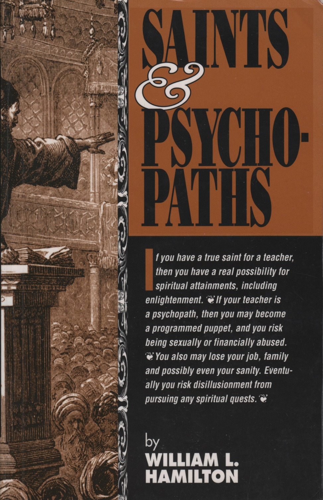

William L. Hamilton: Saints & Psychopaths#
Note
Other formats (PDF, HTML, ePub) available from github.com/edhamma/saints.
This e-book is a community effort. If you spot an error in the text (such as misspelled word) and have the skill, go to the address above and report or (if you have the skill) fix it. Thanks!
Revision 8397a50, built Oct 27, 2024.
1. Covers#
1.1. Front#
{kind=link}
If you have a true saint for a teacher, then you have a real possibility for spiritual attainments, including enlightenment. If your teacher is a psychopath, then you may become a programmed puppet, and you risk being sexually or financially abused. You also may lose your job, family and possibly even your sanity. Eventually you risk disillusionment from pursuing any spiritual quests.
Printed and bound in the United States of America. First edition All rights reserved.
Reviewers, may quote passages in a review without permission in writing from the publisher.
Although the author and publisher have researched all sources to ensure the accuracy and completeness of information contained in this book, we assume no responsibility for errors, inaccuracies, omissions or any other inconsistency herein. Any slights against people or organizations are unintentional. Readers should use their own judgment or consult a mental health professional when making specific evaluations of individuals.
Cover design: Brian Moucka, Poppy Graphics, Santa Barbara California.
ISBN: 0-9644904-0-4
Organizations, Schools of Spiritual Development, and Meditation Centers: Quantity discounts are offered for bulk purchases of this book for fund raising and educational purposes. Excerpts or special books can be created for special needs. For information contact Dharma Audio Network Associates, P.O. Box 1527, Coupeville WA 98239 or phone 800 726-2421
Dedicated to Binky who’s support in many ways has made my work possible.
Acknowledgements
To Vivain Darst, John and Ann Rush, Mel Schneider, and Markell Brooks who provided me with food and shelter while I was writing this book and participated in proofreading it. Also helping in making corrections: Al Reed, Janice Gale, Ken Folk, Katy Belt, Michael Freeman, Gretel Shanley, Tamara Comstock and Bill Andreas. Special thanks to Carmen and Harold Carlson who provided help in making the first printing possible.
Excerpts in this book from the Dhammapada by William L. Hamilton.
Other Books by William L. Hamilton:
Synergetic Tool Primer
Dhammapada (translation)
1.2. Back cover#
There are more psychopaths pretending to be saints than there are real saints. This book will provide you with some understanding of what a psychopath is, what a saint is and how to tell the difference. It is also a sharing of what Mr. Hamilton found in his own search for inner peace and ways to develop his unrealized potential. He provides a candid view of his experiences with a psychopathic teacher and a psychopathic wife which richly illustrate the type of behavior we should all watch out for.
This book is more than just a warning to watch out for false spiritual teachers. Mr. Hamilton draws on the experience of the Snowmass Contemplative Group which is a group of advanced contemplatives from many different religious traditions. They have developed an eclectic understanding of enlightenment from all religious traditions. Mr Hamilton extends and refines this view with his knowledge of Buddhist teaching which he believes provides the most detailed understanding of enlightenment. He cites scientific studies of enlightenment which take it beyond the realm of mystical experience, and develops it into a Western psychological concept.
Saints and Psychopaths provides us with an inspiration as to the possibility we all have for spiritual development and self discovery. It is a highly recommended guide book for all spiritual seekers.
{kind=link}
William L. Hamilton has been meditating since 1971 and has done more than seven years of intensive meditation practice in meditation centers and monasteries. He has studied under some of the greatest meditation masters in the world. He has been teaching Buddhist vipassana meditation since 1985.
In addition to teaching, he has founded audio cassette production facilities for several nonprofit organizations including the Hanuman Foundation, Insight Meditation Society, and Insight Recordings. He now spends most of his time writing, teaching and developing a meditation retreat center.
ISBN: 0-9644904-0-4
2. Preface#
There are more psychopaths pretending to be saints than there are real saints. This book will provide you with some understanding of what a psychopath is, what a saint is and how to tell the difference. It is also a sharing of what I have found in my search for inner-peace and for ways to develop my unrealized potential.
Some paths I followed were more like stepping stones which went part of the way, but became obstacles to further progress. Some of these paths were offered by sincere teachers, and others were paths of entrapment offered by psychopaths. I learned something from all my spiritual teachers, if only that some teachers and teachings should be avoided. I hope that sharing my experiences will provide you with some guidelines for avoiding similar mistakes, while encouraging you on your own spiritual quest.
2.1. My spiritual journey#
My spiritual journey began in 1971. I was then the president of a national franchise company after having a meteoric rise from being a stock broker in the early 1960’s. I purchased a small business from a customer, who was dying of cancer in 1964 and parlayed it into several other small businesses. In 1965 I resigned as a stock broker to devote all my time to my growing business empire. Everyone marveled at how successful I had become, and it seemed assured that I had a great future.
In 1971 I was given some LSD and some good advice on how to make use of it. I was told that I should make a firm decision not to go outside my apartment or answer my phone for 12 hours after I had taken the drug. It was suggested that I do some inspirational reading and listen to inspirational music for the hour or so it would take for full effect
I neither recommend nor discourage people from experimenting with psychedelic drugs. Although they rarely mention it, many of the best Western spiritual teachers today began their spiritual evolution with psychedelics. Most people who try them simply have pleasant, unpleasant or confusing experiences. Although only a minority of people who experimented with psychedelics had beneficial spiritual experiences, there were millions who experimented with them from the mid 1960’s to mid 1970’s. During this time, most of the people who became involved with meditation or who took spiritual journeys to Asia did so as a result of their experiences with psychedelics. This is rarely the case today. It seems that the drug experiences only showed that there were possibilities of altered states of consciousness. Today we have the results of the quests for inspiration.
My first experience with LSD was profound. During it, I had two insights that changed the course of my life. One insight was a transcendent experience of time and space, during which I briefly touched the stream of my unconscious mind. This was the basic seed that inspired my spiritual journey.
The other insight was an awareness that, as I had become outwardly more successful, I was becoming inwardly more uptight and unhappy. Suddenly I saw that all my personal relationships revolved around money. People associated with me because they expected me to invest in schemes, lend, or give them money. I could offer jobs, buy services or merchandise and provide money making opportunities. I saw that I had cultivated unsatisfactory motives in people around me and that I lacked truly wholesome personal relationships.
At the time that I came to these realizations, I was in the middle of developing a public offering of my company’s stock. If I had continued with this process for another three to five years, I could have made a twelve-million-dollar profit on my stock. However, it now seemed to me that making such a large amount of money would sabotage the type of relationship I would like to have with people. I soon began a process of divesting myself of business responsibilities. Within five months, I had found a new president for my company and set out on a full time spiritual quest.
I founded the Orphalese Foundation and gathered a group consisting mostly of psychologists who were interested in creating an intentional community dedicated to developing human potential. We did not feel that we had all the answers, but we felt confident that we could find and share answers. We had a 30-room house in Denver and a 123-acre retreat in the mountains. We explored a wide variety of practices from yoga and meditation to theories of human potential and cosmic consciousness. As with the vast majority of intentional community experiments popular at that time, our group became the victim of greed, aversion and delusion. We could say the same words as to how the goals of our community were also our individual goals, but the words had selfish individual meanings. After two years our group disintegrated, and we went our separate ways.
2.2. Ram Dass#
During the final phase of our groups’ disintegration, I discovered the book Be Here Now by Ram Dass. I was particularly inspired by the audio tapes of his talks. I could identify with his stories of experiments with LSD at Harvard in the early sixties when he was Dr. Richard Alpert working with Dr. Timothy Leary. At first they thought they had discovered a way to attain enlightenment, but after five years Dr. Alpert decided that drugs were a dead end. After abandoning drugs as a path, he went to India and found his guru who gave him the name Baba Ram Dass. He felt that his guru offered the answer to what he said was, “whatever it was I was looking for.”
Although Ram Dass did not claim to be enlightened, he did describe himself as a seeker offering what he found on the path to enlightenment. Since he said that Westerners were generally not welcome in the place he had found in India, I began a daily routine of the various practices he had described in his books and tapes.
The practices were primarily those of Raja Yoga—a combination of traditional Hindu practices such as study, reflection, breathing exercises, hatha yoga, morality and meditation, which could result in a profound transformation. I was quite impressed with the results I was getting from these methods, and it seemed that I was on the right track. As the community of the Orphalese Foundation was disintegrating, I was becoming more involved with Ram Dass and Raja Yoga.
2.3. Distributing audio tapes#
I wrote to Ram Dass about the high cost of his tapes limiting their availability to many people. I had a meeting with him and ended up being responsible for the distribution of his tapes through the Orphalese Foundation. Later, when the Hanuman Foundation was formed in 1974, the tapes were turned over to this new organization and I continued to be manager of this project. My work with the tapes and Ram Dass provided many contacts that became sources for this book.
I was raised as a Christian, but Christianity did not offer all the answers that I was seeking. Ram Dass had been raised as a Jew, but he went beyond Judaism because it was not providing the answers he sought. While I was with Ram Dass, I experienced an eclectic smorgasbord of spiritual traditions and techniques. Ultimately, I found that among the Eastern traditions, the Buddhist meditation he introduced me to is the most beneficial form of practice and, the Buddhist Philosophy is most in tune with Western culture.
2.4. Buddhist vipassana meditation#
After I left Ram Dass and the Hanuman Foundation in 1977, I gradually increased my emphasis on Buddhist Vipassana Meditation. In 1980 I did my first three-month retreat at the Insight Meditation Society (IMS) in Barre, Massachusetts. The teachers there were Western laypeople who had spent years studying Buddhism and practicing meditation in Asia. They intended to establish a new Western style of Buddhism almost without rites, rituals, or dogma, which emphasized the practice of meditation as its main feature. The method of meditation they taught was developed by Mahasi Sayadaw, who was the preeminent Buddhist meditation teacher in Southeast Asia.
I was inspired enough by the results of my three-month retreat to continue this practice for two years as a hermit in a remote area on Maui, Hawaii, Although I was in a remote undeveloped area, soon after I started my retreat, a stupa of enlightenment was built on the land next to my retreat. The stupa brought me into contact with Tibetan Buddhists, but my practice continued in the Theravada Buddhist tradition. I gained a deep appreciation for the Tibetan tradition during this two-year retreat.
People who made pilgrimages to the stupa would learn that there was a Buddhist meditator nearby, and when I was not doing intensive practice, I accepted visitors. Gradually, I was becoming established as a teacher, but I felt that I had much to learn. I could have continued my retreat indefinitely as a caretaker of the land that I was on, but I felt that I should go to Asia to learn more about teaching.
After two years, I returned to IMS intending to do six months of volunteer staff work before going on to Burma. It turned out that I could not get into Burma because of the political turmoil there. IMS was also going through a painful period of crisis because the social structure of the staff was virtually dysfunctional. Because of my background in tape recordings, a unique role of being quasi-staff, quasi-meditator was created for me. I founded the IMS Tape Library that later evolved into the Dharma Seed Tape Library. I had my own private office at IMS in which I could work quietly and meditatively, mostly isolated from the turmoil of the regular staff. I also did five hours of intensive meditation every day.
After managing the IMS Tape library for a year, the Board of Directors gave me a one year full meditation scholarship in 1984. It was a good time to be on retreat at IMS because four great Asian meditation masters taught there that year: Anagarika Munindra, Dipa Ma Barua, Tungpulu Sayadaw and Sayadaw U Pandita. I had heard endless stories about Munindra and Dipa Ma as they had been primary teachers of most of my Western teachers. Tungpulu Sayadaw was widely regarded as being fully enlightened. U Pandita was the successor to the late Mahasi Sayadaw, and was regarded as the leading authority on this method of practice. U Pandita turned out to be an incredibly powerful teacher, and has been the greatest influence in my developing an advanced meditation practice.
After the full IMS scholarship expired, I was able to continue my practice with a partial scholarship from IMS, grants from a private foundation and gifts from several friends. Finally, after being on retreat for almost five years, I decided to return to the real world. I spent eighteen months traveling all over the United States doing odd jobs and teaching meditation. During this period, my teacher Sayadaw U Pandita taught a ten-day retreat in California, which I attended.
I thought that I had learned the lesson that there is no particular time standard for how the practice unfolds. I expected that the purpose of a trifling ten-day retreat in 1986 was to renew old acquaintances and brush up on my meditation practice. I was surprised that this ten-day retreat turned out to be one of the pivotal experiences of my life. As soon as I could fulfill my teaching commitments after this retreat, I returned to IMS for another year and a half of intensive practice.
2.5. Peace Pilgrim#
During this retreat, a Tibetan monk visiting IMS did a reading from the Peace Pilgrim book. After reading the book, I became convinced that Peace Pilgrim was a rare case of spontaneous enlightenment that Buddhist texts refer to. She seemed to conform to the Buddhist concept about these cases: she was an inspiring teacher, but she lacked a complete methodology for guiding others to the same attainment she had made. Peace Pilgrim died in 1981, and some followers had compiled the Peace Pilgrim book from transcripts of her talks, newsletters, and letters.
What particularly inspires me about the Friends of Peace Pilgrim, the nonprofit organization distributing her book, was that they give books, audio and video tapes away free. Anyone writing to Friends of Peace Pilgrim, 43480 Cedar Ave., Hemet, CA 92544 and requesting the Peace Pilgrim book will receive a free copy. They rely only on unsolicited donations to continue the distribution of Peace Pilgrim’s message. Peace Pilgrim believed that spiritual teachings should never be sold. This is an ideal in the Buddhist tradition followed in Asia, but no one had been successful with free distribution in the West. For years I had been trying, without success, to figure out how to distribute audio tapes for free.
At the end of my retreat in 1988, I went to Hemet, California to do one year of volunteer work for the Friends of Peace Pilgrim. I did this partly to support the teachings of Peace Pilgrim, but also to learn how to do free distribution of spiritual teachings. I learned that it could be done when free facilities are provided and the volunteers have independent incomes.
2.6. Insight Recordings#
In 1989 I returned to teaching vipassana meditation in different parts of the United States. In 1990 I gave up teaching in order to found Insight Recordings that distributed audio tapes of Buddhist teachers. I took a one year sabbatical in 1993 to do volunteer work for the Vipassana Support Institute and to do a period of intensive practice with Sayadaw U Pandita in Burma. The retreat in Burma brought my total time spent in intensive meditation retreat to over seven and a half years. When I returned from my sabbatical, I found Insight Recordings in a dysfunctional state. Since I felt that the best service I could do was to write, I shut down Insight Recordings and put its equipment in storage.
2.7. My life is my message#
I have included the details from my personal melodrama in this preface so that you can have some understanding of the bias of my view. Also, I have been inspired by a quotation from Mahatma Gandhi. Once when Gandhi was boarding a train, a reporter asked Gandhi to give a message to the people of his city. Gandhi replied, “My life is my message”. In this book I have intertwined the message of my life with the messages of many different religious traditions.
I find that identifying myself precisely in religious terms is difficult and paradoxical. I consider myself a Christian who finds great value and truth in the teachings of Jesus. What we know of Jesus and his teachings gives me a strong suspicion that he was enlightened. I see strong evidence that contemplative Christian practices have resulted in a few people attaining enlightenment, and this reaffirms my Christian tradition. I separate with Christians who believe that an experience or rites and rituals can assure eternal salvation. I share the Buddha’s view that eternal salvation comes only from purifying our consciousness from greed, hatred and delusion. I see strains of purity and true understanding in Christianity that I can identify with.
At the same time, I have difficulty identifying with many aspects of the Buddhist tradition. Enlightenment has been defined in part as a disbelief in rites and rituals, but Buddhism has evolved a plethora of them. Buddhists believe in previous incarnations of the Buddha where moral values are exemplified, in my view, in improbable fairy tales. One of my teachers believed I should not have a buddha statue in my room because the buddha statue would see dirty, filthy parts of my body if I undressed in front of it. Buddhists can be fundamental and dogmatic in their beliefs and negative about other Buddhist traditions and other religions. Often good Buddhists believe that Buddhism (and possibly only their particular tradition) has a monopoly on enlightenment
Despite these reservations, I find difficulty disassociating myself from the Buddhists. Enlightenment is very clearly of central importance in Buddhism. Logic and personal experiences are officially stated by the Buddha as being more important than dogmatic belief, scriptures or any authority. At his death, the Buddha refused to appoint a successor saying that everyone should be a light unto themselves. The Buddhists, by far, have the most extensive and systematic understanding of what enlightenment is and how to attain it.
Joseph Campbell once said, “God is like a computer and religions are like programs.” “All the programs work” He discretely did not mention that, as with computer programs, some work much more efficiently than others. Also, different programs are intended to do different things. Although I don’t particularly think of myself as a Buddhist, I have noticed that when I explain concepts to people, I invariably use the Buddhist program. Today, when I seek teachings and guidance in meditation, I look for a Buddhist teacher. I am using the WordPerfect computer program to write this. I must be a Buddhist as well as a WordPerfectist.
2.8. Enlightenment#
In this book, I take an eclectic view of enlightenment from many different religious traditions. However, my area of expertise is in the Buddhist tradition, and when I describe details of a saint’s evolution I use the Buddhist model. A couple of the people who read earlier drafts of this book completely missed the point that when I discuss the process of evolution in the meditation practice, I am describing the Buddhist view of the evolution of a saint. Many people who are qualified to judge the relationship between Buddhism and Christianity have concluded that there is an essential relationship between enlightenment and saints.
Enlightenment is emerging from being a vague experience of Eastern mysticism. It is becoming a scientifically verified, quantified and qualified experience as it enters Western culture. In the past, when Buddhism entered new cultures, enlightenment eventually became the highest ideal of the culture, and perhaps even a fad. It could happen again.
If it does, there will be an abundance of false teachings and teachers that will go along with it. This is why I chose to write on the subject of Saints and Psychopaths. I want to share my experiences to help others avoid the mistakes I made. Also, I want to make a clear statement, in Western terms, as to what enlightenment is, in order to help people determine which teachers and teachings are leading to freedom and which are leading to slavery.
3. Part I: Psychopaths#
3.1. Psychopaths#
In the summer of 1974, Ram Dass had just finished teaching a six-week course to 1,300 students at Naropa Institute in Boulder, Colorado. His guru, Neem Karoli Baba Maharajji, had died a year before, and he was feeling somewhat depressed because he had not found a new teacher. Although many thousands of people looked up to him as their spiritual teacher, he knew that he was not enlightened, and he longed for a teacher he could trust. He had decided that he was going to go to India that winter to search for a suitable teacher.
Hilda Charlton, an eclectic spiritual teacher in New York City, took Ram Dass to see a woman she felt he should meet. He came into a room where a woman was sitting, apparently in deep samadhi. He was invited to verify her trance state by putting a mirror under her nose and trying various means to get her attention. It appeared to him that the trance was real. He then sat in the room for awhile meditating with her.
Abruptly she came out of her trance, and then appeared to channel Maharajji to him. The information being channeled seemed to be kinds of things Maharajji would discuss and things that Ram Dass had never mentioned to anyone. He was impressed, but at the same time he felt repelled by her excessive makeup, jewelry and vile language. It was explained to him that the woman was an incarnation of the Hindu deity Kali. Kali is a manifestation of the Divine Mother, who purifies people by appearing very frightening. This seemed to be a legitimate explanation for feeling uneasy about her.
After vacillating for several weeks, Ram Dass decided to commit himself to taking teachings from this woman. Although the teacher and teachings he was receiving were supposed to be a secret, word spread among the Western devotees of Maharajji, and soon New York City became an unlikely Mecca for dozens of them who came to attend secret classes with this teacher.
Later, Ram Dass wrote an exposé of his two year involvement with this teacher. His description of the complicated web of lies, deception, sexual misconduct and drug use by his teacher portrays a classic example of a psychopath pretending to be a saint.
3.1.1. There are more psychopaths than saints#
Psychopaths pretending to be saints present a very serious problem for all spiritual traditions. There are many more psychopaths pretending to be saints than there are real saints. If you have a true saint for a teacher, then you have a real possibility for spiritual attainments, including enlightenment. If your teacher is a psychopath, then you may become a programmed puppet, and you risk being , sexually or financially abused. You also may lose your job, your family and possibly even your sanity. Eventually you risk disillusionment in the pursuit of any spiritual quests.
For the purposes of this book I define a saint as any true spiritual seeker who, through a process of study, discipline, prayer, or meditation has attained a purification of mind and true spiritual understanding. In the Buddhist tradition a saint would be fully enlightened, although a legitimate teacher would be one who has attained at least the first of four levels of enlightenment.
A psychopath is someone who is morally defective and does not respect the values of property, truth and proper consideration for the effect of actions on self and others. Generally mental health professionals do not regard psychopaths as mentally ill because they do not manifest obvious dysfunctional behavior, but they appear to be rational. Most professionals prefer the terms sociopaths, borderline personalities, or antisocials.
Perhaps it is because my degree in psychology dates back to 1959 that I prefer the old fashioned term psychopath. I am doubtful that changing the name for each current vogue in professional understanding contributes to the public’s understanding of this very important issue. Also, my direct personal experience with psychopaths has reinforced the view that psychopaths are indeed mentally ill, even if the signs are not immediately obvious.
3.1.2. The origins of psychopathy#
The origins of psychopathy occur in early childhood when prolonged periods of feeling the unbearable pain of being unloved are experienced. Actually psychopaths may have been loved, but their parents’ problems with marriage, career, health, drinking, drugs, travel, etc. may have kept them from adequately expressing it. When the child had problems, he or she felt that there was no one to whom to turn for support, guidance and love. Most children who have this type of experience simply become neurotic, but others experience a more sinister development: As the stress builds, they feel that everyone and everything is the source of their suffering. They reach a breaking point and make a conscious decision to get even with the world. From that point on they feel that any harm they cause others is justified revenge. They become juvenile delinquents, and by the time they become young adults their pattern of behavior becomes so deeply rooted that they are virtually incurable.
There are two general types of psychopaths. One type is overtly violent, and most of them quickly end up in prison for murder or a series of violent crimes. The other is a covert type that is actually much more dangerous and can cause both violent and nonviolent suffering to large numbers of people. There are no limits to the amount of damage a psychopath can do. Hitler, Stalin, and Saddham Hussein are examples of psychopaths who did great damage when they seized political control.
You should understand that being a psychopath is not a black or white situation, but is measured on a gradient scale, and we all have some element of a psychopath in our personality. It is only when this characteristic is strong enough to dominate the personality that the label psychopath should be used. Even when this occurs some people are only slightly psychopathic and others are very psychopathic.
Very psychopathic people rarely remain long amid the byproducts of their actions even if they are the covert type. They either end up in prison, or are constantly on the move from place to place. They rarely acquire an advanced education, establish themselves in a career, or become recognized as useful persons in society.
However, slightly to moderately psychopathic persons can become established in a community, and covert psychopaths can have extraordinarily attractive and charismatic personalities. The entertainment business and advertising seem to attract a disproportionately large number of psychopaths perhaps because both professions involve creating illusions. They may be doctors, perhaps with fake degrees, who frequently are charged with malpractice. They may be lawyers who become deeply , involved with criminals and scam artists. They may be politicians who take bribes and abuse the powers of office. They may be psychotherapists who seduce or enslave their clients. They may be business people who sell shoddy merchandise, inflate repairs and do not honor guarantees. They may be religious leaders pretending to be saints.
3.1.3. Distinguishing saints from psychopaths#
Distinguishing a saint from a psychopath presents a unique problem because they have some common characteristics that seem at first to be identical. Both saints and psychopaths can have the appearance of a beautiful, radiant and attractive being. Both may tell you, ‘Be here now, forget the past, forget the future; be spontaneous, heed your inner voice, follow your bliss.” Both may advise you to not be bound by traditional social values but by higher spiritual values. Both may have messages from God or spiritual teachings tailored just for you. Both may be homeless wanderers. Both may manifest fearless behavior and may risk persecution. Saints and psychopaths can be intuitively perceptive of people’s mood changes, new developments, and new understandings. They may appear to manifest similar psychic powers, healing, mind reading, and channeling from other realms.
Although the powers of a saint and a psychopath may seem the same at first, they have different roots. Saints have a calm, clear, empowered state of mind as a result of discipline, meditation, and introspection. Psychopaths can develop paranoid samadhi, which is a concentrated mind, because they have done so many unskillful things such as lying, theft, injury, adultery, substance abuse, etc. Their powers come from having to have a very sensitive awareness to perceive when someone is coming after them. They are also gluttons for attention, and when they have your attention they will start to feed on your spiritual energies like a psychic vampire. They can sometimes read minds, tell the future, do healings, see things which aren’t physically apparent and you may become mesmerized and convinced of their divine power.
So how do we tell saints from psychopaths? My teacher, Sayadaw U Pandita, says that he never makes up his mind about peoples enlightenment until he has known them and observed them closely for a year. It is in the nature of saints to respond to sincere requests for help, and guidance. If you sincerely want help they will be there for you. They may ask you to make commitments once you are training under their guidance, but there is unlikely to be an initial urgent commitment. Psychopaths, on the other hand, are more likely to come on to you with an initial urgency, demanding that you make a commitment immediately or lose your opportunity. Therefore, my first advice about telling saints from psychopaths is to take your time.
3.1.4. Amoral or immoral?#
In time some very distinguishing differences between saints and psychopaths become apparent. Saints have such a deeply rooted morality from their own direct understanding that by normal social standards they may be amoral. The Buddha clashed with his culture by disparaging rites and rituals and not respecting caste. Christ, too, conflicted with his culture.
Psychopaths, on the other hand, are simply immoral. Their divergence from social standards involves self gratification and disregard for doing harm. At first it may be difficult to discern whether a teacher is amoral or immoral, but in time it may become apparent whether or not he or she adheres to the standards of behavior being taught. The situation that Ram Dass found himself in was that of having a teacher who insisted that everyone tell the truth, but she herself constantly lied. She forbade the use of drugs, but used them habitually. She insisted on celibacy for her students, but practiced adultery.
I use a standard of evaluation I call SAY, MEAN, DO. Saints will say what they mean and will do what they say. Psychopaths will mean something other than what they say and what they do may have little relationship to what they say and mean. For example, psychopaths may say they love you or want to help you, when what they mean is that they want attention or money. What they do in the long run is going to be a disappointment. It takes a while for consistency or inconsistency of SAY, MEAN, DO to come into focus. The more time you take in evaluating this the more accurate your conclusion will be.
3.1.5. Seeds of destruction#
Psychopaths are constantly planting the seeds of their own destruction, so it is good to look and listen carefully for this. When new psychopaths arrive on the scene, they or their co-psychopathic entourage will tell you many stories of how successful and well respected they were at their previous locations. However, in time they or other people will begin to tell stories of great conflict and discord at their previous places. Listen carefully to these stories and you will hear that they were at the center of these problems. Listen more carefully and you will see that they were the cause of these problems.
3.1.6. The Big Lie#
Psychopaths frequently make use of the Big Lie method, so you should critically evaluate the plausibility of the claims people make. You should be very suspicious when someone claims that 98% of cancers were cured, or 99% of the marriages they arranged were successful, or 100% of their students become enlightened. Almost all of such claims are made by psychopaths, especially if they repeat such claims over and over again.
3.1.7. Spiritual scenes#
Spiritual scenes are fertile feeding grounds for psychopaths. There are always new members and teachers arriving and there is a bias to welcome and accept them as being wonderful. Psychopaths thrive on not having to verify what they say. They frequently get away with claiming to be enlightened, the reincarnation of some deity, delivering messages from God, or having special spiritual powers.
3.1.8. The chorus of psychopaths#
It is common for psychopaths to pick up ideas from each other. Channeling is a classic example. From time to time there is a chorus of psychopaths proclaiming that California is about to fall into the ocean, or that Earth will be hit by a comet next August. When the disaster doesn’t happen they will say that their prayers prevented it. How do you immediately check out the validity of channeled information? Generally speaking you can’t, other than reflecting on the plausibility of their claims and waiting to see what happens.
3.1.9. More claims than comets#
Of course, you may miss out on the excitement of being a close disciple of the next avatar or messiah. You may drown when California sinks. Remember that avatars come every thousand years or so and a comet hits Earth every 100,000 years despite the proliferation of claims. In the last two thousand years there have been tens of thousands of predictions of drastic earth changes and not one has come to pass. You may feel attracted to a radiant being who is making unlikely claims and offering a shortcut to spiritual development. If you want a short cut to spiritual development, consider Russian roulette. The odds are better and the chance of suffering from a mistake is less.
3.1.10. The pattern of avoiding punishment#
Psychopaths skillfully evade blame when they are confronted with having done something wrong. Since they lack a true sense of guilt, they do not respond the way you may expect a guilty person to behave. Psychopaths have a very distinctive sequence of responses to dealing with confrontations. If one method of stopping a confrontation does not work, they will change strategies. When confronted with wrong-doing, a psychopath will respond in this sequence:
Ignore the issue.
Deny that they have done something wrong.
Attack the accuser, usually accusing the accuser of being the one who has done wrong.
Threaten to harm the accuser, someone else, something, or self.
Apologize and admit that they have done wrong, then ask for a clean slate or new start
A saint, on the other hand, will either immediately admit that he or she has made an error, or ask for clarification and seek reconciliation. An example would be Christ’s advice that when someone asks for your coat you should give your cloak also. Generally, saints will place a higher value on harmonious relationships than on pride or possessions. We must allow for cultural factors and personality characteristics, but when confronted with wrong-doing, saints generally will follow this sequence:
Acknowledge errors and misunderstandings
Admit that they have made an error
Apologize
Offer compensation or correction
Avoid that type of error in the future
The first strategy of the saint is the last strategy of a psychopath. But when psychopaths are finally forced to apologize they will outdo the saints. Their previous belligerent attitudes will vanish. They will apologize profusely and confess the error of their ways in great detail. They may even list wrongdoings that you were unaware of, to impress you with the depth of their change. Their transformation seems quite impressive and even professionals who should know better are sometimes taken in by their pretense. Judges have suspended sentences of repeat bigamists and outrageous con artists who swore to devote the rest of their lives to making restitution.
“Give me a clean slate”, is the refrain of psychopaths. They will proclaim that they are a new person or that they have been born again. Sometimes they insist that they should not be punished because the person who did those things no longer exists. Indeed they may make drastic changes in their behavior, from being rude and domineering to being humble and submissive. It is, however, all a ruse to get off the hook. For awhile after being caught psychopaths may go through a quiescent period, but in time the same old patterns of behavior will reoccur. They are not bound by conscience or true remorse. As soon as you walk out the door they may revert to their old ways without skipping a beat.
3.1.11. Psychopaths are self-destructive#
You should remember that the essential characteristic of psychopaths is that they are self-destructive and destructive of those around them. Sooner or later things are going to turn out bad. Having a psychopath around is like having a pet rattlesnake running loose in your house. When you determine that someone is psychopathic, you should make an immediate clean break with them.
Threatening a psychopath is like waving a red flag at a bull. Our legislators should be aware of this when they pass laws. Laws which motivate normal people to avoid crime may result in psychopaths committing more crime. Psychopaths are essentially self-destructive and so to threaten psychopaths with destruction if they break a law only increases their motivation. All too often our system of punishment results in sending psychopaths to prison which becomes a school for learning psychopathic tricks. Associations made in prison result in the establishment of a more dangerous network of psychopaths in society after they leave prison.
3.1.12. Psychopaths crave attention#
As a result of not having received love and attention as a child, psychopaths have an almost unlimited need for attention. One of the signs of a psychopath is that wherever they go they tend to become the center of attention. It doesn’t matter to them whether they do something good or bad as long as they get attention. They can be benefactors as easily as they can be dangerous and may steal things to give to someone else. At parties they become the focal point of jokes, speeches, pranks, story telling, arguments, fights, singing, dancing and intense activity where they are the center of attention. They are skillful, talented, entertaining, argumentative and accident prone. At lectures and meetings they become the center of attention by asking many questions, making statements about how they oppose something, or how they applaud and approve of what is being said. If they can’t get attention in a group, they will usually be doing lots of fidgeting in their seat, like O.J. Simpson did at his trial. If they no longer can get your attention by dominating you, then they can shift to seeking your assistance in helping them rehabilitate themselves or recover from an accident.
3.1.13. Motivating with guilt#
Another sign to watch for is that psychopaths tend to motivate you with guilt. Anything you do wrong becomes a lever for manipulating you. This is particularly true if you break, or threaten to break a promise, even though they usually have poor records in keeping promises.
3.1.14. Anxiety attacks#
There is one sign of a psychopath that usually only a close associate will have an opportunity to see. From time to time a psychopath will have anxiety attacks. They hide alone, or with someone totally under their control, when they become panicked about their health, fear of being arrested, assassinated, or attacked by devils, spirits, etc. Sometimes anxiety attacks last days or weeks, or sometimes only brief moments, especially if they get their co-psychopath motivated to do something for them as a result.
3.1.15. Organizations#
Most organizations, especially spiritual organizations, tend to make rules of various types as a result of their encounters with psychopaths. This can be useful in some circumstances, but usually the result is complexity and inconvenience for the members of the organization. The psychopaths will simply break the rule if they can get away with it, or do something else which is equally bad but not against the rules. Organizations would be better advised to develop an awareness of psychopaths and establish a system for getting rid of them.
Too often the initial impression that a psychopath makes on people is very positive. This is especially true in spiritual organizations. Sometimes psychopaths have an attractive, radiant appearance. They stand out in a group and people are likely to feel especially drawn to them. An organization would be well advised to be extra cautious about becoming involved with any unusually attractive or impressive newcomer.
Another thing to watch for in spotting psychopaths is that a group of people is likely to have a polarized mix in their response to a psychopath. Quite likely some people are going to feel extraordinarily drawn to a particular newcomer, and others will have a strong negative reaction to him or her. Typically, in time, everyone in the group is either going to develop a strong liking or disliking for a psychopath.
Psychopaths are dangerous even in legitimate organizations with honest leadership. If a psychopath comes on the scene bad things are bound to happen. Businesses become inoperable, teams become disorganized, families break up. Psychopaths are likely to be trouble makers, embezzlers, drug dealers, or get the organization involved with illegal dealings. The morale of the organization is likely to deteriorate, and the staff is likely to become divided into warring camps.
3.1.16. Buddhism#
Buddhism has fewer psychopaths than other major religious traditions. This is partly because Buddhists have a clearer idea of what enlightenment is, and leaders are more likely to spot someone who is pretending to be enlightened. Also, Buddhism is outwardly comparatively boring. Psychopaths are more likely to be attracted to singing, dancing, love, light, miracles, and channeling. Usually psychopaths have a great deal of trouble sitting quiet and still. I appreciate the boring facade of Buddhism, as it is a great protection.
At the same time the comparative scarcity of psychopaths in Buddhism leaves Buddhists more vulnerable to them. A psychopath may be sitting at the back of a meditation hall reading a book while everyone else is meditating. Occasionally even monks in monasteries get involved in strictly forbidden activities, such as sex, drugs, lying and stealing and get away with it because no one expects monks to do such things.
Generally you are safer choosing a Buddhist teacher who has been authorized to teach by a widely recognized teacher or tradition. Of course, psychopaths may claim authorization to teach, but they usually do not maintain close association with their tradition or other teachers. On the other hand, exceptionally good teachers frequently develop their own styles of practice which are different from their tradition. As a rule of thumb you would do well to avoid teachers who proclaim their enlightenment and put down other teachers. Although some of the most effective teachers in the West are laypeople, monks and nuns make safer teachers than laypeople, especially if they are actively associated with their tradition.
3.1.17. Co-psychopaths#
Although prospects for fundamental change in psychopaths is unlikely, the prospects for change in co-psychopaths are very good. Co-psychopaths are close associates of psychopaths who are caught up in their web of control and deception. They may be a spouses, partners or disciples. They, themselves are usually not morally defective, but they have accepted the artificial reality that the psychopaths have created, and they believe that the psychopaths’ behavior is acceptable because of their divinity, illness, abused childhood, enlightenment, etc. They have been programmed by the psychopath to lie, cheat, steal, or even murder. It is usually the disparity between their own inner sense of morality and the rationalized, programmed morality of the psychopath that causes them to break away. Frequently the self destructive nature of psychopaths will lead them to overplay their hand and cause their co-psychopaths to break away. Sometimes co-psychopaths leave repeatedly and then return to their psychopath.
Psychopaths can be a disaster for an organization if they succeed in getting a manager or teacher into a co-psychopathic role. There are some signs to watch for when a legitimate spiritual teacher becomes involved with a psychopathic partner: Teachers will have much less time to devote to their teaching. There will be a greater emphasis on the teachers making money either directly or indirectly as a result of their teaching. The teacher may leave to start a new organization, or many key people will leave. A new emphasis or activity will develop in the teachings. The teacher may get involved with some immoral or illegal activity. These signs do not mean a teacher has become immoral per se, but it is an indication of the power of their partner to create a web of commitments and distort reality.
3.1.18. Helping a co-psychopath#
Even after co-psychopaths break away, the roots of their programming are deep, and there is a possibility that they may return to the control and influence of the psychopath. It is a pattern of behavior similar to that of co-alcoholics and abused spouses. Even when co-psychopaths are successful in breaking away, there are prolonged periods during which they gradually realize the extent of the artificial reality that they adopted. Some never figure out what happened, other than realizing that the relationship was unwholesome for them. Co-psychopaths may need psychotherapy and support groups to overcome the inner conflicts they experience. Their chances for recovery are very good. It is highly recommended that co-psychopaths seek relationships with people or groups that have had similar experience, such as former members of religious cults.
If you have extricated yourself from a group dominated by a psychopath, you will have a strong desire to get your friends out of it too. Unless your friends in the group are expressing some doubts or reservations, it is usually fruitless to trying to talk them into leaving. Co-psychopaths are too caught up in the artificial reality of the psychopath to hear your advice. If you try too hard to convince them, you will succeed only in breaking off communication. The best strategy for a friend is to wait until they show signs of doubt and give them understanding support at the right time.
3.1.19. Purity of motives offers protection#
Some of the spiritual teachings you need to learn concern impurities in your seeking. To the extent that your seeking is motivated by desires for power, prestige, sex, sense desires, etc., you are vulnerable to being seduced by a psychopath. To the extent that you are motivated to become enlightened or to purify your mind of defilements, then you are on safe ground. Usually our motives are a mixture of good and bad. If you are a true spiritual seeker, you will convert experiences with psychopaths to a process of purification which decreases your lower motives and increases higher motives.
3.1.20. Psychopaths do not want to be cured#
One of the most tragic aspects of psychopaths is that even though they may pretend to want to change, they really do not want to. Psychopaths are rarely responsive to psychotherapy. They are difficult to cure because they don’t want to be cured. On rare occasions, they come to reflect on their lives during a mid-life crisis and may truly desire to change. Even then, it may take extensive psychotherapy with expensive specialists to induce a true transformation of behavior. These rare occasions occur only when they come to the desire to change on their own, and not when they have been caught and are only pretending to want to change.
It is not advisable to try to reform or cure psychopaths. The best advice is to learn to identify them and develop a strategy for cutting off the relationship. Although a relationship with a psychopath is painful, it is also an opportunity to enhance your spiritual growth and purify your own motives. Be patient with friends who are under the control of a psychopath, and be ready to help them when they express doubts. Awareness of the problem of psychopaths is half of the solution.
3.1.21. Conclusion#
Although there is a superficial similarity between saints and psychopaths, we can in time distinguish between them by objectively observing their behavior. We all have some psychopathic tendencies, as well as tendencies to be saints, but when these tendencies predominate, we use the label psychopath or saint. When we encounter some extraordinarily impressive personality, we would be wise to ask ourselves if this is the personality of a psychopath. Observe their behavior carefully to determine if they say what they mean and do what they say and mean. There is a Checklist for Saints and Psychopaths on the next page, and there are extra copies which can be removed at the end of this book. Keep this list handy and review it from time to time.
Checklist for Saints and Psychopaths |
|
|---|---|
SAINTS |
PSYCHOPATHS |
SAY MEAN DO consistency |
SAY MEAN DO disparity |
Adhere to own moral standards |
Breaks own rules |
Pay debts |
Many bad debts, writes bad checks |
Keep promises |
Break promises |
Truth is highest standard |
No true regard for truth |
Insists dose associates tell the truth |
Tell close associates to lie |
Un-aggressive philosophy |
Push philosophy aggressively |
Attractive but not drawing |
Attractive and drawing |
Waits for you to seek help |
Comes on with unsolicited advice |
Good reputation endures & improves |
Good reputation fades in time |
Projects & organization grow & improve |
Projects & organization degenerate |
In the long run things turn out well |
In the long run things turn out badly |
People have long term benefit from association |
People are damaged by long term association |
Have concern for effect of actions on self and others |
Are unconcerned for effect of actions on self and others |
Will immediately apologize for errors |
Apologize as last resort |
Look for their own mistakes & will apologize |
Ignore their own mistakes and apologizes only if cornered |
If trapped will not renounce principles |
If trapped will do or say anything to escape |
Typically have good health |
Typically have variable exotic health problems |
Typically have few accidents & injuries |
Typically have many accidents and injuries |
Felt loved when a child |
Felt unloved when a child |
Can sit very still |
Can sit still only when center of attention |
Encourage associates to be self reliant |
Enslave people around them |
Refrains from using mind-dulling substances |
Substance abuse common |
Are comfortable being in the background |
Compulsion to become the center of attention |
May adopt a spiritual name one time |
Adopt many aliases |
Any one psychopath or saint is unlikely to have all of the characteristics listed. Just because someone has some of these characteristics does not mean he or she is a psychopath or saint. |
|
3.2. Screw U#
In 1986 I gave a talk on the subject of Saints & Psychopaths at a meditation retreat that I lead with Shinzen Young. Several years later, a tape of this talk was played on a Los Angeles radio station. The next day I received many phone calls from people who wanted copies of this tape and more information on the subject. It turned out that about half of the people calling were mental health professionals.
One of the callers asked me about my education. I spontaneously replied that I had gone to Screw U. Although I have a BA. degree in Psychology (Ohio State University 1959), my advanced studies have come from my personal contact with psychopaths in daily life. I encountered several psychopaths when I was a businessman, when I was involved with intentional communities and also in religious organizations. One of the most valuable courses I took at Screw U was with a teacher I shared with Ram Dass.
While I was manager of the Hanuman Foundation Tape Library I received teachings from a teacher with whom Ram Dass was also receiving teachings. It was the same teacher described in the previous chapter. I regarded Ram Dass as my teacher, so I automatically gave the status of being a legitimate teacher to his teacher. It is unlikely that I would have been attracted to this teacher had Ram Dass not been involved.
After I had been involved with this teacher for about a year, Ram Dass announced to his students that he no longer felt that his new teacher was a legitimate teacher. Even though he gave a very clear and honest explanation for changing his mind, it took a couple of months for me to fully see that he was correct. I learned a great deal from the process of getting involved with and extricating myself from, association with this teacher.
3.2.1. The Hindu Tradition#
It is helpful to understand some aspects of the Hindu and Buddhist teachings which Ram Dass taught. In the Hindu tradition the ultimate objective is to merge your consciousness with God. Enlightenment is an implied part of this process. Since it is difficult to merge your consciousness directly with God, it is recommended that you merge your consciousness with enlightened beings who are capable of merging their consciousness with God. Usually there is a hierarchy of beings involved with this process of merging consciousness with God. Devotees should strive to merge their consciousness with their guru who is enlightened. The guru has merged consciousness with his/her guru and a lineage of gurus who have Merged with some deity such as Krishna, or Shiva, who has merged with God. If your guru is enlightened, then it is quite possible that this arrangement may hasten your attainment of enlightenment.
Although this system offers a short cut to enlightenment, it also offers an opportunity for infinite mischief for a psychopath. A devotee should cultivate an attitude of total oneness, trust and obedience to a guru. A legitimate guru will use this attitude only to expedite the devotee’s spiritual growth and will not use it for personal benefit. If you choose the path of devotion, you should be able to distinguish between a saint and a psychopath.
3.2.2. Buddhism and Hinduism#
Just as Jesus Christ was a revolutionary in Jewish culture, the Buddha was a radical revolutionary in Hindu culture. He encouraged questioning of spiritual authority and on a number of occasions set down principles for judging the validity of spiritual teachers and teachings, He directly rejected the idea of giving someone high spiritual status because of the status of their parents. He frequently challenged the idea that rites and rituals such as animal sacrifices, or bathing in a holy river could absolve sin. Some of his views were so contrary to Hindu culture that this may be one of the reasons that Buddhism died out in the land of its origin. The Mogul invaders formed alliances with some Hindu kings and eliminated all Buddhist monasteries and temples.
The oldest lineage of Buddhism, the Theravada tradition, lacks the devotion to many different deities that is characteristic of the Mahayana tradition. However, there is some expeditious value to devotion as a means of speeding the progress of a student’s development. The Mahayana tradition evolved for a long period amid Hindu culture after the Theravada tradition had gone to Sri Lanka. The Mahayana tradition has many more characteristics similar to Hindu culture than the older Theravada tradition. The Mahayana tradition places the greatest emphasis on enlightenment, but makes use of devotional qualities similar to the Hindu tradition by worshiping gurus and many deities. Ram Dass’ new teacher was primarily a Hindu teacher, but made use of some Buddhist Mahayana teachings.
3.2.3. The mysterious teacher#
I heard the first rumors about this teacher in November of 1974 when I attended a ten-day Vipassana retreat with Ram Dass and many devotees of Neem Karoli Baba Maharajji lead by Joseph Goldstein, Jack Kornfield and Richard Barsky. At the end of the retreat Ram Dass mentioned to me that he had found a new teacher, but strangely he would say nothing else about this teacher. Someone else told me that he was taking teachings from a Brooklyn housewife who had become spontaneously enlightened in her bathroom.
I decided to visit friends on Long Island, New York to see if I could get information about this new teacher. It soon became clear that my friends were involved with this teacher too, but they would say nothing about her or what they did with her. Several of my friends would mysteriously join a car pool and drive somewhere together, then return several hours later. After a few days I decided that I was going to learn nothing more, so I decided to return to Colorado.
At that time I was managing the Hanuman Foundation Tape Library in Boulder, Colorado. Two of my employees had been close devotees of Maharajji and spent many years in India with him. Soon after my return they received letters, from friends in New York that said devotees who had been in India with Maharajji were welcome to attend the secret classes. My employees wanted to go to New York to see what was going on, so we drove to New York together. I figured that my association with my employees would get my foot in the door and it did.
My employees were immediately included in all of the secret classes. We were staying with friends in New York City. As before, they would mysteriously join a car pool and go off to classes for several hours each day. I did get some more information on the nature of the classes. Most of the classes were held on week days in large houses occupied only by students, or in the home of the teacher while her husband was at work. There were five classes a week and the largest was over 100 people on Wednesdays in a rented class room. The classes were different sizes and only about a dozen people including Ram Dass were permitted to go to all of the secret classes. Of course, the secrecy and exclusivity of these classes increased my desire to belong to them.
3.2.4. A call from the teacher#
After we had been in New York for a couple of days, I received a phone call. It was the teacher and without telling me who she was, she aggressively asked me many questions about my sex life. It seems that I dealt with these questions satisfactorily as I was told that a car would come immediately and take me for a face to face interview.
The interview was conducted in front of a class of about three dozen people. The interview involved many questions about the type of spiritual practices I had done, where I lived and my relationship to Ram Dass. It was made clear in the interview that I wasn’t quite up to the high standards of spiritual development that was required for her students, but it was implied that I had some potential if I worked hard. At the end of the interview she told to see Hilda Charlton who would assign me special practices to, as she said, “Clean me up.”
Hilda Charlton was a devotee of Nityananda, who was one of the most famous gurus in India before he died. After the death of Nityananda, Hilda lived several years in the monasteries of Sai Baba. Sai Baba has long been the most famous guru in India and his monasteries are large and luxurious.
Sai Baba had authorized Hilda to teach a class in New York City as part of his organization. Two or three hundred people would attend her Thursday night classes at Saint John the Divine Cathedral on Manhattan Island. Hilda was the one who had discovered our secret teacher and introduced Ram Dass to her.
When I went to see Hilda, she gave me instructions to be celibate, vegetarian, to meditate, to do breathing exercises, and pray to the Virgin Mary every day to relieve my sins. She told me to return to Colorado and do these practices for three months before returning to New York. I then went to Ram Dass who told me that I could attend secret Tuesday night classes that the teacher had told him to conduct.
3.2.5. From Boulder to New York#
Since my employees were being admitted to all classes, we decided to move the Hanuman Foundation Tape Library from Boulder to New York. Ram Dass instructed me to rent a house in Queens on Long Island for the Tape Library and for six of his students. My employees were assigned a different house to live in. At this time there were six other houses in Queens which each had about a dozen students living in them, but this was the only one with just Ram Dass students.
A week after we moved into the house we all found ourselves in the kitchen at one time. It was clear that we needed to get organized as to cleaning and other chores; we decided to have a house meeting. Within a minute the phone rang. It was our mysterious teacher who promptly told us to call off the meeting. She appointed the person who answered the phone the house leader and said that she would send Ram Dass to come the next morning at 4 A.M. to conduct the house meeting. We were all quite impressed at the timing of the call and the special attention we had received.
3.2.6. Attending secret classes#
It was not long until every one in the house except myself was attending secret classes. It was clear that I was the low man on the totem pole in terms of spiritual development. Then about a month later, I received a call from the teacher who yelled at me, “Why are you not here!” It seemed that she was trying to make me feel guilty. But very clearly no one had told me to attend. She told me to show up for the largest class next Wednesday.
I felt honored that the diligent work on the various practices I had been assigned had paid off, and that I did not have to wait the three months that Hilda had mentioned. The Wednesday class was packed like sardines. We all sat on the floor, knee to knee, for about 3 hours without getting up. The teacher knew each of us by name, and during the class she had a brief interchange with everyone in the room. I was quite impressed with how appropriate her questions to me were ond how accurate her observations were. Wednesday was the day set aside for new students and visitors. On occasion she would exorcise a devil, or do a healing for newcomers. It was an interesting and dramatic class.
About a half dozen very advanced students who, we were told had psychic powers sat in front and there would be occasional exchanges with them. The teacher might ask them what invisible deities were in the room and then tell them that they had observed correctly. It seemed that this must be one of the most important places in the world since so many important gods dropped by for visits. The advanced students would praise our teacher for her love and devotion she had for her students and the wonderful results of her teachings. In turn the teacher would praise the advanced students for their enlightenment, psychic powers and tell them how important they were. Clearly we were a very special group of people to be honored by receiving such teachings.
After about three hours our teacher and about twenty advanced students would leave the main room for special advanced teachings; the rest of us were told to remain and meditate. Usually Hilda would be left in charge of leading the meditations of the main group. After a while the teacher would leave the second group and tell them to meditate while she took a few of them to another room for even more advanced special teachings. Finally, she would leave that group with Ram Dass to give him very advanced teachings.
3.2.7. The Divine Mother#
We were constantly reminded that our teacher was an incarnation of the Hindu goddess Kali. Kali is the wrathful aspect of the Divine Mother, who is regarded as the mother of the world or reality. The Kali aspect of the Divine Mother is frightening, the way a mother who loves her children frightens them with punishment if they misbehaved, Kali has black hair, black skin, and blood dripping from her mouth. She cuts off the heads of sinful beings and wears their heads in a necklace around her neck. Kali banishes sin and impurity from her children. Only the spiritually pure are safe from the wrath of Kali.
Our teacher had long jet black hair, and it sometimes seemed that her normal dark complexion took on a decidedly black tone. We were repeatedly told she would take on our karma and as a result, we were told, she would bleed copious quantities of blood from her mouth. On occasion, students who were her attendants in her home would call other students and tell them that their teacher was bleeding so much that they were worried about her health. They were sometimes told that the bleeding was from taking on the karma of their sin of doubt, and they were reminded what a great sacrifice she was making because of her love for them.
Our teacher had enormous amounts of energy. On occasion we had marathon classes which would last sixteen hours, and she would be full of divine energy when everyone else was ready to drop. We were told that she did not sleep, but there would be times that she would go into a deep state of samadhi for hours. It was not unusual for people to receive phone calls from her at two or four o’clock in the morning. Her style was to challenge people and make them feel guilty. She used vile language and usually brought up subjects which would embarrass them, such as their sexual inclinations. The ultimate punishment was to be banned from attending classes, although most who were banned would eventually be permitted to return.
3.2.8. Ram Dass leaves The Teachings#
After I had been there for about six months, our teacher announced that Ram Dass would be leaving what we called The Teachings. Ram Dass continued to attend classes for another month, but there were big changes after this announcement. There were greater melodramas after Ram Dass departed. It was announced that someone was trying to assassinate our teacher, and we were told to be on the lookout for strangers with guns. We were told that some lamas had come from Tibet to persuade our teacher to return to Tibet with them. They had determined that she was an incarnation of a deity, and they wanted her to return to her temple so that they could worship her. Our teacher disappeared for several days, and we were told that she was experiencing an overload of spiritual energy. All students were instructed to sit up all night in meditation to psychically draw off the excess energy so she could return home. Then it was announced that our teacher had left her husband, and they were going to be divorced. Again the teacher disappeared, but this time a few students started to get phone calls to join her in Florida.
A few people had chosen to leave The Teachings before Ram Dass departed, but after he left many more began to leave. I noticed that for a while after people left they maintained a respect for our teacher, but about a month after they left they developed a strong dislike for both The Teachings and the teacher. It was a puzzle that took me a few months to figure out.
The departing students left vacancies in the advanced classes, and suddenly I found myself promoted to all of the most advanced secret classes. It didn’t occur to me that the special attention that I was receiving was because I had a close association with Ram Dass. Our teacher was constantly pumping me for information to discover what Ram Dass was doing and saying. As time went on, it became apparent that there were various intrigues going on between the teacher and Ram Dass as gifts were returned and confidences were betrayed. The teacher and Ram Dass would deliberately give me conflicting instructions, and it was clear that they were both trying to get me to make a choice between them. Other students were also placed in circumstances where they had do choose which teacher to follow.
3.2.9. Ram Dass confesses#
Finally about three months after his departure, Ram Dass made a public explanation as to why he left The Teachings. He announced to his Tuesday night class that he had been deceived into believing that the teacher was enlightened. His suspicions started when the teacher made sexual advances to him under the guise of advanced tantric teachings. The private sessions of advanced teachings that he was supposed to be having became a cover for a sexual liaison with a married woman. She claimed to be beyond desire, but it became clearer and clearer to him that she was motivated by lust. The hypocrisy of having an adulterous sexual relationship while pretending to be a celibate teacher of celibate students was too much for him. Eventually he decided to leave, but since he felt that The Teachings were benefitting others he did not want to create a schism.
He had intended to quietly leave the teachings without conflict. However, the teacher would not leave him alone; he was constantly confronted with dirty tricks instigated by her. When other people left the teachings, they would come to Ram Dass to share their experiences of their teacher. Soon a vast web of deception came into focus. The information that convinced Ram Dass that the teacher was channeling Maharajji had come from a diary of a woman who had been with him in India. People who claimed to have seen large amounts of blood come from her mouth had been instructed to call Ram Dass, Hilda and others to say they were worried about the amount of blood. Everyone in the inner circle of students believed that others had seen blood, but when they compared experiences none had seen it. Her enormous amount of energy came from pills. Much of her supposed psychic information came from an intelligence network of her students.
The reason that people who left The Teachings developed dislike for her within a month after leaving was that they would exchange information with the others who left. People who remained in the teachings would rationalize what they heard, or not hear what was being said to them. I too rationalized what I was being told, and the awareness I developed of this capacity for rationalization was one of the most valuable lessons I learned in 1976.
Ram Dass’ revelations about the teacher seemed to me to be incomprehensible affairs of titans. Worship of the Divine Mother was to see that all reality was a manifestation of the Divine Mother. The highest teaching was that even horrible and unpleasant things were also manifestations of the Divine Mother. To see the Divine Mother behind all forms of reality was to see the true reality. It was a contradiction in terms to say someone had deceived me into seeing anyone as the Divine Mother.
I continued to regard our teacher as the Divine Mother. How could I be wrong? Everyone and everything was the Divine Mother, and to see things this way was an assurance that I was on the path to liberation. It seemed to me that I had benefitted from The Teachings, and I had made a great deal of progress in my spiritual development. This judgment was largely based on having progressed from being a rejected outsider to a key member of the inner circle. This is an example of the dubious types of reasoning that a co-psychopath is likely to use.
3.2.10. The inner circle#
Being in the inner circle provided an opportunity to witness deception and dishonesty that I had not been aware of before. I witnessed her taking pills and saw the effect they had on her energy. She took some of her students on shoplifting excursions, she charged meals to other people’s hotel rooms. She conspired with students to fake injuries for insurance claims, and she would habitually tell people things which I knew were not true. Seeing all of this as the play of the Divine Mother was wearing thin. These things were clearly wrong.
A couple of months after Ram Dass made his revelations, I finally announced my departure from The Teachings. It was a gradual process like a balance scale slowly swinging to the other side. I left when the balance was 51% doubt and 49% faith. In the ensuing weeks and months, the balance continued to shift to increasing doubt.
Over the years I would occasionally encounter friends who never left The Teachings. Knowing how their minds would rationalize anything I would say, I would make little attempt to encourage them to leave. If I had vigorously tried to get them to leave, they would have cut off communication with me.
3.2.11. Special interpretations of reality#
Although the method of viewing everything as a manifestation of the Divine Mother has some value in cultivating a transcendent awareness, it is a method which can be easily abused. In fact, all methods which require a special interpretation of reality are potentially dangerous, especially if a psychopath is involved. The worship of deities, gurus and teachers can be helpful in attaining liberation, but they all involve adopting a special view of reality.
3.2.12. Teachers should be guides#
My personal preference is now to be a light unto myself. My taste in teachers these days inclines to boring Buddhists who focus directly on the objective of enlightenment. The Buddha encouraged the attitude that teachers are guides who are familiar with a path. The guides do not make the journey for us, but only advise us. From The Dhammapada:
3.3. Mukti#
Mukti Ma Deva Walla was the name which Neem Kara Baba Maharajji gave to Jane. Mukti was traveling in India visiting all the big time gurus when she came to Maharajji. He was famous in the West as the guru of Ram Dass. Maharajji asked her what she did in America, and she replied that she and her then current husband, Charles Berner, conducted weekend Enlightenment Intensives. Maharajji replied to this by giving her the spiritual name which means Goddess Who Sells Enlightenment.
Mukti came into my life in the summer of 1977. At that time I was living by the yacht harbor in Santa Cruz, California. I had an income of $25,000 to $35,000 a year from investments and was managing the Hanuman Foundation Tape Library as an unpaid volunteer, distributing Ram Dass tape recordings. Mukti, had been traveling with a friend of mine until they had decided to go their separate ways, happened to be staying nearby, so when I heard that there was going to be a gathering of Maharajji devotees in the Bay Area I left a message at the home where she was a guest, telling her about it.
Instead of returning the call, she arrived at my house in the evening. She was on her way to Berkeley, and since it was late she spent the night. One thing led to another, and we ended up being together for the next two years. Because many of my friends were devotees of Maharajji, she started to use the name Mukti.
3.3.1. Feeling spiritually desolate#
I had been feeling spiritually desolate because I had never traveled to the East and met the great gurus. I had heard stories of miracles, insight and wonder from Ram Dass and many of my friends who had spent years traveling and meditating in India, but I had been unable to go on a spiritual quest because I was responsible for my mother, who was having a progressive series of strokes. Also, I had founded the Hanuman Foundation Tape Library four years earlier, and it was in a stage of development that made a prolonged trip for me impossible.
It did not occur to me that the quality of my meditation practice, the merit of my work and caring for a parent were more valuable spiritual activities than an exotic journey. I was fascinated by the stories of Mukti’s travels around the world and by her acquaintance with many famous gurus, saints, and teachers. She was adept at getting their personal attention, and she attributed this to their recognition of her spiritual development.
At age thirty-three, beautiful and talented, she had given up the comforts and luxury of a super-rich family to pursue her spiritual quest, and could tell endless stories of her adventures. She spoke fluent Greek, Spanish, Hindi and had a working vocabulary of many other languages. Mukti could sing, dance and draw. She was very intelligent, a great talker and she could get the attention of anyone she wished.
After we met, we were together constantly for three weeks during which we told each other the stories of our lives. She was intimately acquainted with many major gurus and spiritual teachers including Ram Dass, Ken Keyes, Chinmayananda, Sai Baba, Anandamayi Ma, Swami Satchitananda, Muktananda, Yogaswar Muni, Al Drecker, Amarit Desai to mention just a few. She also told me many stories about her mother who had been married to several different movie stars and millionaires. A particular set of stories concerned her mother’s yacht in Coca Beach, Florida; a 71 ft. converted PT boat with a cabin that covered the entire deck. Mukti said she was receiving $5,000 a month from a trust fund and was supporting sixteen hippies who lived on the yacht. She had many adventures with sex and drugs during this time. She would open the yacht to crowds of people Sunday afternoons when they would play Ram Dass lectures on the speaker system. I had previously heard stories before about a yacht at Coca Beach where Ram Dass tapes were played and now concluded that this was Mukti’s mothers yacht.
Mukti said that it was when she was living on the yacht that she met Charles Berner, who developed the weekend Enlightenment Intensive and fell in love with him. She said that he had tried to get her mother to give them a large amount of money, but her mother was angered by that and threatened to disown her and cut off her trust fund if she married Berner. She married Berner anyway, and had not received any trust fund payments since then.
Although the marriage ended in divorce, her mother had not forgiven her disobedience, and she still was not receiving her trust fund payments. Mukti said that eventually she would have to get all the delayed payments in a lump sum, but she did not want to legally challenge her mother who was trustee of her fund.
After being together with Mukti constantly for three weeks, I realized that my office work was piling up as well as other urgent matters demanding attention. The tape library office was in the house, a normally convenient arrangement, but when I attempted to get some work done I gradually became aware that there was something wrong with Mukti.
She could not leave me alone. It seemed that every five minutes she would come down to sit on my lap, ask a question and sit on my lap, or start an argument and end up sitting on my lap. I could not get any work done. We would have a long talk in which I would explain the pressing importance of my need for unbroken concentration. A few minutes later she would cut her finger, or need help upstairs lifting something, or want to go to bed. It just went on and on and, finally I would give up and we would go to the beach. The next day, when I tried to work, the pattern repeated itself.
I had planned to attend a three-month retreat at the Insight Meditation Society in Barre, Massachusetts that fall. One of the things that attracted me to Mukti was that, when I mentioned this, she said that she, too, had been planning to attend that retreat. I had to adjust the business to operate in my absence anyway, and after a couple of weeks of effort, I finally managed to do so.
During the next two years we traveled around the world twice. Mukti convinced me that traveling to India was more important than being available if my mother had a serious stroke. Mukti had a thick address book of names of wealthy devotees she had met while visiting various gurus, and she was a master at using her association with the gurus as a way to get invitations to stay in luxurious homes. My association with Ram Dass also proved useful in that respect, and she taught me how to capitalize on it. Before long I fell into her lifestyle of a professional house guest living out of a suitcase.
Because of our transient lifestyle it was difficult to focus on the quality of life we were leading. We were constantly entertaining or being entertained as guests, and moving from place to place. We had no particular responsibilities and promises did not have to be kept, as we were always on the move. Mukti and I did no productive work during our travels.
3.3.2. The three-month retreat#
Somehow we managed to arrive a month late for the three-month retreat. The rules of the retreat were simple and strict: Total silence was to be observed, except during interviews and talks with the teachers; there was to be no communication with other retreatants, no sex, no drugs, no stealing and no sentient being was to be harmed. The schedule of sitting and walking meditation retreat began at 4:30 A.M. and ended at 10:45 P.M, There were to be no days off this schedule until the end of the retreat in December. Mukti had told me impressive stories of her previous meditation practice and advanced initiations, so I expected that she would take to an intensive retreat like a duck to water.
She took to it more like a chicken takes to water. At the end of almost every hour of sitting meditation she would be lying in wait for me. She would grab my arm and lead me off to the boiler room in the basement with an urgent need to discuss something. She was having some medical problem, some psychic experience in her meditations, or plans had to be made for our travels, and on and on. Those discussions in the boiler room were strictly against the rules, and I kept reminding Mukti of that, but in the next hour she would have a new emergency.
She had several exotic medical problems and was on a very special diet. The diet was difficult for her to follow, so she got me to promise to support her morally by following her diet. Some of our meetings in the boiler room involved discussing the need for changes in our diet.
Once I had a serving of yellow tofu on my plate. Mukti mistook the tofu for scrambled eggs that were forbidden in our diet. She was enraged at my apparent betrayal, so in the middle of the meal she came over and punched me very hard in the ribs. That was a rather extraordinary thing to do at a meditation retreat in the presence of many sensitive, quiet people.
It soon became apparent to the teachers that Mukti and I were having major problems sticking to the rules of the retreat. Jack Kornfield had us in almost every day, together or individually, to discuss our problems, but after three weeks of trying to settle into the retreat, the incident in the dining room was the last straw. Despite her talent, beauty and being in line to inherit a hundred million dollars, I wanted to end the relationship.
Mukti was quick to see that I had truly resolved to bail out, and for two or three days she became a model meditator. I maintained my resolve that our relationship was over, but seeing her settle into the retreat opened my heart.
3.3.3. The clean slate#
Finally she left a note for me to meet her briefly in the boiler room after lunch. Her manner changed from demanding insistence to being soft and open. She confessed at great length that she now saw how out of line she had been. She even told me about rule-breaking of which I had not been aware. She told me that our experience and the meditation practice had resulted in her making a complete transformation, and that she wanted a clean slate and a fresh start on a new relationship. She had been married four times already and now she felt that she had found a relationship that might really work. She painted a vision of what wonderful things we could do with her money, then she said that it was difficult for her to meditate until we could resolve our relationship. It was becoming difficult for me, too, so the next day we left the retreat and checked into a hotel.
3.3.4. Our trip around the world#
After visiting friends in Boston, we went to Texas to spend the Christmas season with my relatives, then left the country on our first trip around the world. We had been in Greece for about a month, visiting Mukti’s relatives, when we received word that my mother had had a severe stroke. We immediately returned to the United States to be with her.
Although it appeared that she would make a good recovery from paralysis, that stroke seemed to affect my mother’s mind more than previous strokes. She was convinced that Mukti and I were going to get married, and she had been on the telephone with her friends, planning a wedding for us.
3.3.5. Getting married#
That brought up an issue that we had not resolved: Should we get married? Although there had been a great improvement since our experience at the meditation retreat, I could see that there were still potential problems with our relationship. On the other hand, being married would make traveling together easier, especially when we were staying at monasteries in India. Mukti also said that I was the kind of person of whom her mother would approve. If we got married and showed up at her house with a baby in arms, her mother’s heart would open, and all our problems would be over. From time to time Mukti had attempted to call her mother. Sometimes her mother would talk with her-for a few minutes, but usually she would hang up immediately when she realized it was Mukti. I thought that was strange, but Mukti explained that her mother was an unusually strong-willed woman. However, her plan to arrive home with a baby seemed likely to break the ice.
I still could not decide about getting married, so Mukti and I called Ram Dass and explained the situation. Ram Dass strongly recommended that we get married, and said that he would take a 40% interest in our marriage, Maharajji would take a 10% interest, and Mukti and I would each have a 25% interest.
With assurance from my teacher that it was my spiritual work, I no longer hesitated to get married. We quickly found a judge to marry us, and that quieted Mother’s plans for our marriage ceremony. Then, when it was clear that Mother had settled down and was making a good recovery, we resumed our trip around the world.
3.3.6. India#
India was indeed an awesome and spiritual experience. We spent three months traveling to pilgrimage cities and visiting famous gurus. I was ill with something or another most of the time I was there and quickly caught malaria, so when we arrived in the pilgrimage city of Hardwar I was taken immediately to the hospital. While I was there Mukti would stop by and visit me for a few minutes each day as she was going to see Anandamayi Ma, one of the most famous gurus in India. I, on the other hand, was too ill to be entertaining.
After a few days I was well enough to join Mukti in our hotel, I slowly continued to recover from malaria, but I had other problems, such as diarrhea and boils. Mukti was insistent that I should be using traditional Indian Ayurvedic medicine for my complaints and I agreed. At one point we were staying at the Neem Kara Baba Ashram in Brindaban when I began to develop two huge boils on my leg. I had just recovered from a boil the size of a grapefruit that had a core with the dimensions of an apple core. The boils were not only painful but made me feel ill from all the toxins they created. I was becoming quite impatient with the Ayurvedic treatments that seemed totally ineffective.
When it seemed that the two new boils were going to be as huge as the first, I panicked. I finally decided that the Ayurvedic approach was not working for me and that I was going to use Western medicine, so I began scraping off the herbal Ayurvedic poultice with the intention of applying antibiotics. When Mukti saw what I was doing, she became enraged that I would break my agreement and she shouted louder and louder at me as I proceeded. As I was about to apply the antibiotic, she grabbed the medicine from my hand and ran outside with it. I chased after her, caught her and wrenched the medicine from her hand. She was screaming and crying at the top of her voice as she followed me back into the room, trying to grab the medicine. By this time the entire staff of the ashram had gathered outside our window. Mukti continued to cry and then screamed that I had been beating her. I told the staff that I had not harmed her, but she continued to insist that I had been beating her. The staff finally left after they were satisfied that, at least, I was not beating her then. It was especially embarrassing for me considering my relationship with Ram Dass and the American devotees of Maharajji.
3.3.7. Another clean slate#
Again I decided to end my relationship with Mukti, for it had become obvious to me that it was more important to Mukti to control and manipulate me than for me to be healthy. But as soon as I resolved to end our relationship she abruptly changed. She cried for forgiveness and admitted that she was wrong. Again she described the error of her ways in great detail, became soft, open and asked for a clean slate to start our relationship again. I had seen this change before, but I really wanted to believe her. I went to the hospital for a shot of penicillin and my boils immediately began to subside. So did the turmoil in our relationship.
All went well until we returned to Santa Cruz, where Mukti wrote to her mother to tell her that she was married again and was going to settle down. She tried to call her, too, but had no more luck than before.
3.3.8. The financial crisis#
Meanwhile, my financial situation was getting critical. I had been spending money freely on the premise that there was a trust fund somewhere accumulating $5,000 a month, and that it was going to be only a matter of time before the money would be available to us. By then we had accumulated a total of $60,000 in one year bank loans. I had been borrowing from Peter to pay Paul, but it was getting difficult to play that game when I owed both Peter and Paul.
Something had to be done immediately as we could wait no longer for Mukti’s mother to come around. We had purchased a wide variety of items on our trip with the idea that we could find out what kinds of things would be best to import. I had purchased some new credit card sized calculators in Hong Kong, thinking that it would be easy to reproduce and print business cards on the back. The small calculators were quite a novelty in 1979 and I thought they would make an excellent business gift premium, so we decided to go into the business of custom imprinting small calculators.
3.3.9. The other strategy#
Another strategy, as I mentioned earlier, was for Mukti to arrive on her mother’s doorstep with a baby in her arms, but there was one problem with that: I had had a vasectomy. Casting about, we located the nation’s top specialist in reversing vasectomies, and he assured us that I had excellent prospects, so we scheduled an operation.
There is much work to do when setting up a new business, but when I tried to do it I discovered that Mukti’s impulse to pester me had not subsided. She had been having increasing problems with stomach pain and frequent vomiting, so we decided that it might be best for her to go to the Hippocrates Institute, which specialized in a regimen of raw food and wheat grass juice. It was one of Mukti’s favorite places. When she left for the Hippocrates Institute I flew down to Los Angeles for my operation.
The two weeks Mukti was at the Hippocrates Institute was a very productive time for me. I established a source for small calculators, bought and set up equipment for silk screening business cards on them, developed direct mail advertising, and rented a mailing list. The business was ready to go, and all that was left to do were routine things that Mukti and I could work on together.
When Mukti returned from the Hippocrates Institute, she was unusually eager for us to have sex immediately. We did, once, and immediately after that she received a message from God saying that we were not to have sex. This was one was frustrating, but I felt confident that this situation would pass. In the Hindu tradition celibacy is an ideal even for married people and since we would be in India with many Hindu friends it seemed appropriate at that time.
3.3.10. Importing from India#
We settled into developing our new business. Although we had a promising start with the calculators, Mukti was not happy about it, saying that the business was interfering with our spiritual development. What she really wanted was to import things from India, as that would give us an opportunity to visit the gurus when we went on buying trips.
We decided that the best item to import would be hand made silk rugs. I had a good location for a rug business near the River Oaks section of Houston, and Mukti knew many rich people all over the world. Mukti would be the sales force, and we were confident that she would do well selling investment quality silk rugs, so we abandoned the calculator business and set out for a buying trip to India.
I knew that Mukti would want to stay on to play in India, but our financial situation was critical. I made her promise faithfully that our trip would be a quick one-week buying trip, and that under no circumstances would we be gone for more than a month. Our plan was to buy $13,000 of silk carpets on my American Express card, then we would return and sell the rugs before lapse of the three months required for the charges to reach us from India.
On our way we stopped in Texas to visit my mother, and while there Mukti suffered a miscarriage. The doctor mentioned that the fetus was six weeks old.
We continued on to India, and there we ran into a former girlfriend of mine with whom Mukti quickly developed a close friendship. We traveled together to Kashmir to buy carpets and then went down to Bombay, where we learned that Anandamayi Ma and Sai Baba would be in the same city in southern India on Anandamayr s birthday. They were the two most prominent gurus in India, and it seemed certain that those two favorites of Mukti’s would come together on that day. The auspicious occasion was only a week away, but our allotted week had expired.
3.3.11. Mukti stays in India#
We finally decided that Mukti would stay on for another week with our friend, but before I went ahead to Houston to prepare for the big rug sale I reminded her of her solemn pledge not to stay more than one month, and urged her to return to the United States as soon as possible.
A week went by and there was no word from Mukti. A month went by and there was no Mukti or word from Mukti. Then, finally, after six weeks, I received a telegram from Mukti in northern India saying that she had typhoid and was too ill to travel.
I felt trapped in an impossible predicament. I wanted to go to India, but I couldn’t. Mother’s health had deteriorated and her medical bills were now $1,700 a month more than her income, and I had to make up the difference. I had to make over $1,000 a month in interest payments, and bills from our travels were coming in at the rate of about $2,000 a month. I had to make over $5,000 a month before I even could pay for food and shelter. I could not possibly go to India, or our finances would fall like a house of cards—and Mother was dying.
I contacted everyone I knew who might be going to India. Starting with Ram Dass I sent a string of people to Mukti’s aid, but it was another six weeks before a report arrived.
Meanwhile, two weeks after the telegram, I finally received a telephone call from Mukti in New Delhi. She said that she could not return because she had lost her plane ticket, and she was still too ill to travel. She begged me to come to India to be with her. I explained that it was impossible for me to go to India, but that I had sent many people to take care of her, I told her to use a credit card to buy another ticket and return immediately, but she continued to beg me to come to India to be with her, and then ended the call, saying that she was too ill to continue. That was the last I heard from her for a few months.
3.3.12. Reports from India#
Then the reports from India started to come in. Ram Dass’ letter was the first, reporting that Mukti had returned to Hardwar and seemed in good health and spirits. The journey from New Delhi to Hardwar is more arduous than taking a plane from New Delhi to Houston, and that cast doubt upon her claim that she was too ill to travel. Other reports came in from time to time saying that she was doing well and did not need help. One report included a relayed message that the plane ticket she left with an agent had been sold and that she should come by and pick up her money. So much for her excuse about not being able to return because she had lost her ticket.
And then another kind of report started to arrive. Back in 1979 it took credit charges made in India about three months to appear on statements in America. It soon became clear that at the time Mukti claimed to be on her death bed she was traveling almost continually to every major city in India. The true magnitude of her lies and betrayal was starting to dawn on me. How could someone I had totally trusted do such things to me?
3.3.13. The American Express card#
I attempted to have her American Express card cancelled, but I had signed a contract with American Express that legally obligated me to pay any charges she made on her card. It was the same as if I had asked American Express to cancel my card and then continued to make charges on it. I had to pay the bill.
By the end of 1979, I had been forced to sell all of my income producing assets, and I had ten thousand dollars in the bank When Mukti called me at Christmas, while I was visiting my mother, I said some things to her in anger. Her typical strategy when caught doing something wrong was to counter with accusations of her own. True to form, she became angry with me for not going to India to help her when she was ill. I made an obvious reply to that and she hung up in a fury.
3.3.14. $20,000 a month in India#
That was the beginning of what was probably a record for credit card abuse in India. For the next five months Mukti went on a charging rampage that averaged $20,000 a month on my American Express card. India was not accustomed to dealing with fraud of that kind. Indian merchants rarely bothered getting authorization for charges because the telephone system was so poor and authorization was never refused anyway. During that time Mukti went to each of the American Express offices in India and got the maximum of $1,000 in travelers checks despite the fact that I was trying to get American Express to cancel my card. I told them that I had no chance of paying her bills, and advised them where she was and what she was doing. The charges were stopped at last, but only after she reached Hong Kong and tried to use the card there.
People are amazed that it is possible to spend $20,000 a month in India. Later Mukti admitted that it was hard work, but she proved that she had a talent for spending money. She started in New Delhi by taking a suite of rooms for herself and another for her boyfriend in one of the best hotels. Then she bought plane tickets for a guru and his entourage of twenty people and they all flew down to Bombay. There she checked into the Taj Mahal hotel and took a suite for herself, one for her boyfriend and a third for the guru. Meanwhile, she left the meter running on the rooms in New Delhi. From Bombay she went to Madras and repeated her performance. After all, she had to return to each major city every three weeks to draw her limit of $1,000 in travelers checks from American Express.
She was quite adept at drawing attention with her credit charges. For example, she charged a $1,500 shawl that she gave to Anandamayi Ma, which really impressed her Indian devotees. Again, when Indira Gandhi’s son was killed in a plane crash, and she went to Anandamayi Ma for consolation, Mukti saw a good attention-getting scene, so she rented a white, air-conditioned Mercedes Benz, with a chauffeur and arrived at the ashram while Indira Gandhi was there.
Throughout that period I was at my mother’s bedside, as it appeared that she was close to death. But after three months her condition stabilized, so I made a trip to California to take care of some of my possessions there. On the way I stopped in Santa Fe, New Mexico, to visit Ram Dass for a few days, and mentioned to him that his share of the current month’s American Express bill was $8,000. He was silent for a few minutes, and then said, “Is that a forty percent or fifty percent interest I have in your marriage?” He never paid.
3.3.15. Back after fifteen months#
I also visited another friend who was a devotee of Anandamayi Ma, and he suggested that I write a letter to the abbot of one of her monasteries and tell him exactly what Mukti had been doing. I did, and it worked. Anandamayi ordered Mukti to return to me immediately, and within a month she was back in Houston — fifteen months after she had faithfully promised to return in one month.
I was prepared for her tactic of attacking when she was wrong, so when I picked her up at the airport and she met me with an angry “Why didn’t you come to India to be with me?” I replied with accusations of my own. Immediately she switched from being angry to being soft and loving: “You are right and I was very wrong. I love you. Forgive me. Give me a clean slate and let’s start over.” She was a master and put on a good show, but this time she had gone too far. I was determined to extricate myself from my co-psychopathic role.
Mukti called her mother, and it appeared that at last she was giving in. Her mother said she was purchasing a new house in Palm Springs, California, and she invited Mukti to come out and see it in the following month. At that time Mukti was staying with a friend in Carmel, California, and was so overjoyed at the news that she put a deposit on a million-dollar house in Carmel.
We agreed to a divorce and a settlement Mukti agreed to pay me $150,000, which represented fifty percent of the decline of my net worth while we were married, and she also agreed to pay the $150,000 in charges remaining on my American Express account. The settlement was to be paid on September 1, 1980, shortly before I was to start my long-delayed three-month retreat at the Insight Meditation Society.
3.3.16. “I stole that”#
I joined Mukti in California to separate our personal possessions that were in storage there. First we separated our belongings in the usual way, but when deciding who should take possession of items acquired together Mukti would frequently say, “I stole that,” to establish her claim to them. I was amazed at how frequently she would say this.
I had been vaguely aware that Mukti would pick up some merchandise from stores and be in too much of a hurry to pay. Occasionally I would say something to her about it and she would invariably reply, “God told me to take it.” What appalled me was not only how frequently she said “I stole that,” but that some items were from homes where we had stayed as house guests. That was a sobering insight into how the mind of a co-psychopath can rationalize and not see things that should have been seen.
3.3.17. Another delayed insight#
I had another delayed insight while we were in Santa Cruz, during an amicable period when Mukti had agreed to make restitution in our divorce settlement. After we had separated our personal possessions, Mukti took me to attend a concert given by a friend whom she admired for living a life of luxury by receiving multiple welfare payments. She said that they had met when she was at the Hippocrates Institute. A couple of weeks later it finally dawned on me that the last and only time I had sex after my vasectomy reversal was one month before her miscarriage. The fetus she miscarried was six weeks old, so she must have gotten pregnant shortly after arriving at the Hippocrates Institute.
3.3.18. There are no limits to the evil that a liar can do#
I had resigned as manager of the Hanuman Foundation Tape Library when Mukti and I began our travels, but I still received some mail there and stayed there whenever I was in California. One morning I had gone out for breakfast. When I returned I discovered that Mukti had arrived early for our meeting and had persuaded an employee to lend her a key to get into the office. When I walked in, she was sitting at a desk, talking on the telephone, with a stack of my unopened mail in front of her.
A few months later I began to receive charges on a new Master Card that must have been in my unopened mail, and in a few months they totaled over $20,000. That was after Mukti returned from India and apologized profusely for what she had done with my American Express card, It was after she asked for a clean slate to start over. It was after we had agreed to our divorce settlement. That reminded me of a saying attributed to the Buddha, “There are no limits to the evil that a liar can do.” That saying has come to mind often since we went our separate ways.
Fortunately, I did not have to pay for any of the charges on the stolen credit card because I never actually received it. The charges on the American Express card were only a civil matter involving a bad debt, but the use of a stolen card constitutes theft, a felony. Meanwhile, American Express would not issue me a new card, and that blew my last good line of credit.
3.3.19. The divorce settlement#
The September 1, 1980 date for Mukti’s divorce settlement payment arrived, but the payment did not. I called a mutual friend in California who told me Mukti had gone to India for one month. (We know about her one-month trips to India.) Mukti knew that my three-month retreat started in September, so it was especially inconsiderate of her not to let me know what was happening. I would not know until the end of the retreat whether I had all my bills paid and $150,000 in the bank, or no money and $150,000 in bills that I could not pay. Meditation is difficult enough without a situation like that.
My mind was in turmoil for the first ten days of the retreat, but since I had done everything I could, I felt morally clean, and that allowed me to break through the confusion and settle into a good retreat experience.
Though I would not know my fate until Mukti returned from India, I was not at all surprised at the end of the three months to find that she had not returned and had left no hint of when she might do so. With my options now severely curtailed, I chose to begin a two-year retreat as a hermit in a remote area on the island of Maui, Hawaii.
3.3.20. Maybe there wasn’t a trust fund#
In the spring of 1981, while I was secluded on Maui, Mukti came through Hawaii on her way back from India, learned of my location from friends, and came to visit me. She told me that when she called her mother in Palm Springs, her mother said that it would not be a good time for a visit, and abruptly hung up. Apparently, she had reflected upon the many clean slates and new starts that she had given Mukti, and renewed her resolve to have nothing to do with her. I told Mukti that my attorney and American Express could find no trace of a trust fund in her name. “Well,” Mukti replied, “maybe there wasn’t a trust fund. All I know is that the last check that I received from my mother was for five thousand dollars.”
It turned out that the woman whom Mukti called her mother was actually her adoptive parent. Mukti’s real parents had immigrated from Greece to New York City when she was ten years old. They had been wealthy, but lost their businesses. They had difficulty adjusting to a new culture and having to work and had put a heavy strain on their marriage. Mukti felt ignored and unloved in the new situation, and had become a problem child. She began to spend more and more time with an old friend of the family who had a home in New York City, a wealthy but childless lady who proposed to adopt Mukti. Because her real parents did not know what to do with her, and their friend offered a good opportunity for their daughter, they were quick to accept the offer.
3.3.21. Cocaine Jane#
Unfortunately, Mukti continued to be a problem child with her adoptive parents. Her new mother divorced and remarried. Perhaps her adoptive mother, giving attention to a new husband, made Mukti feel insecure and resentful, but in any case she did not like her new stepfather, and by the time she turned eighteen she had left home.
Living off a temporary allowance, Mukti became a rock band groupie and had a rock song written for her entitled Cocaine Jane. Mukti told me many stories about how her adopted mother would try to make her change her behavior and lifestyle. Some things she did were quite embarrassing to her family. After several major but futile efforts to get her to straighten out her life, she was warned that if there were not a basic change in her behavior, she would be cut off. She didn’t, and she was.
3.3.22. There are no limits….#
After my two-year retreat in Hawaii I left my truck with a friend to sell for me, having signed the title to make the sale easy. Mukti was a houseguest of my friend shortly after I left, and she took the opportunity to steal the signed title, sell the truck, and keep the money. “There are no limits to the evil that a liar can do.”
Ken Keyes wrote extensively about his affair with Mukti in his book, Discovering the Secrets of Happiness. The yacht which she described as her mother’s in fact belonged to Ken Keyes. This is but one example of how she changes names and circumstances to weave a lie that has some basis in fact. From time to time I hear reports of Mukti’s trail of devastation and betrayal. She has changed her name several times, and for a while lived with a plastic surgeon who changed her appearance, but her behavior has not changed. She stole $40,000 from a lady who had befriended and helped her often; she was caught selling food stamps and has forged checks, but somehow managed to avoid jail; and I have heard several rumors that people have invested in her schemes and lost their money.
In 1992 I ran into Mukti at the Neem Karoli Baba Ashram in Taos, New Mexico. She told me that the person I knew as Mukti was dead and that she was a new person. The only difference I could detect was that the old Mukti would have asked for a clean slate. True to form, I have heard stories since then of the destruction and duplicity that the new Mukti has left in her wake.
3.3.23. Saint Mukti#
My experience with Mukti is particularly relevant to the subject of saints and psychopaths. Mukti represented herself as being enlightened, and indeed many people believed that she was. One of her previous husbands was a guru, with a substantial following in the United States. When Mukti came into contact with followers of that tradition, they treated her with awe.
One of the techniques of this tradition was to be able to give shaktipat. Shaktipat is a psychic energy a guru can administer which has a profound effect on the recipient. Shaktipat can be administered directly by a touch, or remotely in a large room, or even in another country when the recipient is meditating. There are a variety of experiences a recipient can have, such as falling into a deep trance, sudden rapid, erratic breathing, energy sensations in the body, etc. Once Mukti touched a man (from her former husband’s organization) who was visiting us. He fell over in a brief trance and slowly recovered in a confused, blissful state. He felt that he had been cleansed and transformed by his experience, and was quite impressed by Mukti’s power.
I invited Mukti to give me shaktipat, but she claimed to have been told that after having been given this power she should never use it frivolously. She said that it should be administered only when someone indicated certain signs of readiness for the experience, but she never clearly explained what those signs were.
Although shaktipat may very well be a legitimate, beneficial phenomenon used by saints and gurus, the ability to give shaktipat should not be regarded as proof of anything. The experience of shaktipat is similar to experiences that dubious Christian faith healers are able to give some people. There have been some studies with Kirlian photography which indicates that there is some kind of transferal of energy from a healer to recipient, but there is no explanation of what this energy is. Certainly we would not declare that the electric eel is a divine fish because it is able to transmit a profoundly effective energy. My view is that any strange or psychic phenomenon should be taken at face value only and that no conclusions should be drawn about anyone’s spiritual attainments because of their powers. Because people usually regard the manifestation of powers as proof of divine authority, some legitimate spiritual teachers manifest powers to get people’s attention, but demonstrations of miracles and powers may only prove that someone is a good illusionist or magician.
Mukti could also manifest psychic powers other than shaktipat. One example occurred when we were unpacking after our first trip to India. I was in the bedroom with the door closed, and I unpacked a souvenir from a previous relationship that Mukti had asked me to throw away. I hid it under some things in a drawer. About ten minutes later Mukti entered and was walking across the room toward me when she suddenly stopped, turned ninety degrees, crossed the room, opened the drawer, reached in, directly pulled the object from the bottom, and said, “What are you doing with this”?
Mukti frequently received messages from God. Sometimes the messages were dubious, and at other times they seemed profoundly right and appropriate. I never was convinced that they were indeed messages from God, but while we were together I never entirely dismissed them as fraudulent. I mentally filed those messages under the category of Maybe, but they tended to manifest a self-serving pattern from Mukti’s viewpoint.
3.3.24. Need for attention#
Mukti was motivated by a need for attention. I suppose it was rooted in her childhood, because her parents paid her less attention as their family and their life of luxury and comfort fell apart. Then the change to a new life in a new country brought her even less attention. Whatever the cause, it seemed that she would do anything, good or bad, to get the attention she craved.
As we traveled around, constantly meeting new people, I had a ring-side seat for observing whatever she did to people. Whether a maid in a hotel, a waitress in a restaurant, a customs official, a policeman, a stewardess, or someone sitting next to her on a plane, they would notice and remember her. She seemed equally inclined to do something for which they would hate her or love her, but they would remember their encounter with her. She would never order something from a menu, but had to exchange or substitute items, or have something especially prepared. It was usually easier to get attention by complaining bitterly and excessively about the quality of food but, on occasion, she would have ringing words of praise for food and service.
3.3.25. Trust and distrust#
It seems that Mukti was involved in an endless cycle of trust and distrust. It was very important to her that people keep their promises to her. She was constantly insisting that everyone around her make all sorts of promises to her, but became enraged whenever she felt that anyone had not kept a promise. At the same time she seemed incapable of keeping her own promises.
Mukti’s constant lies added a dimension to her cycle of trust and distrust. One of the first things she told me about herself was that she was a reformed pathological liar. That was her first lie to me. At times it was a good cover for things she had done in the past that involved lying. As with promises, she would become enraged if she suspected anyone told her a lie, and yet she seemed incapable of telling the truth. Many times she told me stories of events in her life, changing the names and circumstances slightly to create a false image of what really happened. It was puzzling to me why she would do that, as it would have been just as easy and interesting had she told the truth.
On occasion I was aware that she was telling someone something that was not true or not entirely true, yet, when confronted with the fact, she never failed to manufacture a rationalization or explanation. It is the nature of a co-psychopath to readily agree to improbable distortions of reality. One of the lessons I learned as I extricated myself from my co-psychopath role was that she had told me countless lies which I had been unable to detect, for even though I knew she would lie to other people, I thought I was exempt. It wasn’t until after she failed to return from India that I became aware that she had told me many lies.
4. Part II: Saints#
4.1. Saints#
4.1.1. What is a saint?#
I previously defined a saint as a spiritual seeker who, through a process of study, discipline, prayer, or meditation has attained a purification of mind and true spiritual understanding. Now I am refining this definition to say that saints are enlightened. In this chapter I will be defining enlightenment from the viewpoint of different religious traditions, scientific research, psychological theory and from the viewpoint of the Buddhist tradition.
By defining saints as enlightened, I am excluding some saints from different traditions whose sanctity is based on miracles, or as being special authorities representing God. For example, I am being more restrictive than the definition of a saint by the Catholic church. A purpose of certification of saints by the Catholic church is to assure people that their prayers to saints are received by angels in heaven who can intercede on their behalf. The bases for canonization (certification) include such things as three verified miracles and review by church scholars, etc., but the standard does not include enlightenment. Certainly it seems that some canonized Catholic saints are enlightened, but there is no guarantee that all are. On the other hand, traditional Buddhists regard Buddhism as having a monopoly on enlightenment, and this does not seem to be true.
All major religious traditions have some saints, prophets, founders, or authorities who seem to have been enlightened. Most religions have some literature which touches on this subject, but the Buddhists, by far, have the best technical understanding of enlightenment. They not only have a clear systematic analysis of what enlightenment is, but also they have a comprehensive system for attaining it that works. At the same time, understanding the views of other traditions gives a richer understanding than Buddhism alone provides. It is the contemplatives from different religious traditions who can provide us with this link of understanding.
4.1.2. The Snowmass Contemplative Group#
In the early 1980’s Father Thomas Keating, a Catholic priest, sponsored a meeting of contemplatives from many different religions. The group represented a few Christian denominations as well as Zen, Tibetan, Islam, Judaism, Native American & Nonaligned. They found the meeting very productive and decided to have annual meetings. Each year they have a meeting at a monastery of a different tradition, and share the daily practice of that tradition as a part of the meetings. The purpose of the meetings was to establish what common understandings they had achieved as a result of their diverse practices. The group has become known as the Snowmass Contemplative Group because the first of these meetings was held in the Trappist monastery in Snowmass, Colorado.
When scholars from different religious traditions meet, they argue endlessly about their different beliefs. When contemplatives from different religious traditions meet, they celebrate their common understandings. Because of their direct personal understanding, they were able to comprehend experiences which in words are described in many different ways. The Snowmass Contemplative Group has established seven Points of Agreement that they have been refining over the years:
The potential for enlightenment is in every person.
The human mind cannot comprehend ultimate reality, but ultimate reality can be experienced.
The ultimate reality is the source of all existence.
Faith is opening, accepting & responding to ultimate reality.
Confidence in oneself as rooted in the ultimate reality is the necessary corollary to faith in the ultimate reality.
As long as the human experience is experienced as separate from the ultimate realty it is subject to ignorance, illusion, weakness and suffering.
Disciplined practice is essential to the spiritual journey, yet spiritual attainment is not the result of one’s effort but the experience of oneness with ultimate reality.
4.1.3. Contemplatives and enlightenment#
Contemplatives from different traditions generally agree that there is a transforming experience they agree to call enlightenment. They agree that enlightenment is attained as a result of controlling the mind with various forms of practice. Usually these forms of practice are done in a simplified protected environment where practitioners are freed from worldly concerns to direct their attention inward. The practices may involve body motions or body sensations, sight or focusing the vision on particular objects, an awareness of certain outer or inner sounds, focusing on the sense of taste or smell, observing the processes of the mind or controlling the processes of the mind with prayer, mantra, reflection or meditation. The common denominator of these practices is that they focus consciousness on a sense door (Buddhists include the mind as a sense), and the result is a profound examination of the present moment.
It is generally agreed that enlightenment is a progressive series of experiences or understandings with sudden dramatic breakthroughs or peak experiences. The methods used to induce enlightenment have a great effect on the type of objective experiences contemplatives have. Even within particular traditions using identical techniques, the objective experience individuals have vary greatly. For example, at a particular stage of development some people have visions, and others using the same method do not. Despite the wide variety of objective experiences that people report, teachers with extensive experience can identify the essential common denominators. Regardless of the tradition, method and individual experience, the result of enlightenment, in terms of wisdom and relief from personal suffering, are identical. The wisdom and reduced suffering are the result of a change in perceptual thresholds which allow access to previously unconscious mental processes.
4.1.4. Perceptual thresholds#
By focusing the mind in a profound examination of the present moment, processes of the mind which were not accessible to normal consciousness become conscious. Unconscious processes become conscious processes. Enlightenment is a particularly good term for this process. It is like turning a light on in a dark room so that which was unseen becomes seen. Regardless of which sense object is used—sight, sound, smell, taste, touch, or processes of the mind itself—the object becomes a projection screen for observing the fundamental processes of consciousness.
Research done by Dr. Daniel Brown and Dr. Jack Engler of Harvard University gives us an understanding of one of the factors involved in enlightenment. Their work is reported in the book Transformations of Consciousness by Wilber, Engler, & Brown. Brown and Engler did scientific studies of psychological characteristics before and after enlightenment. Part of their studies involved changes in perceptual thresholds as a result of vipassana meditation. Vipassana meditation is a Buddhist practice, and their studies were done primarily at the Insight Meditation Society in Barre, Mass.
The perceptual thresholds are levels where subtle or fast processes can be observed. Below the threshold the process is not observed, and above the threshold the process is observed. A tachistoscope or T-scope is an instrument that can present visual displays at rates of thousandths of a second. The T-scope has been used to determine what humans are capable of becoming aware of at the level prior to conscious attention. Brown’s experiments involved determining how slow objects needed to be flashed, before the subjects were able to perceive them as two separate events. The smallest gap of time between the two events an individual is capable of perceiving the change is that individual’s threshold. Just as IQ will vary among different people, perceptual thresholds vary. Scientists had concluded in 40 years of research before Brown’s work that a threshold for any particular person did not change in a lifetime.
However, Brown’s research produced a startling new finding. After 3-months of vipassana meditation his subjects had significantly lower perceptual thresholds. They were able to perceive much faster and subtler events than before the retreat. The changes were not small changes but big changes. Changes were frequently 100%, 200%, 500%. One friend of mine had an increase of 1,500%.
The results of Brown’s research give a scientific basis for understanding the results of meditation practice. By focusing the mind in a profound examination of the present moment, processes of the mind which were not accessible to normal consciousness become conscious. These processes are beyond the perceptual threshold of the normal person.
People who have accessed these unconscious levels will have a great deal of difficulty describing the essence of their experiences. It is analogous to the difficulty of describing the essence of seeing a sunset to someone who has been blind from birth. There is not only the difficulty in describing an unfamiliar experience, but the problem of differentiating one sunset from another. If one has seen only one sunset, then it would be difficult to describe the essence of what a sunset is. People who have seen many sunsets and think the world is flat may describe the essence of their experience differently than people who think the world is round. These problems are even simpler than the problem of describing what happens when the unconscious is first accessed.
4.1.5. The difficulty of describing enlightenment#
Each contemplative tradition has evolved one or more systems for describing the sequence of experiences that people will have as they access unconscious processes and penetrate to deeper and deeper levels. Usually this information is restricted to teachers and scholars. Of course, the scholars cannot understand what they are describing because they lack direct personal experience, but they often think they understand. This is one reason why scholars from different traditions will argue endlessly.
Even when people have had the experience of accessing their unconscious processes, there are many problems in relating their experiences to the descriptions in the texts. There are problems of relating the experiences to specific beliefs of the religion they belong to. There are problems in relating experiences for which there are no words. There are problems in describing experiences in such a way that does not encourage other meditators to have too much in the way of expectation. If meditators have too much expectation, they will have difficulty in settling into a profound examination of the present moment. There are problems in describing things in such a way that other meditators may imagine they are having experiences they have not had. The textual descriptions tend to describe experiences of one person as though everyone has very much the same type of experiences. It is also said of attempts to describe these experiences that, “Those who know need no explanation.” “To those who do not know, no explanation is possible.”
Even for scholars in one tradition who have accessed their own unconscious processes, there is difficulty in relating one system of descriptions to another. For example, all Theravada Buddhist meditation masters are familiar with Buddhaghosa’s Progress of Insight. Rarely, if ever, are they aware that both the Mahamudra and the Buddha Families of the Mahayana Buddhist tradition are descriptions of the same sequence of experiences.
4.1.6. Mystical Experiences#
Some people would insist that what I am referring to as accessing unconscious processes of the mind is much more than a mundane psychological insight. When I say this is a psychological insight, I do not intend to limit it to being just psychological. When Saint Teresa of Ávila said that an angel penetrated her heart with a spear and left her slumped in ecstasy, this was a mystical as well as psychological experience. An experience of this type could very well be an example of the first time someone accessed his/her unconscious processes. It is very common for the mind to spontaneously project all sorts of visionary experiences the first time this happens. Typically, Buddhists have visions in Buddhist metaphors, Christians have visions in Christian metaphors, Native Americans have visions in Native American metaphors and Scientists have visions in scientific metaphors.
Accessing the processes of the unconscious mind means to observe the process which are creating the reality of consciousness. People who have accessed these processes may not be able to explain how reality is created. They do have at least an intuitive understanding which serves them very well. The understanding of reality is a central issue and a common denominator for all religious traditions. Whether or not this is a mystical experience is a question of semantics.
Most people who have accessed their unconscious processes would rate their first access as one of the most profound experiences of their lives. Even people who regard themselves as atheists report experiences of transcending time and space. They might even say things like, “Space and consciousness are the same thing. There is only one space and one consciousness. The experience of self is only an illusion which temporarily seems to create a separation from the one space-consciousness. Ultimately, your greatest pleasure will be to let go of your separation and merge your consciousness with the one consciousness.” It is possible for people to make reports like this and still regard themselves as atheists. Some people who report they have had an experience of and understanding of the laws of karma regard this as a profound mystical process. Others who have had essentially the same experience regard it as becoming aware of a natural law such as the law of gravity.
4.1.7. Moral paragons#
Whether or not these profound experiences that people have are mystical or psychological, the result is a new or deeper understanding of morality. In Buddhism, the traditional commentary texts state that one who has attained the first level of enlightenment is a moral paragon who would not break five basic precepts. The precepts are: 1) Not to kill any sentient being; 2) Speak only the truth and never lie; 3) Not to steal or take anything which is not freely offered; 4) Not to engage in sexual misconduct; 5) Not to take substances which dull the consciousness. Of course, the Commentaries were written by monks who follow very strict rules.
In the real world, it is questionable to say that an enlightened layperson, especially a Westerner, would never kill a mosquito, or absolutely keep any other precept. Habits and cultural differences are deep conditionings which may create variations in the standards of the Commentaries. However, it would be safe to say that those who are enlightened would be naturally inclined to follow the precepts. They would be moral paragons.
Among the factors which contribute to this increased sense of morality is a greater clarity of mind and greater awareness of what is happening in the present moment. Also, as deeper levels of the unconscious processes are accessed, meditators will spontaneously experience this sequence of mental states: unconditional loving-kindness, caring for the suffering of others, sympathetic joy in the happiness of others and a deep equanimity. These mental states will occur in this order and meditation masters can recognize and judge the progress of their students based on which state is manifesting. In addition to the spontaneous manifestation, Buddhists have specific practices where these four mental states are cultivated as a concentration meditation practice. The carry over into daily life after intensive meditation practice is variable and depends on personality and other factors, but increased clarity, wisdom and compassion are hallmarks of the enlightened mind.
4.1.8. Degrees of Enlightenment#
In the Buddhist view, people gradually become saints. One who has attained the first level of enlightenment is regarded as being ¼ of a saint or is partly enlightened; the second level is ½ of a saint and an Arahant is a full saint. The Buddha frequently mentioned four levels of enlightenment which he referred to as: Stream-winner, Once-returners, Non-returners and Stream-crossers. The Buddha used many other names for Stream-crosser. The most familiar is Arahant which means one worthy of praise. He also called them Brahman which is the highest Hindu cast. Buddhist scholars have evolved more technical terms which are more commonly used by teachers today, which are: 1) Sotapatti, 2) Sakadagami, 3) Anagami, 4) Arahant.
The first level of enlightenment provides access to the grossest level where consciousness is formed. The processes of cause and effect can be perceived as the basis for an intuitive sense of morality. When this level is first accessed in meditation, people frequently experience a revolution in their perception of the nature of reality. Frequently they say that they can now see that the reality they experience in the present moment is the result of the effect they have intended to have on other people. I am referring to a direct perception of processes and not an intellectual or philosophical understanding. Sometimes people report that they have contacted previous incarnations at this phase of meditation, and they see the relationship of this in their current life. Whether or not the reports of past lives are true contacts, or a way of the mind illustrating a new understanding, the essential wisdom is the same.
If you do actions with intentions of love, caring, sympathetic joy and equanimity, this is the type of experience you will have from other people. If you do actions with intentions of hate, disregard, selfishness and craving, this is the type of experience you will have as a result. This process is seen as a natural law—the law of karma. The Buddhist view is that no entity enforces this law any more than an entity enforces the law of gravity. The intuitive understanding that comes from this insight is basically the same for each level but grows broader and deeper with each level of enlightenment.
4.1.9. The stream of consciousness#
Sigmund Freud attributed the discovery of both the unconscious mind and the concept that consciousness was a stream, to the Buddha. The Buddha frequently used the analogy of a stream in his discourses. He would admonish people to use mindfulness to become like an island in the stream of consciousness. We should not become swept away in the stream by sense desires.
The following are some verses from the Dhammapada which refer to the concept of the stream of consciousness:
4.1.10. Stream-winner#
Stream-winner is the first level of enlightenment. I have never been satisfied by any of the descriptions of what changes occur as a result of attaining it. I doubt that I ever will because it is sort of like describing shifts in shades of grey. Also there is a wide variation in changes from individual to individual as the result of attaining any level of enlightenment. This makes clear definitive statements very difficult.
The Buddha most often talked about the number of incarnations people would have after attaining certain levels of enlightenment. A stream-winner will not reincarnate in this world more than seven times. A Once-returner will be born in this world only one more time. A Non-returner will reincarnate only in a high heavenly realm. An Arahant will go into Nirvana just before death and never return. This was a big selling point in a Hindu dominated culture. People in the time of the Buddha not only believed in reincarnation, but they were concerned about having to endure an almost infinite number of lifetimes.
The number of incarnations before attaining enlightenment is not a hot topic for most Westerners, but suffering is. Westerners want clearly defined and quantified results or objectives. I could say that you would have less suffering, but I cannot say precisely how you would suffer less. I could say you would be happier, but I cannot say exactly how you would be happier.
There are some definitive descriptions of changes at different levels of enlightenment in the classic Commentaries by Buddhist scholars. According to the Commentaries, with the attainment of each level certain defilements of mind are uprooted, but more deeply rooted defilements remain. At the first level, the defilements uprooted are: doubt that the Eightfold Path will lead to total purification of the mind, belief that rites and rituals will result in enlightenment, belief the self exists and defilements which would cause rebirth in the realms of hell, hungry ghosts and animals. The belief that only direct knowledge and perception of one’s own mind can result in enlightenment becomes firmly established, as well as an inclination to continue the process of purification of one’s mind. At the second level, defilements of lust and aversion are weakened. At the third level the defilements of lust and aversion are fully uprooted. The Fourth is the highest path that can be attained and still remain in a separate individual body. The final defilements uprooted are: a. the last veil of unknowing, b. restlessness, c. craving for the subtle material realms, d, craving for the subtle immaterial realms, e. conceit.
4.1.11. Belief in self#
The classic descriptions in the Commentaries don’t hold up very well to Western standards of scientific quantifiable definition, for example, the uprooting of the belief of self. I have yet to meet anyone who believes that they do not exist as a result of becoming enlightened. However, there is a change in the definition of self which occurs when the first level of enlightenment is attained. Before enlightenment, there is a tendency to define oneself as being in control of one’s destiny, and after, one sees oneself as a natural process which must follow natural laws. Before enlightenment, one tends to see oneself as a solid fixed pattern, and after enlightenment, as a fluid pattern of energy. These changes can be measured by psychological tests, but they are projective tests which are regarded as soft science because they involve subjective evaluations of the tester.
The Buddha had a negative attitude toward the Hindu belief in atta. Westerners may believe in a soul, but it is a very fuzzy and poorly defined concept compared to the Hindu concept. The Hindu concept is that the core of your consciousness is an unchanging, unalterable object which seems separated from the consciousness of God. The atta cannot be affected by fire or cold, cut by a knife, smashed by a rock, shocked by electricity, shot by a bullet, nor is it affected when you die. Traditional Eastern Buddhist teachers spend a considerable amount of time demolishing this concept of self that Westerners do not even have. There is great value in this discussion in that it turns the attention of the students to the processes of their consciousness.
I suspect that the Buddha had two reasons for his negative attitude toward the concept of ‘atta’: First is the unskillful beliefs Hindu’s tend to have had about atta; Second is that atta types of meditations should not be mixed with the vipassana type of meditation the Buddha advocated. The Buddha was specifically against the idea that the ritual breaking of the father’s skull on the funeral pyre by the eldest son would release the atta and the father would attain enlightenment, despite any sins. The Buddha likened this to expecting rocks in a clay pot on the bottom of a pool of water, to float to the surface if the pot were broken.
4.1.12. Wave Theory vs Particle Theory#
Dr. Daniel Brown has pointed out that the theoretical model that the Hindus use is analogous to the theoretical physicist’s wave theory. The theoretical model Buddhists use is analogous to the particle theory. A hundred years ago physicists were divided into camps of disagreement as to whether matter and energy were particles or waves. Present day physicists use both concepts and sometimes use the wave theory for observations and sometimes use the particle theory. However, they follow the Uncertainty Principle that says that waves and particles can never be measured at the same time. This advice would serve meditators well, in that they should never try to mix atta theories with Buddhist practices that emphasize viewing objects as being particles.
I think it improves the Buddhist concept to understand the Hindu concept. The analogy that I use comes from an experience that I had during my two-year retreat in Hawaii. My retreat camp was located at the three-thousand foot level on Mt. Haleakala, and I had a vast view of the ocean at the base of the mountain. I was on the south side of the island, so my view was of the edge of the wave crests moving by the island. As a form of meditation, I would pick an approaching wave and follow it as it passed my location and watch it as long as I could see it in the distance. It was very clear that an individual wave had a separate distinct existence, and at the same time, it never separated from the ocean. The wave very clearly moved across the ocean, and I had no question that it existed.
If I went down and got into the ocean and observed the water, I would have a fundamentally different experience of the same phenomenon. Being in the water I could directly experience that there was no wall of water moving across the ocean. I would find myself drawn forward as a wave approached and buoyed up by a wave and carried backwards by the wave and I would fall and move forward again as the wave passed. It was very clear that a wall of water was not moving across the ocean. It was arising and falling in a circular motion. From this view, the wave does not exist, and it is just an illusion that results from not seeing the true nature of the water. Of course, the Buddhist view is to carefully observe the water from a close perspective, and the Hindu view is to carefully observe the water from a broad perspective.
In the Hindu macroscopic view, the origin of the wave of self cannot be perceived, but it is understood that the origin is God. The destination of the wave cannot be perceived, but it is understood that the destination of the wave is God. At the same time, the wave seems to be a separate individual entity, and paradoxically it is never separated from the ocean which is God. The Hindu meditation practice develops an awareness of the continuous wave of consciousness unfolding and infolding into experiences. The Hindu practice focuses on the present moment as does the Buddhist practice, but the perspective is different.
In the Buddhist microscopic view, the wave is disregarded and the focus is on process of experience. Phenomena arise and pass away, but there is no concern for where they come from or where they are going. Attempting to establish a continuity of self or concern for the origin and destination of phenomena would block the type of insight that Buddhist practice is trying to develop. In successful Buddhist meditation practice, objects become discontinuous and less real.
4.1.13. Deep insight#
Just before meditators access the flow of unconscious processes, they develop a very profound awareness of what Buddhists call nama-rupa, or mind and matter. This is a state of awareness where the meditator becomes vividly aware that there is the mind [nama] observing objects [rupa]. This is fertile ground for what Buddhists refer to as deep insight.
The term deep insight is an abbreviation of Deep Insight into Arising and Passing of Phenomenon described in the Commentaries. When concentration and the ability to observe change are developed to the point that thought processes can be observed to arise and pass in the mind, the nature of objects of consciousness appears to change. After deep insight, insight into faster and subtler components of the thought process is realized, and the meditator acquires an intuitive wisdom about the nature of consciousness and reality.
Enlightenment is the most important attainment in meditation practice, but deep insight is almost as important. It is said that once deep insight has been reached, it is certain that enlightenment will be attained. However, describing deep insight is a very delicate issue for two basic reasons. One is that there are three basically different ways that deep insight can develop, and there are innumerable variations of responses individuals have to this experience. The other is that if the descriptions of what happens are too explicit, then other meditators will mistake experiences they are having as being deep insight experiences.
Assume for a moment that an objective description of deep insight involved an intense itching of the left earlobe and a teacher mentioned this at a retreat. It is fairly certain that meditators’ interviews the next day would include numerous reports of itching all over the body, and some would report mild to intense itching of the left earlobe. This would be confusing for the students and the teacher. Teachers need to be very guarded in their descriptions of phenomena to avoid spurious reports. Sometimes teachers use analogies for deep insight rather than objective descriptions.
My favorite analogous description of deep insight and ensuing developments comes from my teacher Sayadaw U Pandita. Suppose you are walking toward a wall and you notice that there is a line on it. As you look at the line, you notice that the line seems to be sort of moving. You look at it closer and find that it is not only moving, but that it is not even a solid line. It is actually composed of moving clumps. You examine the clumps closely and discover that the clumps are composed of even smaller clumps. You look at these clumps and find that these clumps are actually composed of even smaller clumps. You come close to the wall and find that the smaller clumps are made up of even smaller clumps. You come right up to the wall and examine it very closely and discover that the smallest clumps are actually groups of ants moving together.
The line of ants is a safe analogy for describing the changes in perception of reality as one begins the process of entering the stream of consciousness. Nama-rupa is when you become aware of the line on the wall. Deep insight occurs when you discover your consciousness is not a solid continuous event and you actually begin to see that phenomena appear as discontinuous events that arise and pass away. This is not an intellectual understanding that your consciousness is changing, but a direct perception of the process. The phenomena you see become fundamentally different. As concentration improves, you penetrate the new phenomenon, and it again undergoes a fundamental change over and over again until you see the ultimate reality of phenomena. After seeing the briefest endurance of reality, the mindfulness shifts to Nirvana, which is the ultimate reality. Nirvana is an experience of the Unconditioned which defies any description. Any description of Nirvana is not a description of Nirvana, and that is the most that can be said about Nirvana. There are no reference points in Nirvana on which to base a description.
4.1.14. Nirvana#
A teacher determines that a student has experienced Nirvana partly on the student’s inability to describe it. The student’s experience just before and just after this experience will have certain distinctive characteristics. Then a masterful teacher will give students specific instructions to direct their practice in certain ways and evaluate their proficiency in doing these tasks. After this, the teacher may directly or indirectly let their students know they have attained the first level of enlightenment.
The first experience of Nirvana is just a brief glimpse, but it is at this point that one has truly entered the stream of consciousness. It is like putting your foot on the bottom of the stream. During the course of practice, the meditator experiences level after level of what were unconscious strata of the mind. If practice is discontinued before the experience of Nirvana and concentration is lost, then access to these levels will be lost. It is as if the foot will eventually be returned to the shore if the bottom of the stream is not touched. However, after the first experience of Nirvana the first level of enlightenment is attained. The first stratum of the former unconscious processes are then permanently accessible to the consciousness.
4.1.15. Parinirvana#
There is a final level of enlightenment the Buddha called parinirvana. Once the final level of enlightenment is attained, Nirvana is never left and individual existence ceases. Mahayana Buddhists take the Bodhisattva Vow to delay their enlightenment until all sentient beings attain enlightenment. The purpose is to remain in existence to be of help to all other sentient beings in attaining enlightenment. Mahayana Buddhists have different interpretations of what this vow means, but many regard this as not entering Parinirvana.
4.1.16. Finding a teacher#
There are a number of factors to consider in determining who would be the best teacher for you. Factors you might consider are: How enlightened is the teacher? Do you have good chemistry with the teacher? and is the teaching environment suitable? The more enlightened teachers are, the deeper their intuitive understanding is. But the most enlightened teacher may not be suitable for you, and it is not easy to establish how enlightened a teacher is. Ultimately, you are looking for a teacher that you think may be at least partly enlightened whose teaching is in a context that you are comfortable with.
Although a more enlightened teacher is generally a better teacher, it is possible that a Western Stream-winner who thinks and speaks in your language might be a better teacher for you than an Arahant who does not. However, you would be well advised to make the effort to transcend the difficulties of culture and translation, and take advantage of working with an Arahant if you have the opportunity.
The Buddhists have a clear set of standards in terms of enlightenment for teachers. It is always appropriate for anyone to share what they know about meditation. If you have no level of attainment and know basic meditation instructions you can share the instructions. But you should never advise anyone beyond your level of attainment. If possible, even giving basic instructions should be deferred to a qualified teacher. According to the Buddha the minimum level for a qualified teacher is having attained deep insight. Generally in Burma and Thailand the second level of enlightenment is reached before someone is given training and recognition for being a teacher because there are so many who have attained this level. Of course, in the West, standards are much lower because of the lack of teachers and comparatively few have attained higher levels.
There is a major problem in finding a very enlightened teacher, or even an enlightened teacher. As I will explain in greater detail in the chapter on the Embarrassment of Enlightenment, attainment of enlightenment is almost always a secret. Generally, you would be well advised to avoid a teacher who claims to be enlightened or very enlightened. However, there are ways of figuring out who is likely to be enlightened and how enlightened they are if you use time, effort, patience and a skillful approach. I will be saying more on that in the chapter on The Embarrassment of Enlightenment.
4.1.17. Practice in Asia#
The degree of enlightenment alone should not be the only standard for finding a suitable teacher. It is very possible to journey to Asia, determine that someone is an Arahant, only to find out that he/she may be an unsuitable teacher for you. The most likely obstacle is that she/he may not speak English and no suitable translator is available. You may have difficulties relating to the culture and personality of the Arahant. Asian monasteries are notoriously noisy, hot and uncomfortable, and there is a great chance you would be very ill some or all of the time you are there. Some people thrive in these situations, but most will find the difficulties too great.
There are some positive aspects to practicing in Thailand and Burma. It is not necessary to ordain as a monk or a nun to practice in an Asian monastery. My teacher, Sayadaw U Pandita discourages Westerners, in Asia, from ordaining until after they have attained the first level of enlightenment. The duties of monks and nuns take time from intensive practice, plus dealing with awkward robes does not help the practice. Foreign laypeople are usually very well cared for in Southeast Asian monasteries, and in Burma there is no charge of any type, even for laypeople, to stay in a monastery. Any monastery of a famous meditation teacher in Thailand or Burma would be wealthy from strong public support. If you are interested in a retreat longer than a month, the plane ticket to Asia might be less than the cost of a retreat in the West.
Even if you find an Arahant in a most suitable setting for you, there is the question of what I call chemistry. Not everyone liked the Buddha. As people become more enlightened, their personalties become more like caricatures of their former personalities. (More on this in the next chapter). Arahants typically have unusual and sometimes unpredictable personalities. You are going to have good chemistry with some very enlightened teachers, and with others you may not. You should consider your limitations with dealing with certain types of situations and personalities when looking for a suitable teacher.
Usually the best teaching situations involve a strong authoritarian teacher who makes the rules and regulations. If there isn’t a strong authoritarian teacher, then the staff and sometimes the meditators become involved in spending enormous amounts of time and energy making decisions.
In Asia it is not unusual for a monastery to become dysfunctional after the death of a strong teacher. The reason is that the teaching of the dharma tends to become an extension of the personality of the teacher. Exceptionally good teachers teach intuitively and are likely to develop a unique form or style of practice. Generally, they will want to avoid situations where their teaching might clash with other strong teachers. The use of different meditation objects, techniques, emphasis on study etc. become a source of confusion for students. This is a good reason why strong teachers usually prefer to have their own centers. In Southeast Asia the monasteries are owned by a board of laymen and occupied by monks. The board of directors will follow suggestions from the founding teacher, but usually not from a successor.
Assuming that you are able to accept being in the authoritarian environment of a strong teacher, there are other factors to consider. Culture clash is not unusual. Some styles of practice involve many rites and rituals that you may want to avoid. It is rare for Eastern teachers to have scientific and logical views which are compatible with Western culture. Western teachers are more likely to explain the dharma in scientific terms or with personal stories, but generally they are not as advanced in their personal practice as Eastern teachers. Eastern teachers are more likely to be very traditional in their views and methods of teaching.
Then there is the etiquette of relating to monks and nuns which is uncomfortable to many Westerners. This repels some people and attracts others. The bottom line is that you should feel that you have a good chemistry with a teacher and the teaching situation, as one of your most important standards.
4.1.18. The search#
Your search for a teacher might include reading books, or listening to tapes from many different teachers. When I was managing Insight Recordings, my policy was to include free sample talks of a variety of teachers with orders so people could make appropriate connections. Although it is wise to do some shopping around for the right teacher, it is even wiser to settle down with one teacher or style of practice when you get into serious meditation practice.
There is a great danger in becoming superficially sophisticated. Some people get into the habit of making the rounds of different teachers and traditions. They become quite knowledgeable about personalities, gossip, facilities, various techniques and practices, but never experience the essence of the dharma. One teacher suggested that you should come to a teacher like an empty glass of water. If you come like a full glass, you will get little benefit.
4.1.19. Conclusion#
In this chapter I described what a saint is from an eclectic view and extended it with the Buddhist concept of enlightenment. I explained Buddhist concepts in ways that relate to Western psychological theories and scientific studies. For those who are interested in finding a teacher I have suggested some guidelines for finding a suitable one. In the next chapter I will explore the possibilities that everyone has for attaining enlightenment.
4.2. The Possibility of Enlightenment#
This is a poem from the Dhammapada that is believed to have been uttered by the Buddha immediately after his enlightenment. Since that time, enlightenment has been passed from teacher to student like the flame of one candle being passed from one to many.
4.2.1. Spiritual decline#
The traditional belief in Asian countries is, that in the time of the Buddha, it was easy to become enlightened. This is in line with both Hindu and Buddhist scriptures, which describe the state of this world in the past as being far superior to the present in both material and spiritual standards. Many Buddhists believe that it is impossible to attain enlightenment until the next Buddha comes. This is especially true for Pureland Buddhists, who believe we must strive to be born in the Pureland where enlightenment is possible. Even in Southeast Asia, the majority of Buddhists make gifts to monks, attend rites and rituals and even ordain as monks and nuns for the purpose of attaining merit to be born in the time of the next Buddha.
4.2.2. The revival of enlightenment#
About 100 years ago, a revolution in Buddhist practice began in Southeast Asia. Some prominent monks in Thailand & Burma discovered that if people started with vipassana meditation, that it was possible to become enlightened. For hundreds of years, it was believed that samatha meditation must be mastered before a meditator should switch to vipassana. In samatha meditation the emphasis is focusing the mind on an object in a steady manner. In vipassana meditation the object is investigated to observe its true nature and change. Samatha is essential for vipassana, but the new discovery was that samatha can be developed simultaneously with vipassana. Samatha is focusing the mind on an object, and vipassana is a way of looking at the object. It really doesn’t matter what meditation object is used in vipassana. Ultimately, the object becomes a screen for observing the processes of the mind.
Although samatha meditation can result in developing great power and bliss, these effects wear off quickly after meditation. Successful samatha meditators frequently develop almost an addictive attachment to their meditation practice becoming dependent on meditation for their happiness, and they become irritable if their meditation is interrupted. Without proper instruction, a samatha meditator is likely to develop a fixed focus on an object that precludes observing the changes which are essential for vipassana.
Until about 100 years ago, the meditation practice done in Theravada monasteries was almost exclusively samatha. When vipassana meditation monasteries were first built, there was considerable criticism from conservative monks. This controversy continues to this day as some prominent Buddhist monks still cling to the idea that enlightenment is unlikely until the next Buddha comes. However, the enthusiasm of many thousands of people who have attained some level of enlightenment has resulted in a dynamic growth of the meditation monasteries in Thailand, Burma and Sri Lanka. This trend is spreading to all parts of Southeast Asia.
4.2.3. Mainstream-entry#
Although emigrants from Asia have brought Buddhism with them, it has had little tendency to enter the main stream of Western culture. However, the practice traditions which result in enlightenment are now slowly entering Western culture. The strongest influence is from Tibetan Buddhism and the Zen traditions through Japan and Korea, and the least prominent is vipassana practice from Southeast Asia.
The success of different traditions in transplanting to the West seems to depend on contact with impressive meditation masters more than the tradition’s intrinsic compatibility with Western culture. Tibetan Buddhism with its nondemocratic lineages, rites, rituals, magic and innumerable deities to worship, would seem the least compatible with Western culture. The significant success of Tibetan Buddhism is due to the very impressive high lamas who were forced out of Tibet in the Exodus.
Likewise, the occupation of Japan after World War II and troops stationed in Korea brought American troops into contact with some very impressive Zen masters. The method of Zen emphasizes exacerbating confusion and discourages clear analytical thinking. There is a very strong characteristic in Western scientific thinking to analyze, quantify and qualify which is in direct opposition to Zen. Japanese Zen, in particular, has a strong Samurai militaristic characteristic which gives their practice a boot camp type character. Americans regard boot camp as a necessary hardship, but the true American ideal is to celebrate individualism.
It would seem that Theravada Buddhism with its emphasis on scholarship, logic and systematic analysis would be more compatible with Western culture. Also, the practice of the simple technique of vipassana meditation, almost devoid of rites, rituals and mystical mumbo jumbo is intrinsically much more appealing to Westerners. It seems that the limited success of Theravadans in the West is a result of the limited contact Westerners have had with advanced meditation practitioners. Even in Southeast Asia, vipassana meditation monasteries are still only a rapidly growing minority. The contacts which have brought this tradition to the West have primarily been a small group of Peace Corps workers and hippies on spiritual quests in the 1960’s and 1970’s.
The introduction of Buddhism into Western culture is a very significant event. Arnold Toynbee is regarded as one of the greatest historians of modern times. Back in the 1930’s, he wrote the following, “When historians look back at the 20th century, they won’t have much interest in things like communism or capitalism: those will be ripples in the great historical picture. What will really be significant is the impact of Buddhism as it enters the West, because Buddhism has transformed every culture as it has entered, and Buddhism has been transformed by its entry into that culture.”
4.2.4. Buddhism encounters Buddhism#
Buddhism is not only encountering another culture in the West, but unique in history, Buddhism is encountering Buddhism. Historically, Buddhism has been very provincial in its view. Each village in Asia considers the teachings in its area to be the one true teaching of the Buddha’s dharma. They see all others as more or less in error. The Burmese think they have a better and purer Buddhism than Thailand. Thais and Burmese look down on Sri Lankans as having a degenerated Buddhism. However, all the Southeast Asians agree that the Mahayana Buddhists are way off track. When Buddhists were isolated, it did not matter because they were talking to themselves. With modern communication and transportation, they are missing out on the potential of sharing the special benefits that each tradition has to offer, because of their provincial attitudes.
Buddhist leaders who have come to the West have shown a remarkable tendency to maintain their provincial views. However, the Western students have been much more open to exploring different forms of Buddhism. Buddhism has become so integrated with Asian cultures that it has become almost impossible for Asians to distinguish between the essence of Buddhism and their culture. Westerners exploring different forms of Buddhism are much more able to spot the common denominators and see the essence of the Buddha’s teaching.
This is not entirely an intellectual process. What the Buddha did was to describe natural laws that he came to understand from exploring his own consciousness. He developed a philosophy and psychology which had the ultimate purpose of attaining enlightenment. As Buddhism integrates with and transforms a culture, the transformed elements of the culture become part of Buddhism. By doing the practice successfully, anyone can have the experiences which were the basis for the Buddha’s natural laws and psychology. Having this experience plus studying different Buddhist traditions makes it possible to identify the essence of the Buddha’s teachings within different cultures.
4.2.5. The way Buddha taught#
The way Buddha taught exceeded what could be written down. It seems reasonable that the Buddha taught in a similar way that meditation masters do today. As meditation masters talk about Buddhist philosophy and psychology, they will intuitively access the levels of their consciousness where they came to understand the things they talk about. They will spontaneously resonate on a psychic level to the unconscious of their listeners. This resonance will make their students’ unconscious processes more accessible to them, and some of them will begin to access the unconscious stream of their consciousness. This access might be made during a discourse, or later during meditation. Once this process is started in people, they simply need to meditate until they attain enlightenment. It is much like tending a fire until all the wood in a pile is consumed. To do this properly, they should separate themselves from their normal daily life, and practice in a protected environment where proper guidance is available until this process is completed.
The actual techniques early Buddhist teachers taught were various ways of focusing attention, and unique instructions were given to balance characteristics they saw in their students. It really does not matter what technique is used, as long as it results in a profound examination of the present moment. Those who believe that the Buddha had one true technique have missed this essential point.
4.2.6. Formless practice#
Most Buddhist meditation teachers today are taught to apply a standardized technique to their students. This is not necessarily bad as an enlightened teacher will intuitively modify the instructions to their students needs, and the standardized technique provides some structure of uniformity that reduces confusion, at least within the tradition. However, trying to intellectually understand details of the instruction frequently leads to problems in the practice. Some people are more adversely affected by this than others. I suspect that the recent popularity of Dzogchen, non-dual and formless practice from both the Hindu and Tibetan traditions is in part an indication of reaction to overemphasis on exact technique. Formless practice which, involves dialogue with a charismatic teacher and self inquiry, has decimated some vipassana groups around the country. Some people who practiced vipassana unsuccessfully for years have been successful with this method.
In Dzogchen and other formless practices, enlightenment is attained by dialogue with the teacher and listening to the teacher having dialogues with other students in the group. Unfortunately, some of these teachers tend to cultivate a negative attitude in their students toward any particular method or tradition. Followers of formless practice tend to be dependent on the presence of their teacher to progress, but they waste less concentration on trying to understand theory or subtle points about technique.
The essential point that I want to make is that any one technique that is used is not critically important The way the consciousness is directed is important, whether a technique is used or not used. Any method or non-method which results in a profound examination of the present moment can, under the guidance of an enlightened teacher, result in enlightenment.
4.2.7. Mahasatipatthana Sutta#
In the Mahasatipatthana Sutta, the Buddha advises people to go sit “at the root of a tree” or in a “chamber”. Early Buddhist monasteries were very simple compared with present day monasteries. Records of the Buddha’s discourses indicate that the first monasteries were meditation camps with a scattering of very small huts (made of branches, leaves and grass) sometimes caves, and an assembly area which was usually outdoors. In later sutras, the meeting area was sometimes described as a large room with a sand floor. Monks and nuns would assemble when a bell was rung. There would be no kitchen as the custom was to take a begging bowl to a nearby village, or in some cases laypeople would bring food to them. It wasn’t until about two hundred years after the time of the Buddha that Buddha statues, elaborate temples, rites and rituals became common.
4.2.8. The oral tradition#
Early Buddhism involved no reading or writing. As was the tradition for other religions of India at that time, spiritual teachings were given orally, even though devotees knew how to write. One form of teaching involved chanting stylized summaries of the Buddha’s discourses. This occupied the monks and nuns, developed concentration and provided a vehicle for the teacher’s transmission of the dharma. Monks and nuns would also have to learn to recite the list of rules of behavior that the Buddha prescribed. The rules are methods for maintaining restraint but, they also have the purpose of cultivating continuous mindfulness.
4.2.9. The wide variety of methods#
The records of discourses briefly mention the Buddha giving people a wide variety of methods of meditation, and except for the Mahasatipatthana Sutta, there is little description of technique. It is possible that the Buddha expected teachers to rely on their intuitive powers in developing a teaching style of their own, and modifying methods to unique needs of individuals. This is what most of the best meditation teachers do today. There is no conclusive proof that early Buddhists followed any of the elaborately prescribed rigid forms of practice typical of modern traditions. Some Buddhists insist that they are following the only true method taught by the Buddha, and others will explain that the degenerated times require regimented forms of practice.
The Buddha seems to have had an extraordinary psychic power to ignite the process of insight in people. Even allowing for exaggeration and glorification which comes with the development of all religions, he must have been an extraordinary teacher. There are many reports, in the discourses, about people attaining the first level of enlightenment, and sometimes multiple levels of enlightenment while listening to the Buddha.
4.2.10. The teacher is more important than the technique#
The attainment of enlightenment is very dependent upon the quality of teaching and teachers. For example, in 1984 Sayadaw U Pandita led a three-month retreat for teachers at IMS in Barre, Massachusetts. During that retreat, some teachers attained the second level of enlightenment or insight to that level. Since that retreat, the number of people attaining deep insight during regular retreats has doubled. Also, it was unknown for people to attain higher levels of enlightenment at IMS before then, and since then a few have attained the third level.
4.2.11. The decline of the Buddha’s teaching#
It is probably correct that enlightenment was easier to attain in the time of the Buddha. After all, the Buddha was an extraordinary teacher, and there were many men and women who attained the level of Arahant who were also extraordinary teachers. The Buddha taught in an area of India which was relatively peaceful because it was dominated by the kingdom of Magadha. Meditation and spiritual practices were very highly respected in Hindu culture, and there was a strong tradition of public support for holy men. There is fertile ground for enlightenment during times when there is extra food to support meditators, times of peace when young men are not conscripted, and there is broad public support for spiritual practice. When these conditions are combined with the high quality teaching of the Buddha, there are going to be more people getting enlightened. It is just as logical that at times of war, plagues and famine there are going to be fewer people enlightened.
The Buddhists of Southeast Asia have a stylized view of the general spiritual decline since the time of the Buddha. Their view is that the operant factor is the length of time since the passing of the last Buddha. This view does not include the effect of cycles of war, plague and famine on the practice of meditation, although they are regarded as signs of decline. On the other hand, the Tibetan Buddhists regard their teaching of Buddhism as better and more advanced than earlier forms of Buddhism. Tibet was relatively peaceful and was able to produce an abundance of food over hundreds of years before the Chinese invasion. Tibet was uniquely successful as a Buddhist country, largely because of its comparative isolation from foreign influence and domination. Before the Chinese invasion, the population of Tibet had fallen from six-million to two-million, over several hundred years primarily because so many people ordained as monks and nuns. Southeast Asia still is not up to that level of success.
Historically, Buddhism has been eradicated from many countries because of war and politics, including the land of its origin, India. Even in the 20th century, Buddhism has almost disappeared from several countries for this reason. For the first two-hundred years, Buddhism was purely an oral tradition. It was not until King Asoka sponsored writing down of all of the Buddha’s discourses that were known two hundred years after the time of the Buddha that Buddhism became focused on written texts. The Abhidhamma (Buddhist psychology) wasn’t written down for five-hundred years after the death of the Buddha. Modern communication, transportation and media have made the prospect for the reestablishment of Buddhism after calamities comparatively quick and easy. In ancient times there must have been a greater gap, and much of the vitality of early Buddhism was lost.
4.2.12. Transmission of the dharma#
There are approximately one-hundred-thousand pages of the Buddha’s discourses, and yet they contain almost no specific instruction on how to meditate. The Mahasatipatthana Sutta is the richest source of information on meditation practice. However, it is unlikely that someone could use these instructions alone to meditate correctly. It is the nature of enlightenment that many important teachings cannot be given until a student’s practice has progressed to specific levels, and this may be one reason written instructions may be inadequate. Monks in Sri Lanka had these instructions for hundreds of years after calamities and could not attain enlightenment with them. It is quite possible that the Buddha intended that instructions could only be obtained orally, direct from a teacher.
Without the personal guidance of an enlightened teacher, it is very unlikely that the average person could successfully follow even the most explicit instructions. Some authors of books on meditation have reported that occasionally readers were able to practice successfully without personal guidance. These cases are rare.
It seems that when a Buddhist culture goes through a time of disaster, it is usually unable to support unproductive monastics. Even if the gap is long enough so that there are no enlightened teachers, the culture will retain its Buddhist religion. Temples and monasteries will be rebuilt and scholars will copy texts and write Commentaries. However, the vitality of transmission from enlightened teachers may be lost. Mistakes in understanding the written text can be made, such as the incorrect use of samatha practice in Southeast Asia. Although Buddhism may appear to be revived, it may be only an empty religion of moral code, rites, rituals and no enlightenment.
The point I want to make is that it is not necessarily true that enlightenment is intrinsically more difficult today than at the time of the Buddha. I think that if people are motivated to practice, have the proper environment in which to practice and have proper guidance in the right technique with an enlightened teacher, then they have the basic ingredients for success. Of course, better teachers will get better results.
4.2.13. Follow instructions exactly#
The majority of the people who make little progress in their practice are not following meditation instructions as given. Only a meditation master should mix techniques from different traditions. You should avoid making any modification in the instructions without discussing it with your teacher. One of my friends, who had done many years of intensive vipassana meditation, never mentioned to her teachers that she was also doing a mantra along with the regular practice. As soon as she stopped doing the mantra she began to make progress. A slight modification to the instructions that makes the practice more pleasant or easier is very likely to sabotage it.
The most common variation on meditation instructions is to deliberately indulge in psychotherapy. After the mind becomes calm and a little concentrated from following the instructions, all sorts of psychological insights may occur. Memories from childhood may start bubbling up, or you might start to understand addictive behavior, or work out problems with relationships. This process can become like pulling feathers out of a down pillow. One insight leads to another and it just goes on and on indefinitely. Although there might be psychological benefit from this, it is a poor trade for the benefits of true meditation practice. Many people have chosen psychotherapy over enlightenment. Someone asked Anagarika Munindra, a great Buddhist meditation master in India, why it was easier for Asians to attain enlightenment. His reply was that, “Westerners are doing psychotherapy.”
Another variation on meditation instruction is to indulge in daydreams. After the mind becomes calm and concentrated from doing a little practice, images in the mind may become clear and colorful. It is pleasant for the mind to wander into pleasurable daydreams. Daydreams occur naturally from time to time in the practice, but they should not be cultivated.
Vipassana meditation makes the mind very creative. You are very likely to get all sorts of insights, ideas for talks or books, inventions, artistic designs or community projects, and it will be very tempting to stop the practice and develop them. During a two month period of my practice, I deliberately spent one-third of my sittings doing some mathematical calculations and developing theoretical models in my head. I thought that I was only losing one-third of my practice time. Later I came to understand how much momentum of progress I was losing in my practice. Typically, meditators cover the area of progress that I was making in my practice at that time in only a few hours. Instead of losing one-third of my progress in practice, I had lost almost all of what I could have accomplished in two months.
4.2.14. How Long to Enlightenment?#
I haven’t seen any good statistics on how long it takes to become enlightened. In any event, there are many variables to consider such as how enlightened and suitable your teacher is, the proper environment, the state of your practice, understanding and following the instructions, just to mention a few. The Buddha said that if people practiced continuously it would take between seven years and seven days to become an Arahant. Those figures seem reasonable if your teacher is the Buddha. One of my teachers, Tungpulu Sayadaw, practiced in a cave for thirty-nine years without lying down, and he emerged an Arahant. Another of my teachers, Dipa Ma, did three consecutive three-month retreats, and attained a new level of enlightenment during each. If you have a strong, correct daily practice, then a reasonable expectation could be to attain deep insight in a ten-day retreat. If you have attained deep insight in a ten-day retreat, then you have excellent chances of attaining enlightenment on a three-month retreat.
Once deep insight is attained, the time it takes to reach the first level of enlightenment depends on being able to observe precisely what is happening without trying to manipulate what is happening. For example, at certain phases of the practice people are likely to experience visions. Some develop an attachment to these visions and even learn how to produce them, It is possible to dwell in this phase of the practice for prolonged periods, but the normal course of these visions should be only a few hours. A similar attachment can develop to pleasant energy sensations that flow through the body. Not all temptations to manipulate what is happening are based on pleasant feelings. Sometimes there are unusual pains, or feelings that the body is rotting. These phenomena should be observed precisely, without trying to make them go away. How long it will take to be able to profoundly examine pleasant and unpleasant phenomena with equanimity is a key factor in determining how long it will take for enlightenment to be attained.
Again, I haven’t seen any good statistics on how long it takes to get from deep insight to Stream-winning. One teacher said it takes an average of seven weeks for the average person. I have heard of people doing it in two weeks, and one friend was not able to finish after 10 years of doing at least one three-month retreat every year. My sense of it is that the seven week figure is probably fairly close to the average.
It is an interesting phenomenon that the higher the level of enlightenment, the more rapidly people progress from deep insight to enlightenment. The key to the higher levels of enlightenment is attaining deep insight to the higher path. After the first level has been attained, most of the time spent doing intensive practice is preparation for being able to attain deep insight again. One study of how long it took to finish the second path after deep insight ranges between two weeks and ten hours. One of my teachers went from the third level of enlightenment to attainment of the fourth in one sitting. The experience of each path is essentially the same, except that the final phase of equanimity gets much deeper in each path. The reason that the higher paths go so rapidly seems to be that after the first experience, meditators intuitively know not to manipulate their experiences.
4.2.15. Some misconceptions about the possibility of enlightenment#
Frequently people have misconceptions about the possibility of enlightenment. Some believe that enlightenment depends on grace from God or a guru. Other misconceptions involve the importance of past lives, vegetarianism, sex, race, education, and intelligence.
4.2.16. Grace#
The Snowmass Contemplative Group attempted to see if all traditions would agree that there is such a thing as grace. All but the Buddhists agreed that there was grace. Although many Mahayana Buddhists pray to various deities to intercede and help them, the view of the Buddha was that our fate is determined by the natural law of karma. From the particle theory type view of the Buddhists, there would be no exceptions to the law of karma any more than there would be an exception to the law of gravity. What we experience is the result of our volitional intent towards other sentient beings. The Buddha challenged the idea that we could change our karma with rites, rituals and prayers. He explicitly spoke against the idea that enlightenment could be attained this way. Although teachers or gurus can help as guides, each of us has to take the journey ourselves. This is in line with the conclusions of the Snowmass Contemplative Group.
4.2.17. Past lives#
Another unprofitable view is that the spiritual work and merit from our past lives will determine whether or not we attain enlightenment. Whatever we have done in our past lives cannot be changed. In any event, the basic factor in attaining enlightenment is settling into a profound examination of the present moment. Concern for past lives can prevent this from happening.
4.2.18. Avoid getting too complicated in moral reasoning#
Concern for the five basic precepts of not telling lies, not harming, not stealing, avoiding sexual misconduct and avoiding intoxicants is helpful. Basic morality is a necessary prerequisite for a calm concentrated mind. However, we should avoid getting too complicated in our moral reasoning. Buddhist morality is a very simple situation of how your actions directly affect other sentient beings. A hamburger is not a sentient being. The Buddhist vow for monks and nuns is very explicit in saying that they may not eat meat if they asked for the animal to be killed, or if they knew the animal was specifically killed for them. A common erroneous belief is that Buddhists are vegetarians. This simply is not true for all Buddhists.
4.2.19. Diet#
Some Mahayana traditions do have a custom of eating only vegetarian food on retreats, but this is not true for Theravada traditions. Curiously, it has become a tradition for Theravada retreats in the West to be vegetarian. One theory is that Goenka, a vegetarian and former Hindu, set the pattern for non-monastic lay retreats in the West. The first well known Theravada lay teachers in the West had attended Goenka retreats in India. They patterned their retreats after Goenka retreats. Another curiosity is that most of the key people responsible for establishing the vegetarian tradition at vipassana retreats are not vegetarians.
When Sayadaw U Pandita first came to the West in 1984, he was quite concerned about the vegetarian diet served at the Insight Meditation Society. He conceded that concern for the welfare of animals was commendable, and that eating meat was unhealthy, as well as ecologically questionable. However, he was very strongly against his students becoming vegetarians for the first time when they go on retreat. He observed that it takes time for the body to become adapted to a vegetarian diet, and an initial effect would be a loss of energy. High energy is a key factor of enlightenment and is very important in his style of practice. He was so concerned about this that he arranged for some of his students, who were having problems with the IMS diet, to be served meat prepared by volunteer cooks outside the IMS kitchen. Vegetarianism is so firmly entrenched at IMS that despite U Pandita’s public suggestions the Board of Directors never even considered changing the diet.
4.2.20. Celibacy#
Another misconception, that probably comes from the Hindu tradition, is that celibacy is essential for enlightenment. Celibacy is required for monks and nuns primarily to simplify their lives and focus on their practice. Also, during intensive meditation retreats, celibacy is required for laypeople for the same reason. However, Buddhists in daily life situations are not required to be celibate. Buddhists are required to avoid sexual misconduct, but it is not clear what this means in California. Many Buddhist teachers suggest that people should not engage in sexual activities which result in anyone suffering. This is a vague standard that could be logically argued to be a total prohibition of sex, or an invitation to free love. Perhaps it is sufficient to simply practice continuous mindfulness in situations where the issue of sex arises.
The purpose of Buddhist precepts is pragmatic in that they are directed at achieving a quiet mind. If your sex life is causing mental agitation in your meditations, you should change your behavior. While on retreat, you should avoid letting your senses wander to sexually stimulating objects and direct to your attention to meditation objects. In the daily life situation this may result in becoming a horny, neurotic celibate which may not be good for your practice. It is better to be simple and direct in your views, instead of getting involved in elaborate logical reasoning about right and wrong.
4.2.21. Asians and enlightenment#
You would also be well advised to ignore rumors that enlightenment is easy for Asians and difficult or impossible for Westerners. I have not seen any good statistics on this, but it is generally conceded that Asians are more likely to be successful in their practice. There is a definite advantage in being raised in a Buddhist culture simply because faith is a very positive contribution to the practice. Also a positive, receptive attitude for taking instructions from monks has a beneficial effect on the practice.
Despite these advantages some Westerners get enlightened quickly, and some Asians take a long time. Your situation is your situation, and there is no benefit in comparing yourself to anyone else. All you need to do is to follow the instructions diligently and cultivate a profound examination of the present moment.
4.2.22. Sitting on the floor#
Asians who have adapted their muscles and bones to sitting on the floor can sit erect and cross-legged much more comfortably than Westerners. There is some advantage in maintaining a better energy level in meditation by sitting cross legged on the floor. You would be well advised to try this out and progressively develop a greater ability to do this. However, most Western teachers do not believe it is worth going through a great deal of pain and suffering stretching out your body just to do this. There are many people who have attained enlightenment who could only sit in chairs. However, most teachers advise against resting the back against the chair or attempting the lying meditation until your practice becomes quite advanced.
There are many Asian teachers who are unaware how difficult it is for Westerners to adapt their bodies. They can be very insistent that you sit on the floor. Just do not worry too much about this. If you can’t sit reasonably comfortably on the floor, practice in Asia may not be for you.
One time Ram Dass went to Burma with the intention of doing a three-month vipassana retreat. He was determined to follow his teacher’s instruction to sit on the floor, and although a cushion would have been permissible, he did not feel that sitting on one would have been appropriate for his image. After about a month, he was on the verge of reattaining the experience of deep insight that he had reached on psychedelics. His back had gone out, and he was experiencing great pain. Pain in this phase of the practice is usually exaggerated. He continued to sit on the floor without a cushion enduring great pain. Then a message came that his stepmother was ill, and he took this excuse to escape the retreat. His teacher told him to continue his retreat, as he was on the verge of a major breakthrough in his practice. The pain he was experiencing was so great that he declined his teacher’s advice. Since then, he has never had the courage to again undertake such a rigorous commitment.
4.2.23. Intelligence and enlightenment#
Other things you need not worry about are lacking intelligence and education. One of Dr. Jack Engler’s research subjects was a moron. Although it took this lady a very long time to retain the meditation instructions, once she understood them she very quickly became enlightened. She was still a moron, but at least she was an enlightened moron.
There is one negative aspect to being intelligent or highly educated. The problem is that discursive and analytical thinking has a very negative effect on being able to develop a calm and concentrated mind. Intelligent and educated people are very prone to thinking about things. The essence of vipassana meditation is to develop a profound examination of objects of consciousness. Thinking is not observation. The more advanced your practice becomes, the less logical or reasonable your objects of perception become. It is essential to develop the ability to profoundly examine and penetrate into objects of meditation without thinking about them. Intellectuals, as a group, progress in meditation more slowly and are less likely to be successful. However, I know several people who have a Ph D, MD or other highly educated status and have become enlightened.
Intelligence and education can have some advantages for a meditator such as understanding the potential of meditation and cultivating philosophical understanding, but you must develop the ability to suspend intellectual processes during the practice. The Buddha always invited people to come and see for themselves and challenge the things he said. Buddhism places a very strong emphasis on developing a very logical philosophy to support the practice.
Arthur C. Clarke is a scientifically oriented science fiction writer, and he has had significant success in predicting future trends. He has said that Buddhism will be the only one of the worlds major religions which will survive in the distant future. The reason is that the basic authority for other religions is faith. The basic authority for Buddhism is a logical process that can be verified by anyone who takes the time to investigate it.
4.2.24. Conclusion#
The traditional belief is that the longer the time it has been since the time of the Buddha, the more difficult it is to attain enlightenment. However, the recent revival of practice in Southeast Asia indicates that the operant factors are qualified, enlightened teachers, a safe secluded environment to practice and following instructions exactly. Being overly obsessed with precise methods, grace, past lives, complicated morality, sitting on the floor, or intellectual activities can be very detrimental to success in the practice of meditation. Times of peace, prosperity and availability of the teachings of the dharma are historically rare, and anyone would be wise to take full advantage of this opportunity.
4.3. The Embarrassment of Enlightenment#
Enlightenment has always been an embarrassing subject for Buddhism. Enlightenment is embarrassing because it is the most important status in Buddhism, and it is difficult to determine if someone is enlightened. At one time or another, almost everyone in Buddhism will be embarrassed about enlightenment. Some are embarrassed because they are not enlightened, some because they are enlightened, and others are embarrassed because they do not know whether or not they are enlightened. A few reasons why people become embarrassed about enlightenment are:
They think they cannot become enlightened.
They assume that the enlightened will conform to their arbitrary models.
They assume that the enlightened will seem reasonable and rational.
They assume that the enlightened will conform to standards of the Theravada Commentaries.
They want to be enlightened and are not.
They think they are enlightened and are not.
They do not know whether or not they are enlightened.
They are enlightened, but do not want to say that they are enlightened.
They are partly enlightened, but not fully enlightened.
They think certain people must be or cannot be enlightened because of the amount of time they have meditated.
4.3.1. They think they cannot become enlightened.#
After becoming aware of the possibility of enlightenment, most people will go through a period of thinking that they cannot become enlightened. Some may have only brief moments of doubt, but others unfortunately, may become obsessed with it. I think it is helpful to make a realistic appraisal about the possibility of enlightenment.
The Buddha said that there are four basic types concerning the amount of time and effort it takes to become enlightened. Some will find it easy and will quickly become enlightened. Some will find the practice easy, but it will take them a long time to become enlightened. Some will find the practice very difficult, but they become enlightened quickly. Some will find the practice difficult and it will take them a long time. The Buddha also mentioned that there are some people who could practice all their lives and have the Buddha for a teacher, but will not become enlightened. Fortunately this latter group is very small.
People raised in a Buddhist culture take great comfort in many assurances that even if they do not attain enlightenment in this lifetime, there are things they can do to assure enlightenment in future incarnations. Ordaining as a monk or a nun, even for a brief period, is said to assure attainment of enlightenment. Supporting monasteries, monks and nuns results in merit which brings enlightenment. Virtuous actions such as keeping the five precepts, supporting parents and meditation contribute to attainment of enlightenment. Many Buddhists have no expectation of attaining enlightenment in this lifetime, but diligently do things that contribute to future enlightenment.
It is doubtful that expectation of enlightenment in future lifetimes is going to be a major motivation for most Westerners, and most will want to know what their chances are for this lifetime. I have not seen any studies which would answer this question, but my sense of it is that most people who are properly motivated will be successful. Even so, almost everyone has some degree of doubt at one time or another.
The problem with doubt is that if it becomes obsessive, it can be self-fulfilling. The most effective method for dealing with doubt is simply to become mindful of your doubt. When you observe that you are experiencing doubt, you simply say to yourself, “I am having doubt”, and then go on with your meditation practice, study or whatever you were doing. Be careful not to cultivate excessive doubt or you will create a mind state where you will not be able to objectively evaluate your potential. The Buddha always encouraged questions and investigation, but he warned about the danger of excessive doubt. If you ever find yourself having obsessive doubt, it is probably better to discuss it with someone rather than to trying to suppress it.
4.3.2. Arbitrary models#
One of the things that can contribute to excessive doubt is failing to see that there are people who have been successful in becoming enlightened. There have been many successes, not only in the time of the Buddha and Asia, but in the present, here in the West. Usually, people fail to see this because they cling to false models of enlightenment.
Misunderstandings about what the enlightened can and cannot do, or should and should not do, have existed since the time of the Buddha. About ten percent of the Dhammapada is comprised of poems that the Buddha composed when explaining or commenting on the actions of Arahants. People would come to the Buddha complaining that a blind Arahant was stepping on ants, and the Buddha explained that the Arahant’s mind was free of the intent to kill. A nun was raped and not upset, so some assumed she must have enjoyed it, but the Buddha explained that she was an Arahant and was beyond sexual craving. A monk had an odd way of jumping over streams, but the Buddha said that although he was an Arahant, his style of jumping was the result of previous lifetimes.
4.3.3. Conforming to ideals#
A natural tendency is to assume that since enlightenment is an ideal, then people who are enlightened will live up to your ideals. You might expect that the enlightened would have haloes, be beautiful, graceful, pleasing, healthy, intelligent, neat, reasonable and have psychic powers, but none of these are standards for enlightenment. Now, as in the time of the Buddha, people fail to recognize the enlightened around them because they have artificial expectations. The Buddha spoke of this in the Dhammapada:
During the years that I was doing intensive practice at the Insight Meditation Society, I was surprised that a number of people thought that none of the teachers were enlightened, or that no one ever gets enlightened at IMS. I should explain that although retreats are conducted in silence, people are allowed to talk for half a day at the end of short retreats. I would take advantage of these brief periods to find out all sorts of things.
My discussions with people indicated that many were using all sorts of standards for evaluating enlightenment that had nothing to do with enlightenment. The most common assumption would be that their personality would fade away. One of the surprising results of Brown & Engler’s research into changes after the first level of enlightenment was that personality profiles became exaggerated. They gave a series of personality tests before and after three months of intensive meditation. The subjects that the teachers suggested may have attained the first level of enlightenment had higher scores after the retreat on many characteristics measured.
4.3.4. Belief in self#
Perhaps people expect personality to fade away because the belief in self is supposedly lost after the first level of enlightenment. It might be more accurate to say that the old belief in self is replaced with a new belief in self. Self definition tends to change from being someone who is in control of the situation to seeing self as being a process of cause and effect. One way of describing this is to say that the view of self is a collection of natural, selfless processes which obey natural laws. Another insight into how the definition of self changes is a marked tendency to define self as an energy pattern in some psychological tests.
4.3.5. Psychic powers#
A common expectation that people have is that the enlightened will have psychic powers. The Buddha’s discourses contain many stories of the Buddha, Arahants and Non-returners manifesting psychic powers such as healing, mind reading, knowledge of the past & future, teleportation, identic memory flying and other phenomena. There are even many stories in modern times of people who have manifested psychic powers.
One of my teachers, Dipa Ma Barua, was trained to develop psychic powers by Munindra while she was at the Mahasi Sayadaw monastery in Burma. Munindra had a book which described the methods to develop all the standard psychic powers. After Dipa Ma had attained the third level of enlightenment, he instructed her to develop all the powers in the book She very quickly was able to master and demonstrate all of them.
Dipa Ma was following the instructions of her teacher to develop psychic powers, but she thought that it was not appropriate to make use of them. The manifestation of psychic powers can very easily take on the air of a circus performance, and the importance of enlightenment can get lost. After mastering all of the powers, she renounced all of them except the power of metta. Metta is the development of a profound feeling of unconditional love. One of the reasons that Dipa Ma was such an outstanding teacher was that coming into her presence was like entering a tangible field of love. Her students were inspired to work very hard on their practice for her.
Although Dipa Ma had ostensively renounced psychic powers, she would spontaneously use some of them in the course of teaching. From time to time she would ask me if I had a specific experience in my practice that day, and then give me specific instructions regarding it. Sometimes she would give me special instructions regarding phenomena which would occur within a day after she gave them. On a few occasions, I was aware that she was doing healings for people that came to see her, but it seemed that there was an effort being made not to advertise that this was happening.
Several of my teachers would occasionally manifest a psychic awareness of things that I had been thinking about, or that happened to me that related to my meditation practice. On many occasions, I have been given special instructions and comments concerning my practice that were both unusual and exceptionally appropriate. These occasions are not arranged, and they arise and pass very quickly. Most of the times they are done in such a subtle way that even an interpreter may be unaware that anything unusual is happening. Many of my friends have had similar experiences, so the manifestation of teaching powers is very common, but not public.
Psychic powers are generally regarded as a dangerous sidetrack, and most Buddhist teachers will actively discourage their students from trying to develop them. The time and effort to develop psychic powers could be better used to develop enlightenment. Also, it is very easy for people to have a natural tendency to be entranced with powers. A teaching situation could very quickly degenerate into a sideshow if too much emphasis were placed on manifesting powers.
An occasional random psychic experience can add interest and authority to a teacher if it is done appropriately. There is some danger that people will choose teachers on the basis of manifested powers and ignore even better teachers who are more discreet. People who will not recognize someone as being enlightened unless she/he manifests psychic powers are making a mistake. There is nothing in the list of characteristics of enlightenment that requires the possession of psychic powers.
4.3.6. Higher levels of enlightenment#
I am not aware of any psychological tests that might support this, but the mind becomes more sensitive and changeable with each level of enlightenment. It would seem that this is partly a result of being able to let go of a mind state more quickly. If you are able to let go of one mind state, then almost instantly another mind state will arise. If this ability is combined with the ability to consciously perceive processes which were previously unconscious, then the mind becomes more volatile.
It is this increase in sensitivity and volatility which makes each level of enlightenment more difficult to attain. It takes essentially the same degree of concentration to attain deep insight into each new level of enlightenment and to progress to attainment. Because the mind is more sensitive, there is a greater probability that a mind object will arise which will disrupt the concentration. A similar phenomenon occurs when in the final phases of equanimity just before the attainment of Nirvana, when new deep areas of unconscious processes are encountered. Usually meditators working on higher paths progress very rapidly, a few days or hours, from deep insight to the attainment of Nirvana and the higher level of enlightenment. However, it is not uncommon for some to progress very rapidly to final phases of the path in equanimity, and then spend long periods, even years, in the final phase of equanimity just before experiencing Nirvana. The higher the level of enlightenment being worked on, the more likely this problem will occur. If they stop intensive practice before attaining Nirvana, they will most likely lose the progress they made and have to develop deep insight again on their next retreat. They will then have to progress to where they left off on their previous retreat. I suppose we can call this one of the embarrassments of enlightenment.
4.3.7. Advanced Training#
The proper development of advanced forms of practice is the key to attaining higher levels of enlightenment. The availability of this training might be a factor to consider if you are thinking of doing long term intensive practice. For example, the structure of the schedule at IMS almost precludes proper preparation for higher levels of enlightenment by closing for two weeks shortly after the annual three-month retreat.
In advanced forms of practice, the teacher should observe carefully the student’s practice after the first level of enlightenment is reached. There should be signs that the student is spontaneously having repeated experiences of Nirvana. This requires teachers with considerable skill and experience as there are seven types of meditation phenomena which can be mistaken for Nirvana. Once it is established that the student is having experiences of Nirvana, then the teacher should begin a series of exercises to develop a great proficiency in controlling this experience. It can take several months of continuous intensive practice to develop an acceptable minimum level of proficiency to maintain this ability in daily life after leaving intensive practice. The best time to begin developing this ability is as soon as possible after the first level of enlightenment has been obtained. When adequate proficiency has been developed, the teacher instructs the student to renounce having the experience of Nirvana. Deep insight into a higher level of enlightenment will soon occur.
4.3.8. The probability of attaining higher levels#
I haven’t seen any statistics on the attainment of higher levels of enlightenment, and structuring an accurate estimate is difficult. Since adequate advanced training is not generally available in the West, it makes it difficult to estimate the probability of attaining higher levels of enlightenment I have had little success in getting even rough statistical estimates from a number of Asian meditation masters. The Southeast Asian mind just does not seem to think statistically. Usually, no matter how carefully I structure my questions, the answers boil down to either yes or no.
Having said this I can say that it seems that the majority of people who attain the first level of enlightenment and continue their practice can attain the second level of enlightenment. Some people who attain the first level of enlightenment are satisfied, and simply do not pursue their practice further. Some people who have not had advanced training will spontaneously develop deep insight to a higher path. However, only a small percentage of people who attain the second level will attain the third level. There also seems to be a big drop between the number who get to the fourth level from the third. The best we can determine from studying the Buddha’s discourses is that there seemed to be a similar distribution of attainment in the Buddha’s time. The main difference is that a larger percentage of people in the time of the Buddha seemed to be attaining the first level. Although Arahants were more plentiful in the time of the Buddha, it seems that there were not proportionally more of them among those who attained the first level.
4.3.9. Reasonable and rational?#
The most frequent reason that people would come to the Buddha with complaints about Arahants was that they felt that the Arahants were not being reasonable or rational. This is a variation on the subject of expecting the enlightened to live up to arbitrary models, but I feel this subject needs some special attention. Meditation is psychotherapeutic, but not all neuroses will be eliminated until the final phase of enlightenment, and some characteristics of personality may become exaggerated by enlightenment.
One of the most appealing prospects to Westerners is that Buddhist meditation offers an effective and inexpensive form of psychotherapy. Buddhism is primarily entering the mainstream of Western culture through psychotherapists. Usually, psychotherapists are the largest professional group at Buddhist meetings, meditation retreats or events. A poll at one three-month retreat that I attended found that half of the retreatants were psychotherapists.
Buddhist meditation is certainly psychotherapeutic, but there are some problems with regarding it as a form of psychotherapy. The first is that too much emphasis on psychological phenomena will derail the process of simply observing phenomena without trying to change anything. The second is that in terms of psychotherapy, results are random, and it is unwise to expect specific psychotherapeutic results from the practice. The third is that the level of the unconscious where mental illness originates is the deepest level. This level is not accessed until the final level of enlightenment.
Although there are many reports of neuroses, phobias and obsessions which have been spontaneously cured during meditation, usually there is no way to predict in advance if and when they will be cured. Even general personality changes as a result of attaining different levels of enlightenment are erratic. Some people have a very profound change in personality as a result of attaining the first level, and others do not. In terms of therapeutic cures, you can expect that the first level would result in a significant reduction in irrational behavior which is immoral. It is unlikely for people who have attained the first level of enlightenment to be murderers, liars, thieves, adulterers, or alcoholics. A common report is that although neuroses can exist at the first level of enlightenment, there is a sense of space behind the neuroses. Although neurotic anger may be expressed, there is an impression that the anger can be observed as an impersonal process, and stream-winners are not 100% lost in it. This is difficult to quantify or qualify, but my guess is that a study of outbursts of anger would show that they are shorter and that amends for outbursts would more likely be made.
A paradox here is that a stream-winner is likely to be more sensitive, volatile and spontaneously expressive. The classic Commentaries of Buddhism say that both lust and aversion are not reduced until the second level of enlightenment, and not eliminated until the third level. There may be some reduction of lust and anger-aversion at the first level, but it might be counter balanced by the volatility of personality.
As I mentioned earlier, personality profiles after the first level of enlightenment become exaggerated, and this is probably because of sensitivity and volatility. Personalities seem to become more exaggerated with each level of enlightenment, and I haven’t met an Arahant that wasn’t a unique caricature. It is difficult to draw the line between neuroses and characteristics of personality. In any case, it seems that neurotic behavior may become exaggerated, although I am unaware of anyone becoming generally more neurotic as a result of meditation.
My teacher, Sayadaw U Pandita, once said, “Because of habit patterns, it is possible for an Arahant to be obnoxious. However, the difference with Arahants is that, if it is pointed out to them that they are being obnoxious, they are capable of reflecting on situations and changing their behavior.” I am certainly glad he said that, because U Pandita can be quite obnoxious sometimes. His only interest seems to be that people get enlightened, and he does not seem to care if people like him. There are a number of things he will do, especially in private interviews, that are calculated to irritate people if they are not being mindful. He once confided to students of his, who were teachers, that he frequently pretends to totally ignore a student during their interview by reading a book, or doing something else. He said that this was a pretense, and he really is watching them very carefully. Sometimes he is quite sarcastic or brutal in his comments about reports on practice that people give him. At his 1984 IMS retreat, 25% of the class of teachers and advanced students dropped out of the three-month-course because his teaching was too difficult for them.
4.3.10. Being rational#
Another thing that U. Pandita said was, “Until the mind is purified of all defilements, it is possible that even one defilement can be activated and overcome consciousness.” This is worth remembering when evaluating how rational the enlightened seem. Even Non-returners have the defilements of: subtle craving for material realms, subtle craving for immaterial realms, restlessness, conceit and the last veil of unknowing. It is theoretically possible that although great progress has been made in purifying the mind, individual circumstances may chronically aggravate a particular neurosis. When we evaluate the behavior of the enlightened, we should keep in mind that rationality and reasonableness are not standards for evaluating enlightenment. The tendency is for the personality to be exaggerated, and individual characteristics should be considered.
4.3.11. Standards of the Theravada Commentaries#
One of the most embarrassing controversies in Theravada Buddhism is whether or not a stream-winner, or higher, would ever break a precept. I touched on this subject in the chapter on Saints. The precepts are: 1) Not to kill any sentient being; 2) Speak only the truth and never lie; 3) Not to steal or take anything which is not freely offered; 4) Not to engage in sexual misconduct; 5) Not to take substances which dull the consciousness.
I have mentioned before that the Southeast Asian mind seems to think in terms of generalities, and does not seem to think in terms of percentages or probabilities. Classical scholars give no wiggle room in terms of adherence to precepts. They say that a stream-winner would not take even a small sip of alcohol. One prominent scholar said that if a stream-winner took a vow to fast and then took a drink of milk, the solids would separate and only clear water would be consumed.
For years, I have had an opportunity to closely observe teachers and meditators whom I believe have attained at least the first level of enlightenment. They are mostly laypeople and Westerners, which is a fundamentally different situation for monks and nuns who have a primary duty of following precepts as a commitment to continuous mindfulness. In my opinion, they have a very strong tendency to be highly moral and many make a sincere effort to follow the precepts. Even those who make no specific effort to follow the precepts are intuitively inclined to follow them.
However, I have also observed that there have been occasions when, because of neuroses, personality characteristics and cultural conditioning, they would violate all or some of the five basic precepts. At the Insight Meditation Society it was decided that overwhelming infestations of cockroaches and flies were to be dealt with by poisoning. Many would take a glass of wine at a party and some would take psychedelic drugs on occasion. Some have failed to report income on their tax returns. Some have answered questions falsely in meditation interviews. Many have had sex with people they were not married to. Some have taken food from the kitchen, that was not freely offered and eaten it after the noon meal, while on retreat. Some have consciously or unconsciously swatted mosquitos. According to the Commentaries, it would be impossible for a stream-winner to do any of these things.
4.3.12. Differences in Eastern and Western logic.#
There is a fundamental difference between Asian and Western scholarship, and that is the primacy given ancient writings. A common view in all Asian countries is that ancient writings are superior to modern writings. A common Asian belief is that the world and culture is in a state of continuous decline from a previous Golden Age when people lived thousands of years in perfect harmony and health, and there was no war, crime, disease nor insanity. It is believed that scholars had perfect understandings of things that are no longer understood properly. It is also believed that this decline will continue in the future when things will get worse until eventually a new Golden Age will come.
Traditional Asian scholars will give the highest authority to the oldest books. As it was in the West during the middle ages, a statement in an ancient book is given higher authority than empirical observations. The scientific method is now entering Asian culture, but it has not yet affected traditional scholarship. Statements in the Buddhist Commentaries were based on logical deductions from Buddhist psychology, and in some cases on personal observations or conclusions of the ancient scholars. If someone behaves contrary to the description of enlightened behavior in the Commentaries, then traditionally that person is regarded as not being enlightened.
4.3.13. Clear thinking and correct thinking#
It is unthinkable to a traditional Buddhist scholar that the Buddha would ever make a mistake. The Buddha believed that one cause of earthquakes was that land is floating on a sea and winds on the sea cause big waves which shake the land. A scholar explained to me that there are four elements in the Buddhist scheme of things: fire, earth, air and water. The wind is regarded as energy in this system. Since earthquakes are a release of energy, the Buddha was correct in saying that the wind was the cause of earthquakes. This explanation seems to me to have more rationalization than logic.
I believe that it is more important that the Buddha thought clearly, rather than he thought correctly. If a computer is supplied incorrect information, it will supply incorrect answers. This is no reflection on the ability of the computer to function correctly. On a number of occasions it seems to me that Arahants have made mistakes based on incorrect information. One Arahant instructed his followers to build a huge pagoda in California which was far beyond their financial resources. Another Arahant said that the reason there were commercials in the middle of movies on TV was that people were unable to concentrate so long without a break. To me, it is more important that Arahants are able to change their minds when presented with correct information, than that they believe erroneous facts. It seems reasonable to me that if an Arahant can make a mistake because of incorrect information, then a Buddha could too. This is contrary to traditional Buddhist belief.
4.3.14. The Scientific method and Buddhism#
Whenever Buddhism enters a new culture, it takes on some of the characteristics of that culture. The scientific method of questioning and testing beliefs with new information is a very strong characteristic of Western culture. The Buddhism that takes root in the West is very likely to have a basis in tested and proven facts and concepts. Although some cherished beliefs are likely to fall, Buddhism should emerge from this process much stronger, and with deep roots in our culture. It will probably be the only ancient religion that can largely survive the rigorous questioning and testing of the scientific method, and become integrated with mainstream thinking. We are very likely to come up with a different definition as to what enlightenment is, and how to judge whether or not someone is enlightened. It is also possible that enlightenment may become as widely a cherished ideal as getting a good education. Perhaps we may enter a new Golden Age.
4.3.15. They want to be enlightened#
One of my teachers was a student of Anagarika Munindra, and he spent many years studying with him in India. During this time Munindra would, making an Asian attempt at statistics, frequently mention in his talks, “It only takes ten weeks to get enlightened.” After a few years of hearing Munindra say this, he was getting quite worried. Eventually he was successful and has become an outstanding teacher. However, a characteristic of his teaching is to make no here and now type references to people attaining enlightenment.
Once it becomes obvious that some people are getting enlightened, there is a risk that those who are not enlightened will become embarrassed because they are not. They may become embarrassed because they may have done long periods without success. Some people might be embarrassed because they have not become enlightened in a ten-day retreat. Some might be embarrassed because they believe their friends have become enlightened, and they have not, and some people might be embarrassed because they are status conscious achievers.
Even in the time of the Buddha, there were great variations in the amount of time that it took people to attain enlightenment The charioteer who took the Buddha-to-be on his first trips into the world, later became one of the Buddha’s monks. However, he did not attain even the first level of enlightenment until after the Buddha died. The Buddha taught for 45 years, and the charioteer had the Buddha for a teacher. Another case from the time of the Buddha was of a monk who practiced continuously for 65 years before attaining the first level of enlightenment. The fastest student of the Buddha was a man who attained all four levels as the Buddha gave him the following brief discourse: “In the seen, there is just the seen. In the heard, there is just the heard. In taste, there is just taste. In the felt, there is just the felt. In smell, there is just smell. In the thought, there is just the thought.”
Fortunately, Buddhist etiquette makes enlightenment a private, personal matter. I will be discussing this in greater detail in the chapter on The Etiquette of Enlightenment. Many teachers will not even directly discuss with their students whether or not they have attained enlightenment. However, it seems common all over the world that people who have done long periods of practice together, and have been successful, will have an intuitive awareness of which of their friends have been successful. They will discretely discuss their attainments with close friends that they are sure have had similar experiences.
4.3.16. Enlightened teachers#
Except when it relates to status of a teacher, the enlightened do not seem to feel that there is any particular social status in their enlightenment. I haven’t seen any trend among the enlightened to choose their friends, or even spouses, based on enlightenment. The Buddha spoke of the enlightened as having a high status, and he urged both enlightened and unenlightened to hang out with the enlightened. There is wisdom in this advice, but the enlightened do not seem to have a particular inclination for it. Anyone who wants to attain enlightenment with the goal of achieving some social status, other than being a teacher, is pursuing an illusion.
Actually, there is little guarantee that someone teaching Buddhist meditation is enlightened. The Buddha indicated a preference that teachers be enlightened, and most teachers follow this standard before encouraging their students to teach. However, the Buddha established no system for qualifying teachers, so there is uneven application of this standard in Buddhism as a whole. Some people who are teaching think that they are enlightened, but are not, and are empowering their students to teach. Although there should be some concern about this situation, I personally am not too concerned, because in the long run, more people will be drawn to the enlightened teachers. Students will get better results with enlightened teachers.
4.3.17. Enlightenment and attainment#
There are a couple of other things that should be said about the desire to attain enlightenment: Enlightenment really isn’t an attainable, therefore a wrong effort to attain it could block its attainment. I suppose this statement sounds Zen, but the point that I want to make is that there is a difference between conventional language and technical language. Perhaps it is a sloppy rule, but meditation teachers giving meditation instructions are using technical language. When meditation teachers are talking about ideas, philosophy, or anything else, they are using conventional language. A parallel to this could be a physicist speaking technically about his car being empty fields of energy patterns and then saying, “Be careful not to run over the garbage can!”
Technically, there should be no effort to attain anything when doing vipassana meditation. It is essential to settle back into a profound examination of the present moment. Any effort to attain something will focus your attention on that which does not exist, and you will not be able to penetrate into the true reality of the present moment. Sometimes I tell my students, “The only way to get to the next step is to be 100% with the step you are on.” Sometimes even the subtlest anticipation of what is going to happen next in the practice can block progress.
Although technically there should be no effort to attain anything in vipassana meditation, the attainment of enlightenment is a very worthwhile and difficult objective. It is highly recommended to take on the attainment of enlightenment as the most important objective of a lifetime. It is not easy to arrange your life to do a three-month retreat, but it is worth doing even if it involves considerable effort and sacrifice. You should be careful that an attitude of effort to attain in the conventional sense does not creep into your practice in a technical sense.
The creeping of unskillful attitudes into meditation practice can be a major problem. I know several people who have made the attainment of enlightenment the most important part of their lives, and have done many long retreats over many years without success. I get the impression that a common denominator which many of these people have is a quality of grasping in their personality. I have often suspected that a tendency to grasp experiences creeps into their practice.
Nevertheless, people who have done long periods of practice without attainments do feel that the practice of meditation has been beneficial to them. Even people who have done more than ten years of intensive practice before attaining the first level of enlightenment feel that the time they spent has been very worthwhile.
There is one big advantage to taking a long time to attain enlightenment, and that is people who do so seem to make better teachers. They are better able to identify with and help people who are having problems with their practice. One of my teachers likened this to a monk who went into a village seeking alms with his begging bowl. He became lost in the village and people kept giving him food. By the time he found his way back to the monastery, he had enough food to provide a feast for the other monks.
Regardless of how long it takes to attain enlightenment, it is not appropriate to compare yourself to others. Some people are going to be fast, and other people are going to be slow. You are going to be whatever you are going to be, and it is not a race. Enlightenment is a noncompetitive activity, and it is possible for everyone to win. One of my favorite quotes from Munindra is, “The Buddha’s enlightenment solved his problem. You must solve your problem.” How long it takes someone else has no relevance to how long it will take you.
4.3.18. They think they are enlightened#
One truly embarrassing situation, which is common, is that sometimes people think they are enlightened, and they are not. There are a number of reasons people mistakenly think that they are enlightened: the most common reason is mistaking experiences in meditation practice for enlightenment; and neurotics may imagine that they are enlightened for a variety of psychological reasons. Of course psychopaths may simply claim to be enlightened.
4.3.19. The calm and concentrated mind#
However, there is value in understanding the common experience of mistaking experiences in the practice for enlightenment. One of these experiences is when a meditator first experiences a very calm concentrated mind. It is said that the first three insights a meditator has are: 1) The mind is in a state of turmoil; 2) It seems impossible to stop or control this turmoil; 3) It has always been this way and we did not know it. After these insights have been experienced, it is possible that deep concentration can develop. The mind becomes very clear, powerful and objects can be seen vividly. You can look at a tree and see it as you never have before. Instead of seeing the tree through a fog of discursive thought, fear and desire for the past and future, you simply see a vivid, beautiful image of a tree. You see subtleties of color, texture and shape in a profound new way. The mind is cool, quiet and peaceful as you have never experienced before. It is truly a profound, wonderful state of mind. This is it! This must be the wonderful indescribable experience of Nirvana!
Fortunately, this is not Nirvana: Nirvana is even better than this. Sometimes people hold on to this concentrated state of mind for the rest of the retreat. When they go home, and are confronted with the complexities of real life, this clear state of mind will shatter like a pane of glass. The buzzing fog of confusion returns to their minds, and they are quite likely to become upset or depressed that peace and clarity have vanished.
This clear concentrated state of mind is part of the normal evolution of meditation practice. This is actually the development of samatha meditation, or pure concentration of mind. It is the preliminary to developing true vipassana meditation. As I have mentioned previously, it is necessary to develop concentration before vipassana. The recent rediscovery is that it is possible to simultaneously develop both samatha and vipassana has resulted in a revival of practice in Theravada Buddhism. However, even when samatha and vipassana are being simultaneously cultivated, samatha develops first.
The word vipassana is sometimes defined as seeing things clearly. However, when we get into a study of the derivation of this word, the meaning is to see things clearly with great power and penetrating examination. Objects can be seen clearly with just samatha, but with the penetrating power of vipassana added to samatha, the true nature of objects can be seen clearly. When the true nature of objects is seen clearly, they will have the characteristics of change, of being unsatisfactory and of emptiness. These characteristics will be seen consecutively, in this order, as the practice evolves.
4.3.20. The Progress of Insight#
In vipassana meditation, the object of meditation is not particularly important. What is important is the way the objects are perceived. The most common primary objects for vipassana are changing objects such as the breath or the body, especially movement of the body during walking meditation. The most common objects for samatha are fixed visual objects such as colored disks mounted on the wall or a candle flame. As samatha develops, objects become more vivid, solid and real. Even though the objects of vipassana are changing, the first component to develop is samatha. After samatha is adequately developed, a sudden shift occurs in the practice which is called deep insight. At this point the practice technically shifts into mahavipassana, and the primary impression of objects changes from solid reality to changing discontinuity of objects.
It is deep insight that is most commonly mistaken for enlightenment. Previously the mind had been focused into a one pointed place. When the mind shifts into the overdrive of mahavipassana, suddenly the mind takes on a perception of space, with objects arising and passing within space. The mind is flooded with profound insights into the true nature of reality, the laws of karma, and frequently, but not always, there are lights and visions which reflect and symbolize these insights. Suddenly, there is a deep experiential comprehension of what before had been just philosophical understandings of the dharma. The change is so profoundly different and wonderful, that many think, “This certainly must be enlightenment.”
Although many suspect that they have experienced enlightenment at this point, there are also reasons to suspect that this is not enlightenment. Very likely the mind is in a state of revolution and turmoil. The mind before had been quiet and peaceful, but now it is flooded with innumerable objects that are constantly changing. But after awhile the mind again settles down to observing the continuous flow of arising objects. As the mind settles down to a strong practice, the suspicion may again arise that enlightenment has been attained. Sometimes the energy and concentration are strong enough that meditators can sit for hours without moving.
However, there is another shift in the practice as the emphasis abruptly changes to the passing of objects from consciousness. The exhilaration of the practice vanishes. Thoughts and images of death, disease and decay are likely to arise. The mind is colored with fear, dread and uncertainty. It is difficult to sit even an hour, and the mind tends to wander as objects vanish from the mind. After this, the mind and body seem to become a mass of suffering, and the meditator is willing to let go of all attainments in the practice, including the idea of enlightenment.
Again there is a shift in the practice. A great peace arises in the mind as the meditator is able to observe the flow of empty phenomena passing through consciousness. As this phase of the practice deepens, equanimity becomes profound, and the meditator may again be able to sit for hours without moving. At this time, the meditator may be able to temporarily experience the quality of mind of an Arahant. The mind is so clear and powerful, that again thoughts may arise that enlightenment has been attained. It has not, but it is close.
If intensive meditation practice is interrupted at this point, the conscious access to formerly unconscious processes will be lost. There will be some permanent changes in attitude and philosophy as a result of insights that have occurred. Meditators will retain a profound respect for the dharma, their teachers and the potential of meditation. They will have a change in self definition, and will know that only their own work purifying their minds will be their salvation. Their practice will be much stronger in daily life, and they will have a strong urge to return to intensive practice and work on themselves.
If intensive practice is continued at some point, they will have an experience of Nirvana. It is an interesting point to ponder as to whether Nirvana changes the mind, or the experience of Nirvana occurs because the mind has made a fundamental change. In any case, the first brief glimpse of Nirvana represents a fundamental shift in consciousness. The first stratum of the unconscious mind is now permanently accessible to the consciousness even after the high of the retreat has worn off. The first level of enlightenment has been attained. New ways to be embarrassed about enlightenment can now be experienced.
4.3.21. They do not know#
I have discussed the confusion which may arise as to whether or not enlightenment has been attained as certain experiences in the practice occur. Some people will decide that they are enlightened when they are not. Others will not be able to decide whether or not they are enlightened. This inability to decide can sometimes continue even after enlightenment has been attained.
Usually this occurs in situations where teachers do not want to openly discuss with their students their level of attainment. The primary reason for this is the general trend to regard enlightenment as a personal and private matter even between student and teacher. Some teachers may not be absolutely sure of exactly what level of attainment their students have made. Other teachers may feel confident that they can appraise their students progress, but simply do not want to take time in interviews discussing anything other than meditation instructions.
Even from the viewpoint of an experienced teacher, it is not always easy to determine exactly what is happening in some students’ practice. There is a tremendous variety of individual responses to the same level of development as well as different ways that people can report similar phenomena. Sometimes psychological problems arise in the practice which obscure developments in the practice. However, after teachers have worked with students for long continuous periods, they usually have a good idea of their level of development. Whether they are willing to discuss their opinions with their students depends on the teacher.
In the Mahasi Sayadaw tradition, when teachers feel that their students may have attained enlightenment, they are given a tape recording of other students to listen to. The tape recording is of other students describing their experience of the progress of insights leading up to enlightenment. The students listening to the tape are told to compare their experiences to the experiences described and decide for themselves if they are enlightened. Being told to listen to the tape is regarded as an opinion of the teacher that they are enlightened, which is probably why teachers in the West do not follow this tradition. If teachers are unwilling to discuss their evaluations of students’ practice, then it is quite possible that the students may be confused about whether or not they are enlightened.
4.3.22. They do not want to say that they are enlightened#
The number of people who are enlightened, but are embarrassed because they do not want to say that they are enlightened, is larger than the group that do not know if they are enlightened. I will be discussing this more in the chapter on the Etiquette of Enlightenment, but here I want to say something about the feeling of embarrassment. The feeling of embarrassment seems to come from, at least, these reasons: 1) There is an expectation that people will have arbitrary expectations for them to live up to. 2) It is difficult for them to describe what enlightenment is like. 3) People tend to regard enlightenment as something that has been acquired, when, in fact, nothing has been acquired.
4.3.23. Living up to expectations#
Back in the 1920’s, there was a circus performer who had an unusual act of being shot in the stomach with a cannon ball. The cannon ball was an unusually large hollow steel ball, so it was not exactly like being shot by a regular cannon, but it was an impressive act. He did have unusually strong stomach muscles, and when hit by the ball he was propelled backward into a safety net. One day he was standing in line at a bank, and an admirer came up and unexpectedly hit him in the stomach. His stomach muscles were relaxed, and the blow ruptured his liver. He died from internal bleeding.
As I mentioned previously, people tend to have all sorts of mistaken ideal standards which they expect the enlightened to live up to. Some of these standards could be dangerous, but in any event it is better not to have to deal with them at all. Life is much safer and simpler for the enlightened without public recognition.
4.3.24. Explaining the unexplainable#
Another way that life is simpler for the enlightened is that if people are not aware of their status, they do not have to explain the unexplainable. Most people who become enlightened have a paradoxical feeling that everything is fundamentally the same while at the same time they have a feeling that everything is different. They have a great deal of difficulty describing what the difference is before and after enlightenment. Actually, one of the differences is that some processes which were unconscious are now conscious. This is hard to describe because all the conscious processes seem to be normal conscious processes.
4.3.25. Progress is measured by loss#
Another thing that is hard to describe is that enlightenment is more like letting go of something than acquiring something. It is said that spiritual gain is measured by loss. In the Hindu tradition this is described as the higher realms of existence having fewer elements. There are similar descriptions in the Buddhist tradition. In the practice of meditation, teachers evaluate students’ progress in part by the loss of certain characteristics. Paradoxically, as the mind becomes simpler, it can perceive greater complexity.
It is difficult to describe the simplicity of seeing one’s self as a cause and effect natural phenomenon. This is the result of letting go of a previous definition of self as being inflexible and in control. The previous definition involved all sorts of complex assumptions and rationalizations, and the new definition is a simple natural flow of energy. It seems better to just be, than to explain, and that is one of the reasons that the enlightened seek no special status.
4.3.26. Partly enlightened#
A subtle form of embarrassment comes from being partly enlightened but not fully enlightened. Experiences in deep meditation have given even stream-winners a taste of the potential of what it would be like to have the mind free of defilements. At the same time, being partly enlightened tends to increase awareness of the existence of neuroses and other defilements of mind. An awareness of the potential and limitations of the current state of mind result in humility that is a form of embarrassment about being enlightened. Trungpa Rinpoche described this as, “Clarity of mind does not result in a feeling of how good you are now, but of how stupid you were before.” Even Arahants do not have a sense of pride about their enlightenment. Conceit is one of the defilements of mind that is eliminated by attaining the fourth level of enlightenment.
4.3.27. The amount of time they have meditated#
From time to time people find themselves in an embarrassing situation because they expect that someone who has done many years of practice must be either enlightened or very enlightened. The opposite situation can be true if they assume someone is not enlightened because they have done very little meditation practice. As I indicated before, there is a wide variation on how rapidly people progress in the practice. The Buddha suggested that we could look for the results of being an Arahant or a Non-returner when someone has done between seven days and seven years of practice. In the time of the Buddha, there were cases of people getting these results in less than a week, and some did not get any results in much longer periods. The basic message is that we should be open minded as to whether someone is, or is not enlightened, and it is only important when evaluating teachers. Certainly, to avoid embarrassment, you should avoid voicing any opinions to someone, or about someone, as to whether or not they are enlightened, based on practice they have done. It is a good idea to be discreet and follow the guidelines in the chapter on The Etiquette of Enlightenment.
4.4. The Etiquette of Enlightenment#
Since enlightenment is such an important and embarrassing subject, we should have a proper etiquette. Fortunately or unfortunately, there is no universal etiquette for enlightenment, but each culture and situation evolves its own customs. This is fortunate in that it allows each culture, teacher, monastery or meditation center to evolve practices which are appropriate for that situation. It is unfortunate in that the etiquette is mostly unspoken and unexplained. Awkward situations are likely to happen.
It seems that there are many similarities between the etiquette of enlightenment and the etiquette of sex. Both are highly charged and delicate personal subjects. If there is a group of people, and some of them are sexually active, and others are not, it is unlikely that there would be an open discussion of individuals’ sex lives. A meditation retreat might have some similarities to a sex education class, but who is getting it and who is not would still likely be a private matter. If you had a problem or a question about your personal sex life, you might talk about it with a teacher or friend. If you have friends whom you feel have had similar experiences, you might go into great detail about your personal experiences.
In the Theravada tradition, there are four great rules which, if broken, require monks to disrobe, and they can not be monks again. The rules involve: taking life, stealing, sex and claiming any attainment in meditation which they do not have. Since there is always some uncertainty about attainments, and mistakes are common, it is very rare that a Theravada monk will make any type of claim. This tends to carry over as a standard for nuns and laypeople even though there are no official sanctions against them making erroneous claims.
4.4.1. Evolving etiquette#
Because of the recent revival of meditation in Southeast Asia, social customs concerning enlightenment are still evolving. In the early days at the Mahasi Sayadaw monastery, Mahasi Sayadaw would give students a certificate of attainment for Stream-winners. I have heard no explanation as to why this practice was discontinued, but it seems that there must have been some problems. Generally, at the Mahasi monastery today there is no public discussion of specific individual attainments.
I have heard stories about the first teachers in other areas who would openly discuss attainments of students. This seems to have developed interest in people in that area to pursue the practice. After there is sufficient public interest, it seems that the trend is for attainments to be kept more confidential. No doubt problems will arise with people mistaking their experiences in the practice for enlightenment, and some people may simply start to make false claims. It seems that the natural evolution would be that public awareness of attainments would be inspirational at first, but later problems would make privacy preferable.
4.4.2. Silence#
One of the ways of acknowledging attainments is silence. Frequently people would invite the Buddha to come to their houses to receive alms food. It was the custom of the Buddha to remain silent when he assented. Perhaps this was his way of avoiding breaking his word if circumstances arose which kept the visit from happening. Anyway, people knew if he remained silent that they could expect him to show up the next day. Perhaps this is why some monks, nuns and teachers remain silent when someone asks them if they are enlightened.
Tungpulu Sayadaw of Burma was one of the most widely recognized Arahants of the twentieth century. I heard the following story about how it became known that he was an Arahant: While he was meditating in his cave for thirty-nine years, he would be visited by an old friend who had practiced with him under the guidance of the same teacher. At first, he asked Tungpulu if he had become a Once-Returner, and Tungpulu said “No, I have not become a Once-Returner.” After a few years, he again asked Tungpulu if he had become a Once-Returner, and he remained silent. Then he asked him if he had become a Non-Returner, and Tungpulu said, “No, I have not become a Non-Returner.” After a few more years, he asked him if he had become a Non-Returner, and Tungpulu remained silent. Then he asked him if he had become an Arahant, and he said “No, I have not become an Arahant.” Finally, after many years he asked him if he had become an Arahant, and Tungpulu remained silent. Once a woman asked him in public if he was an Arahant. Tungpulu raised up his hand to her indicating that she should not ask that question.
4.4.3. The Bodhisattva Vow#
Tungpulu Sayadaw was an unusual Theravadan because he announced that he had taken The Bodhisattva Vow. This was after he was famous and had established many monasteries. Many traditional Theravadans concluded that he could not have attained even Stream-winner because a Bodhisattva supposedly vows to delay enlightenment. This was paradoxical because he was such an extraordinary teacher and had many enlightened students. It is unlikely that an unenlightened teacher would have enlightened students.
The Mahayana Bodhisattva Vow of delaying enlightenment until all beings are enlightened is one of the most heated disputes between the Theravada and Mahayana Buddhists. The Mahayanas view the Theravadans as being selfish because they regard their own liberation more important than the liberation of others. The Theravadans take the vow literally believing it refers to Stream-winning, and point out that becoming enlightened is the best way to help others become enlightened. If the vow refers to Stream-winning, and if everyone delays their enlightenment until everyone becomes enlightened, then logically no one will ever become enlightened. Also, it seems questionable to take a vow that one cannot comprehend. How long will it be until all sentient beings get enlightened? How many sentient beings will have to get enlightened first? Another complication is that some Buddhists believe that the number of sentient beings is increasing.
The Mahayana Buddhists have different beliefs as to exactly what the Bodhisattva Vow means, but many believe it refers only to not going into Parinirvana which is the final phase of enlightenment. There are many carefully documented and verified cases of Tibetan Arahants that have taken this vow and have reincarnated. This seems a contradiction to the Buddha’s claim that Arahants will not reincarnate. According to Buddhist psychology, rebirth is the result of craving, and Arahants are free of craving. However, compassion is a motivating factor in Arahants, and it seems that they have substituted compassion for craving as a cause of rebirth.
When Tungpulu Sayadaw came to teach at the Insight Meditation Society in 1984, I thought that he might be able to shed some light on the disagreement between the Theravada and Mahayana Buddhists. I arranged a private interview with him, but it was delayed until late at night. When I came into the interview, the interpreter explained that since it was so late, I would only be allowed one question. I had intended to ask two questions, one of which was, “Why would it be impossible for an Arahant to take a vow to reincarnate?” I elected to ask my other question about mind moments. Tungpulu gave a lengthy answer to my one question. Interestingly, he also to included an answer to my second unasked question. He said “The reincarnation of Arahants is a paradox.” I thought that was a particularly skillful answer because he avoided the controversy of contradicting the traditional Theravada view by directly saying that Arahants reincarnate. At the same time, he acknowledged that Arahants can reincarnate by saying it was a paradox. If they did not reincarnate, there would be no paradox.
4.4.4. Clues#
People who have spent long periods of time studying with a teacher are quite likely to have picked up various clues as to the level of attainment of the teacher. Most of these clues come from their teacher’s talks when he/she illustrates certain experiences in meditation with his/her own experiences. For example, one of my teachers said that when he was practicing with his teacher, he sat with the vow not to arise from his seat until his mind was free of all defilements. Knowing how committed he was to following vows, and considering that he arose from his seat, I felt safe in concluding that he was an Arahant, free of all mental defilements. Based on this statement I could have legitimately challenged him to deny he was an Arahant, but that would have been rude. Very likely, he would have pretended to ignore the fact that I asked him a question.
If you are interested in determining the level of attainment of teachers, it would be impolite to ask them directly. However, you might take an opportunity to discretely ask one of their senior students for their opinion of the level of attainment of their teacher, and why they believe it. Remember that enlightenment is generally a delicate, private matter, and it is as sensitive as inquiring into someone’s sex life. At the same time, the etiquette of enlightenment is a dynamic and changing situation, and it is possible to push the edge. Discrete conversations with your peers and senior students of teachers are an excellent way to pick up clues.
4.5. Conclusion#
It has become popular to remind people of an ancient Chinese curse, “May you be born in interesting times.” Times are very interesting these days with simultaneous revolutions in transportation, media, information availability, as well as changes brought on by the end of the Cold War. The teachings of all of the world’s great religions are now simultaneously available for comparison for the first time. The different traditions of Buddhism, which have evolved in isolation from each other, are now simultaneously encountering each other for the first time. There are research scientists who have not only been trained in the Western scientific method, but who have also attained enlightenment, and are able to do qualified research into the nature of enlightenment. Enlightened scholars have not only been able to establish common understanding between different Buddhist traditions, but also they have found common threads of understanding in different types of religions. It is a time of great ferment and change.
It is helpful to remind ourselves that living in times of change is not only exciting, but it is also a curse. Times of spiritual change are breeding grounds for both saints and psychopaths. Hopefully, I have provided some basis for understanding both saints and psychopaths, and given you some ability to distinguish which is which. There are extra copies of the Checklist for Saints and Psychopaths on the last pages of this book, and I suggest that you post them on a wall as a reminder, or give them to friends. Reviewing this list from time to time may save you and your friends a great deal of trouble in this time of change.
I hope that the sharing of my personal spiritual journey will be of help to others on the path of spiritual development. I was not eager to reveal the mistakes that I have made, nor how psychopaths have taken control of my life at times. However, the thought that honestly sharing the mistakes that I have made may help others to avoid similar mistakes made the decision easy.
5. Glossary#
- Anagami
One who has attained the third level of enlightenment. The classic definition of an Anagami is that he or she has eliminated the mental defilements of lust and aversion, but still retains the five defilements of mind: 1) craving for subtle material realms, 2) craving for subtle immaterial realms, 3) conceit, 4) restlessness, 5) the final vil of unknowing or delusion.
- Arahant
A fully enlightened being. One who has uprooted all the defilements and experiences no more mental suffering. According to the Theravada tradition, just before death an Arahant will pass into and remain in Nirvana and will not be reborn in any form. According to the Mahayana tradition, Arahants may be reborn if they have made a vow to reincarnate to help other sentient beings attain enlightenment.
- atta
The Hindu concept of self as being an unchanging, immutable aspect of the consciousness of God. Enlightenment in this tradition is regarded as a transcendence of concepts which separate oneself from God. Ultimately, all separate self existence is relinquished, and all that remains is everything which is God. In both the Hindu and Buddhist tradition individual self existence ultimately ceases when one realizes fully that the individual self is only an illusion, and when one is able to transcend the craving which causes rebirth.
- Commentaries
In the 5th century A.D. Buddhaghosa, an Indian scholar in Sri Lanka, compiled and translated a great body of texts written in Sinhalese and Sanskrit into Pali. The Theravadans believe Buddhaghosa regarded the Buddha as the source of original thought, and the various explanatory texts as fortification of the teachings of the Buddha. Western scholars have suggested that Buddhaghosa must have simply translated any texts that were available as they range in quality from wonderfully insightful to trivial and erroneous. In any case, the body of Pali texts which were compiled became the basis for making Pali the scholarly language of the Theravada tradition in Southeast Asia.
- contemplative
As used in this book, contemplative refers to spiritual traditions which involve mental disciplines as opposed to disciplines which involve service, study, teaching, or work.
- co-psychopath
Co-psychopaths are close associates of psychopaths who are caught up in a web of control and deception. They may be a spouse, partner, student or disciple. They, themselves are usually not morally defective, but they have accepted the artificial reality that the psychopaths have created. Once they have developed some doubt about their psychopathic associate, they have an excellent chance of extricating themselves from their role. Usually to fully recover, they will need support and understanding from others who have had similar experiences.
- deep insight
An abbreviation of Deep Insight into Arising and Passing of Phenomenon. This occurs when concentration and the ability to observe change are developed to the point that thought processes can be observed to arise and pass in the mind. The nature of objects of consciousness appears to change, and a great energy and enthusiasm for meditation practice arises in the meditator. After deep insight, insight into faster and subtler components of the thought process is realized, and the meditator acquires an intuitive wisdom about the nature of consciousness and reality.
- defilements of mind
There are three basic defilements of the mind: greed, hatred-aversion, and delusion-confusion-unknowing. There are innumerable individual defilements which are permutations and combinations of the basic three such as: fear, sloth, conceit, jealousy, paranoia and resentment. The root cause of defilements is craving, or a strong preference for things to be a certain way such as, having what you want and not having an experience which you do not want. The mind is defiled when there is craving that is unconscious and determines behavior. Only Arahants are able to be conscious of the arising of the subtlest forms of craving.
- Dhammapada
The Dhammapada was compiled in Sri Lanka about 2,000 years ago from the 100,000 page record of the Buddha’s discourses. Occasionally during his discourses, the Buddha would make a point in spontaneous poetry. The Dhammapada is an anthology of some of these poems. Since the record of the discourses are chants of summaries, and since the poems could not be rendered into summaries, the Dhammapada contains the purest record of what the Buddha actually said.
- dharma
The natural law for any conditioned object. The truth. The teachings of the Buddha. Cause and effect. The way things are. Dharma is Sanskrit for the Pali word dhamma. It has a great range of meanings depending on the context in which it is used. Usually it applies to spiritual truths or laws. Sometimes it is used as a synonym for karma which is one aspect of the dharma. Generally, dharma refers to the natural law or the basic truth such as the law of gravity (also a dharma), and it is not strictly speaking a law, but the definition of a process. Dharma is not regarded in Buddhism as a law decreed by the Buddha or any deity.
- Eight Fold Path
The Buddha’s basic teaching is the Eight Fold Path. It consists of eight things which if understood and done correctly will lead to enlightenment. They are: Right Understanding, Right Thought, Right Speech, Right Action, Right Livelihood, Right Effort, Right Mindfulness, Right Concentration. All of the Buddha’s teachings are explanations and elaborations on these eight basic teachings.
- enlightenment
As used in this book, refers to having attained a stable access to the first stratum of the unconscious processes and corresponds to the level of stream-winner. The characteristics of clarity, compassion and intuitive wisdom deepen as access to deeper strata are attained. Arahants have the greatest access and are regarded as being fully enlightened.
- karma
Karma is the cause and effect relationship of how past actions condition our present experience. Karma is created by the volitional intentions of action, speech and thought and the effect they have on sentient beings. One’s reality is the result of one’s karma and is a composite of good and bad karma. Good karma results in pleasure. Bad karma results in suffering. Actions based on intentions to bring pleasure result in good karma. Actions based on intentions to bring harm bring suffering. Actions which result in good karma do not cancel out bad karma, but they do upgrade the mix.
- LSD
A powerful psychedelic drug, lysergic acid diethylamide, that alters consciousness and perception.
- levels of enlightenment
Sotapanna; 2) Sakadagami; 3) Anagami; 4) Arahant.
- Mahasatipatthana
A long discourse by the Buddha in the Digha Nikayti describing the basic principles of meditation and different forms of meditation practice. It is traditionally regarded as being a single discourse given in the market town of Karnmasadhamma. However, a study of the structure and content of the text indicates it was compilation on the subject of meditation from fragments of various discourses. The editor’s apparent lack of skill in meditation seem to have created some odd combinations of topics based on words instead of how methods would be used in actual practice. It seems unlikely that a skillful teacher such as the Buddha would arrange his topics in such a way. It is possible that the Buddha expected that the details of meditation practice be taught individually and orally by a qualified teacher. This may be why his discourses contain so little specific information on meditation technique.
- Mahayana
Buddhists who take the Bodhisattva Vow to delay their enlightenment until all sentient beings attain enlightenment. The purpose is to remain in existence so that they can help to all other sentient beings attain enlightenment. Mahayana Buddhists have different interpretations of what this vow means, but many regard this as not entering Parinirvana where individual existence would cease. In the Mahayana tradition it is believed that the Bodhisattva vow makes it possible to override the limitations of rebirth that the Buddha described for different levels of enlightenment.
- metta
A meditation practice of systematically cultivating feelings of unconditional loving kindness. Metta is a concentration practice sometimes used in conjunction with, but not at the same time as vipassana meditation. Metta is a wish that all beings should be safe, happy and healthy. Advanced practitioners experience heavenly mental states, and sometimes have a profound positive effect on other beings.
- nama-rupa
Mind and matter. A stage of development in meditation practice when it becomes very clear that mind and matter are separate but interdependent.
- Nirvana
Sanskrit: lit, Extinction (nir+va to cease blowing, to become extinguished.) Nirvana is beyond time and space; therefore it has neither beginning nor end—birth nor death. One can enter into Nirvana and leave it, but Nirvana is always there and unchanging. The ultimate objective of Buddhism is to enter Nirvana and not leave it. Some of the synonyms the Buddha used for are Nirvana are: The Peaceful State, Deathless, Bliss Supreme, Stilling of Conditioned Things, Unconditioned, Uncreated, Unmade, Unoriginated, Unformed, Unborn, Uncompounded, The Way, Highest Goal, Fruit, Dharma, Happiness Supreme, That Beyond Happiness, Destruction of Conditioned Things, Gone Beyond. Nirvana is experienced briefly at the culmination of each path at the time that enlightenment or higher level of enlightenment is attained. Since there are no reference points in Nirvana to base a description on, any description of Nirvana is not a description of Nirvana.
- Non-returner
An Anagami. People who have attained the third level of enlightenment The Buddha gave them the name Non-returners because they will not be reborn again in this world as a human. They will experience one more birth in a formless heavenly realm of gods before they go into Parinirvana.
- Pali
Summaries of the Buddha’s discourses were rendered into chants, and for two hundred years after the death of the Buddha, nearly the only record of what the Buddha said, was this oral tradition. Then King Asoka sponsored the writing of the Buddha’s discourses into Pali, the language of his kingdom. Northern India was ruled by the kingdom of Magadha during the Buddha’s lifetime, so it seems reasonable that the Buddha spoke Magadhi in public, and possibly at times spoke Sanskrit with scholars. Both Magadhi and Pali have very near roots in Sanskrit. The similarity of the three languages must have the advantage of transmitting subtle understanding as well as subtle misunderstandings. Traditionally, the Theravada view is that Pali is an absolutely accurate record of the Buddha’s discourses, and the Pali Commentaries are accurate elaborations of the Buddha’s teachings.
- parinirvana
Immediately before physical death, an Arahant’s consciousness passes out of conditioned existence and enters into Nirvana, and will not reenter conditioned existence.
- progress of insight
The sequence of insights leading up to enlightenment and immediately after enlightenment.
- psychedelic
Of alterations in consciousness or perceptions. From the Greek psyche (mind) + delos (clear). Psychedelic drugs have an effect of creating a sense that the mind is seeing clearer and consciousness is expanded. In larger doses, they have an increased effect of distorting perceptions, confusing the mind and causing hallucinations. In some cases, psychedelic drugs have induced a profound examination of the present moment, and have resulted in deep insight.
- Saint
A person considered to be holy and worthy of veneration. As used in this book, it is someone who has purified their consciousness of defilements and is enlightened.
- Sakadagami
Also known as a Once-returner. Someone who has reached the second level of enlightenment. Traditionally, a Sakadagami is said to have reduced the defilements of mind of lust and aversion. A Sakadagami has greater clarity of mind and a deeper intuitive wisdom than a stream-winner.
- shaktipat
The transmission of psychic energy from teacher to student that results in a variety of phenomenon, such as deep trance, visions, energy sensations and uncontrollable body motions.
- Samatha
Pure concentration meditation practice. Samatha meditation is essentially a form of self-hypnosis. The mind is focused on a fixed object which seems more solid, real and unchanging as concentration deepens. As one is able to focus the mind precisely on the object of concentration with less wavering to other objects or thoughts, specific levels of concentration called jhanas are attained. Any sense object—sight, sound, smell, taste, touch or thought—can be used as an object of samatha meditation. Sensations of breathing are frequently used as objects of meditation in vipassana practice because the breath is a changing object. Samatha is an essential component to vipassana and is developed first. True vipassana practice begins to develop when the level of nama-rupa is reached. Vipassana deconditions the hypnotic state of mind which results in an illusory view of reality. One of the reasons that vipassana meditation is so difficult is that samatha is constantly being destroyed by vipassana.
- Self
In the Hindu tradition, the true self is the atta which is an unchanging aspect of the consciousness of God. The objective of Hindu practice is to come to the full realization that the atta is the true self and the relinquishment of any sense that you are anything else but the atta. Most Westerners do not have this concept of atta, but because of unawareness, there is a natural tendency to view the self as being in control and unchanging. As vipassana meditation develops, the meditator comes to see that the self is the result of cause and effect processes, and has no solid continuous existence.
- sotapanna
A Stream-winner.
- sutta
Lit. a seat. The Buddha would sit and give a discourse, and after it, a senior monk would compose a chant which was a summary of what the Buddha had said. Monks and nuns still spend a considerable amount of time reciting these chants in groups. The chanting is a combination of concentration meditation and education
- Stream-winner
One who has attained the first level of enlightenment. Defilements uprooted are: Doubt that the Eightfold Path will lead to total purification of the mind, belief that rites and rituals will result in enlightenment, and belief in the usual sense of self. In this book I define a Stream-winner as one who has permanently accessed the first stratum of the unconscious mind.
- Theravada
Thera means elder, and vada is the way of, so it is literally the way of the elders. The Theravadans regard the Pali record of the Buddha’s discourses, which were written two hundred years after the Buddha, and the Pali Commentaries, compiled by Buddhaghosa a thousand years after the time of the Buddha, as the only valid version of the Buddha’s teaching. The roots of the Theravada tradition comes from King Asoka who sponsored the writing of the Buddha’s discourses in Pali. Since Asoka richly patronized Buddhist monasteries, it became necessary to clearly define which traditions were true Buddhists and which were false. The Theravada tradition existed along with other traditions of Buddhism in India for a thousand years, but all forms of Buddhism were eliminated in India by Muslim invaders. However, King Asoka’s son, who was a monk and his daughter, who was a nun, established the Theravada tradition in Sri Lanka which survived and has spread throughout Southeast Asia.
- Vipassana
To see clearly with great penetration and effort. When objects of consciousness are seen with enough penetrating awareness, they will be seen as being in a continuous state of change, because consciousness is continuously changing.
- Zen
A branch of Mahayana Buddhism which was brought into China by Bodhidarma. From China it spread into Korea and Japan. Zen evolved and became deeply integrated with Chinese culture before it acquired many of the texts and traditions of older forms of Buddhism. A significant difference is that Zen monks follow a different set of rules than the ones prescribed by the Buddha for monks. The emperors of China placed great importance on acquiring more of the Buddha’s discourses and rewarded people who acquired them. Some of the books of discourses acquired have similar titles but different contents than older versions.
6. Checklist for Saints and Psychopaths#
6.1. Psychopaths#
When confronted with wrong-doing, psychopaths will typically respond in this sequence:
Ignore the issue
Deny that they have done something wrong
Attack the accuser, usually accusing the accuser of being the one who has done wrong
Threaten to harm the accuser, someone else, something, or self
Apologize and admit that they have done wrong, and ask for a clean slate or new start
Psychopaths will resist completing this five step sequence of responses, and will complete it only if confrontation persists.
6.2. Saints#
When confronted with wrong-doing, saints will typically respond in this sequence:
Acknowledge errors and misunderstandings
Admit that they have made an error
Apologize
Offer compensation or correction
Avoid that type of error or misunderstanding in the future
Saints are inclined to complete this five step sequence without continued confrontation.
Allow for personality characteristics and cultural factors when evaluating responses to wrong-doing.
SAINTS |
PSYCHOPATHS |
|---|---|
SAY MEAN DO consistency |
SAY MEAN DO disparity |
Adhere to own moral standards |
Breaks own rules |
Pay debts |
Many bad debts, writes bad checks |
Keep promises |
Break promises |
Truth is highest standard |
No true regard for truth |
Insists dose associates tell the truth |
Tell close associates to lie |
Un-aggressive philosophy |
Push philosophy aggressively |
Attractive but not drawing |
Attractive and drawing |
Waits for you to seek help |
Comes on with unsolicited advice |
Good reputation endures & improves |
Good reputation fades in time |
Projects & organization grow & improve |
Projects & organization degenerate |
In the long run things turn out well |
In the long run things turn out badly |
People have long term benefit from association |
People are damaged by long term association |
Have concern for effect of actions on self and others |
Are unconcerned for effect of actions on self and others |
Will immediately apologize for errors |
Apologize as last resort |
Look for their own mistakes & will apologize |
Ignore their own mistakes and apologizes only if cornered |
If trapped will not renounce principles |
If trapped will do or say anything to escape |
Typically have good health |
Typically have variable exotic health problems |
Typically have few accidents & injuries |
Typically have many accidents and injuries |
Felt loved when a child |
Felt unloved when a child |
Can sit very still |
Can sit still only when center of attention |
Encourage associates to be self reliant |
Enslave people around them |
Refrains from using mind-dulling substances |
Substance abuse common |
Are comfortable being in the background |
Compulsion to become the center of attention |
May adopt a spiritual name one time |
Adopt many aliases |
Any one psychopath or saint is unlikely to have all of the characteristics listed. Just because someone has some of these characteristics does not mean he or she is a psychopath or saint. |
|